Traditional GRF cluster sensitivity
Numerical QC: 1178/1178 corrected contrast maps match independent t→z conversion of randomise t-statistics; maximum absolute error 1.38e-06. 39/39 cluster voxel counts and MNI peaks verified against FSL cluster-index maps.
Yeo-7 liberal FPCN/Cont–containing significant clusters
FPCN/Cont percentages are voxelwise overlaps with Yeo-7 liberal network 6. Small fractions are mixed-network findings, not FPCN-dominant evidence.
| seed_id | atlas | name | contrast | Cluster Index | Voxels | Peak T | p_grf | Peak X (mm) | Peak Y (mm) | Peak Z (mm) | yeo_dominant_network | yeo_cont_pct | yeo_salience_pct | yeo_unassigned_pct | yeo_network_composition | aal3_peak_label | aal3_composition | harvard_oxford_cortical_composition | harvard_oxford_subcortical_composition | cerebellum_composition |
|---|---|---|---|---|---|---|---|---|---|---|---|---|---|---|---|---|---|---|---|---|
| difumo256__165 | difumo256 | Fluid between cerebellum and pons | c1_walking_minus_control | 1 | 157 | 3.91 | 0.0132 | 2 | -80 | 48 | Default | 15.924 | 0 | 29.936 | Default: 49.0%; Cont: 15.9%; Vis: 5.1%; Unassigned: 29.9% | No label | Precuneus_L: 42.7%; Precuneus_R: 27.4%; Cuneus_L: 10.2%; Cuneus_R: 3.8% | Precuneous Cortex: 77.4%; Cuneal Cortex: 7.6% | Right Cerebral Cortex: 51.4%; Left Cerebral Cortex: 32.3%; Left Cerebral White Matter: 1.7% | |
| 4s456__455 | 4s456 | Cerebellar_Region9 | c2_control_minus_walking | 1 | 114 | 4.18 | 0.0294 | 52 | -72 | 48 | Cont | 0.87719 | 0 | 98.246 | Cont: 0.9%; Default: 0.9%; Unassigned: 98.2% | No label | Angular_R: 7.0% | Lateral Occipital Cortex, superior division: 0.3% | Right Cerebral Cortex: 0.4% | |
| longevity442__441 | longevity442 | Cerebellar_Region9 | c2_control_minus_walking | 1 | 114 | 4.18 | 0.0294 | 52 | -72 | 48 | Cont | 0.87719 | 0 | 98.246 | Cont: 0.9%; Default: 0.9%; Unassigned: 98.2% | No label | Angular_R: 7.0% | Lateral Occipital Cortex, superior division: 0.3% | Right Cerebral Cortex: 0.4% |
Yeo-7 liberal salience/ventral-attention–containing significant clusters
Salience percentages are voxelwise overlaps with Yeo-7 liberal network 4 (ventral attention). Small fractions are mixed-network findings, not salience-dominant evidence.
| seed_id | atlas | name | contrast | Cluster Index | Voxels | Peak T | p_grf | Peak X (mm) | Peak Y (mm) | Peak Z (mm) | yeo_dominant_network | yeo_cont_pct | yeo_salience_pct | yeo_unassigned_pct | yeo_network_composition | aal3_peak_label | aal3_composition | harvard_oxford_cortical_composition | harvard_oxford_subcortical_composition | cerebellum_composition |
|---|---|---|---|---|---|---|---|---|---|---|---|---|---|---|---|---|---|---|---|---|
| longevity442__002 | longevity442 | pHIP-rh | c1_walking_minus_control | 1 | 161 | 4.09 | 0.0162 | -52 | -56 | 30 | Default | 0 | 2.4845 | 1.8634 | Default: 95.7%; SalVentAttn: 2.5%; Unassigned: 1.9% | Angular_L | Angular_L: 75.2%; SupraMarginal_L: 20.5%; Temporal_Mid_L: 3.7% | Angular Gyrus: 87.5%; Lateral Occipital Cortex, superior division: 6.2%; Supramarginal Gyrus, posterior division: 4.1% | Left Cerebral Cortex: 92.5%; Left Cerebral White Matter: 7.5% | |
| brainnetome246__218 | brainnetome246 | cHipp_R | c1_walking_minus_control | 1 | 182 | 4.13 | 0.0147 | -52 | -56 | 28 | Default | 0 | 2.1978 | 4.3956 | Default: 93.4%; SalVentAttn: 2.2%; Unassigned: 4.4% | Angular_L | Angular_L: 78.6%; SupraMarginal_L: 18.1%; Temporal_Mid_L: 0.5% | Angular Gyrus: 79.4%; Lateral Occipital Cortex, superior division: 12.6%; Supramarginal Gyrus, posterior division: 3.4% | Left Cerebral Cortex: 87.2%; Left Cerebral White Matter: 12.8% | |
| 4s456__422 | 4s456 | RH-RN | c1_walking_minus_control | 1 | 158 | 5.07 | 0.0362 | 28 | -8 | 64 | SomMot | 0 | 1.8987 | 7.5949 | SomMot: 51.3%; DorsAttn: 39.2%; SalVentAttn: 1.9%; Unassigned: 7.6% | Frontal_Sup_2_R | Paracentral_Lobule_L: 38.9%; Supp_Motor_Area_R: 27.5%; Supp_Motor_Area_L: 12.8%; Paracentral_Lobule_R: 7.1% | Precentral Gyrus: 83.1%; Juxtapositional Lobule Cortex (formerly Supplementary Motor Cortex): 5.3% | Right Cerebral Cortex: 44.2%; Left Cerebral Cortex: 43.5%; Left Cerebral White Matter: 4.5%; Right Cerebral White Matter: 0.1% |
Yeo-7 liberal network masks used for overlap
Original Yeo2011 seven-network LiberalMask, nearest-neighbour resampled to the 2 mm MNI analysis grid. These are cortical network masks; unassigned voxels are reported separately.
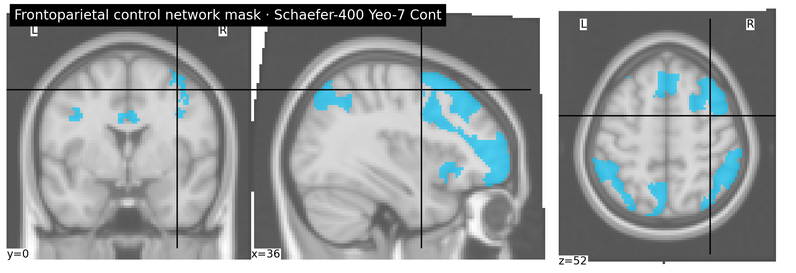
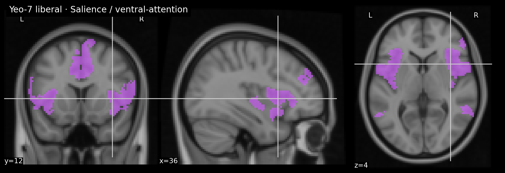
Seed and cluster maps
4s456__066 · LH_SomMot_35 · c2_control_minus_walking
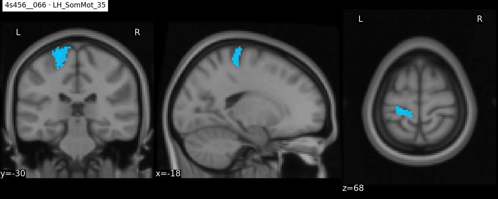
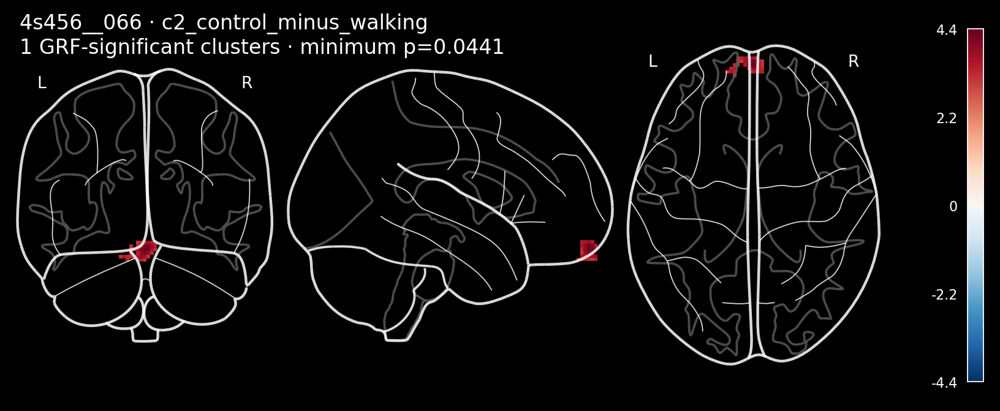
Full-extent MNI montages
Cluster table
| seed_id | atlas | name | contrast | Cluster Index | Voxels | Peak T | p_grf | Peak X (mm) | Peak Y (mm) | Peak Z (mm) | yeo_dominant_network | yeo_cont_pct | yeo_salience_pct | yeo_unassigned_pct | yeo_network_composition | aal3_peak_label | aal3_composition | harvard_oxford_cortical_composition | harvard_oxford_subcortical_composition | cerebellum_composition |
|---|---|---|---|---|---|---|---|---|---|---|---|---|---|---|---|---|---|---|---|---|
| 4s456__066 | 4s456 | LH_SomMot_35 | c2_control_minus_walking | 1 | 106 | 4.41 | 0.0441 | 0 | 64 | -20 | Limbic | 0 | 0 | 65.094 | Limbic: 34.9%; Unassigned: 65.1% | Rectus_L | Rectus_L: 19.8%; Rectus_R: 9.4%; OFCmed_L: 0.9%; Frontal_Med_Orb_R: 0.9%; Frontal_Med_Orb_L: 0.9% | Frontal Pole: 59.9% | Right Cerebral Cortex: 38.6%; Left Cerebral Cortex: 21.6% |
4s456__238 · RH_SomMot_8 · c1_walking_minus_control
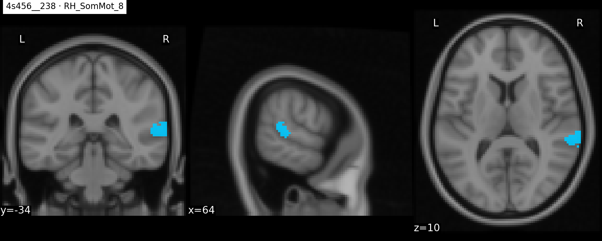
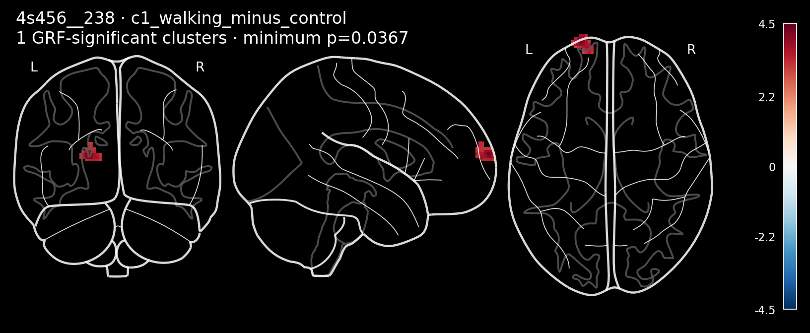
Full-extent MNI montages
Cluster table
| seed_id | atlas | name | contrast | Cluster Index | Voxels | Peak T | p_grf | Peak X (mm) | Peak Y (mm) | Peak Z (mm) | yeo_dominant_network | yeo_cont_pct | yeo_salience_pct | yeo_unassigned_pct | yeo_network_composition | aal3_peak_label | aal3_composition | harvard_oxford_cortical_composition | harvard_oxford_subcortical_composition | cerebellum_composition |
|---|---|---|---|---|---|---|---|---|---|---|---|---|---|---|---|---|---|---|---|---|
| 4s456__238 | 4s456 | RH_SomMot_8 | c1_walking_minus_control | 1 | 124 | 4.47 | 0.0367 | -20 | 72 | 14 | Default | 0 | 0 | 58.065 | Default: 41.9%; Unassigned: 58.1% | No label | Frontal_Sup_2_L: 28.2%; Frontal_Sup_Medial_L: 3.2% | Frontal Pole: 56.8% | Left Cerebral Cortex: 58.4%; Left Cerebral White Matter: 0.5% |
4s456__405 · LH-GPe · c2_control_minus_walking
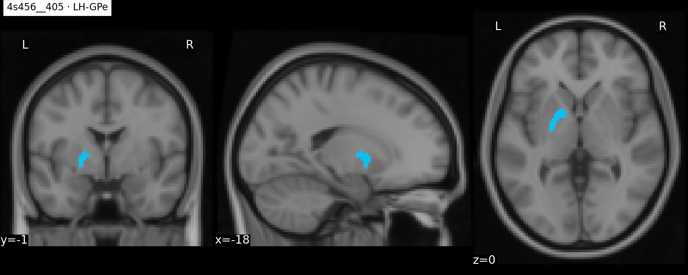
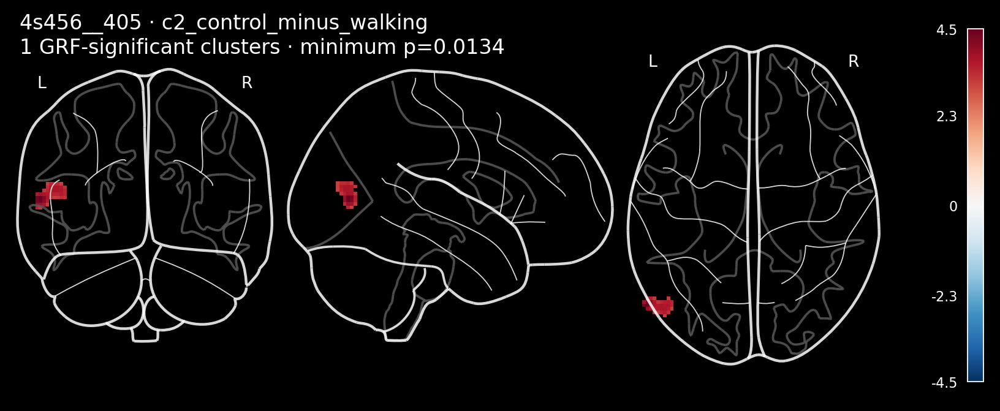
Full-extent MNI montages
Cluster table
| seed_id | atlas | name | contrast | Cluster Index | Voxels | Peak T | p_grf | Peak X (mm) | Peak Y (mm) | Peak Z (mm) | yeo_dominant_network | yeo_cont_pct | yeo_salience_pct | yeo_unassigned_pct | yeo_network_composition | aal3_peak_label | aal3_composition | harvard_oxford_cortical_composition | harvard_oxford_subcortical_composition | cerebellum_composition |
|---|---|---|---|---|---|---|---|---|---|---|---|---|---|---|---|---|---|---|---|---|
| 4s456__405 | 4s456 | LH-GPe | c2_control_minus_walking | 1 | 144 | 4.55 | 0.0134 | -60 | -74 | 10 | Vis | 0 | 0 | 36.806 | Vis: 57.6%; DorsAttn: 5.6%; Unassigned: 36.8% | No label | Occipital_Mid_L: 27.1%; Temporal_Mid_L: 9.7% | Lateral Occipital Cortex, inferior division: 42.3%; Lateral Occipital Cortex, superior division: 22.7% | Left Cerebral Cortex: 70.7% |
4s456__406 · LH-GPi · c2_control_minus_walking
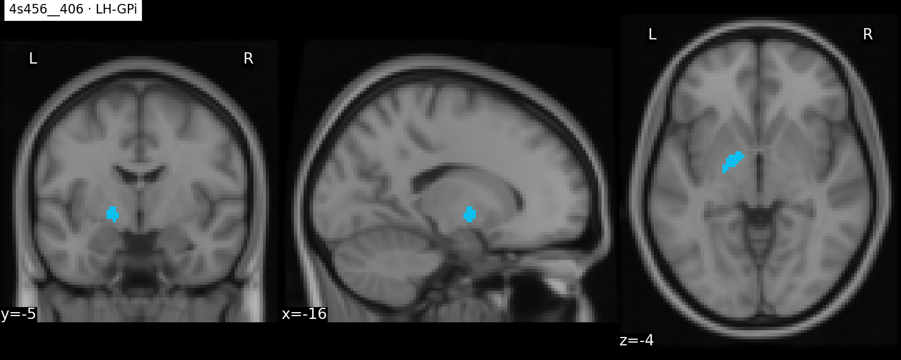
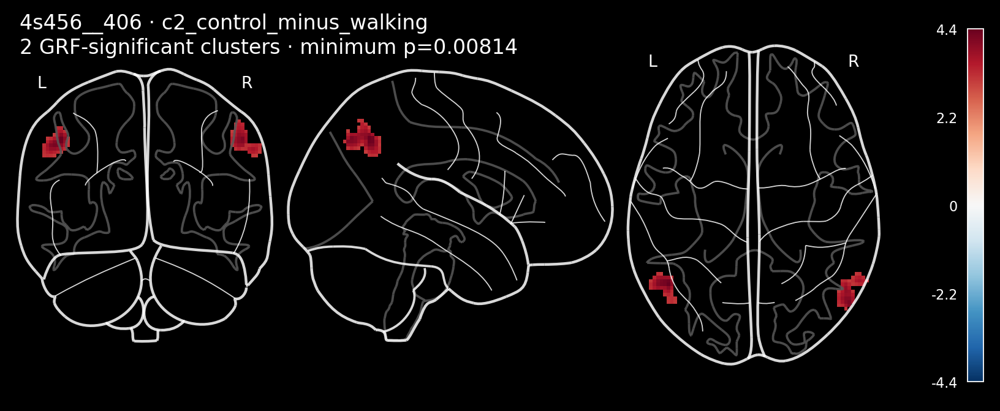
Full-extent MNI montages
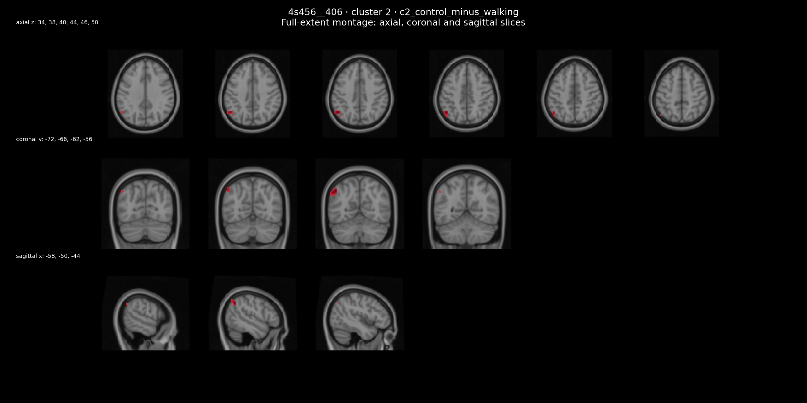
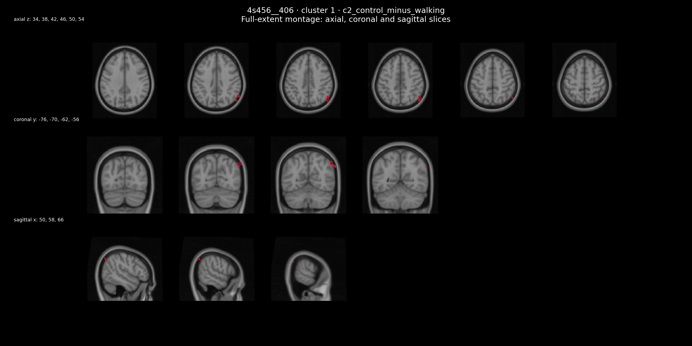
Cluster table
| seed_id | atlas | name | contrast | Cluster Index | Voxels | Peak T | p_grf | Peak X (mm) | Peak Y (mm) | Peak Z (mm) | yeo_dominant_network | yeo_cont_pct | yeo_salience_pct | yeo_unassigned_pct | yeo_network_composition | aal3_peak_label | aal3_composition | harvard_oxford_cortical_composition | harvard_oxford_subcortical_composition | cerebellum_composition |
|---|---|---|---|---|---|---|---|---|---|---|---|---|---|---|---|---|---|---|---|---|
| 4s456__406 | 4s456 | LH-GPi | c2_control_minus_walking | 2 | 192 | 4.43 | 0.00814 | -48 | -62 | 44 | Default | 0 | 0 | 3.6458 | Default: 96.4%; Unassigned: 3.6% | Angular_L | Angular_R: 26.1%; Parietal_Inf_R: 4.5% | Lateral Occipital Cortex, superior division: 15.8%; Angular Gyrus: 1.0% | Right Cerebral Cortex: 22.1% | |
| 4s456__406 | 4s456 | LH-GPi | c2_control_minus_walking | 1 | 176 | 4.18 | 0.0128 | 56 | -72 | 44 | Default | 0 | 0 | 72.727 | Default: 27.3%; Unassigned: 72.7% | No label | Angular_L: 53.6%; Parietal_Inf_L: 15.1% | Lateral Occipital Cortex, superior division: 78.1%; Angular Gyrus: 16.7% | Left Cerebral Cortex: 97.3%; Left Cerebral White Matter: 0.1% |
4s456__412 · LH-HTH · c1_walking_minus_control
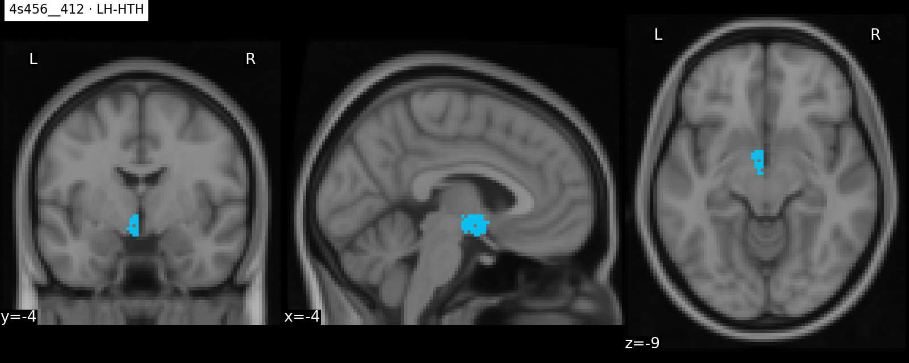
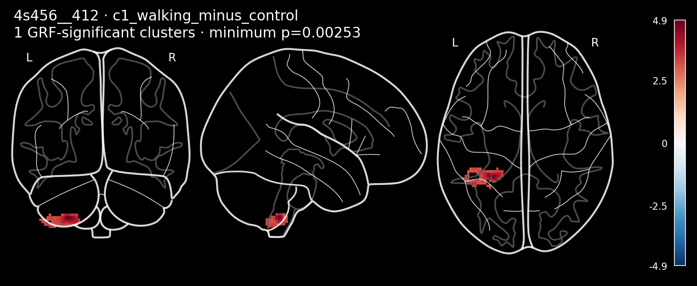
Full-extent MNI montages
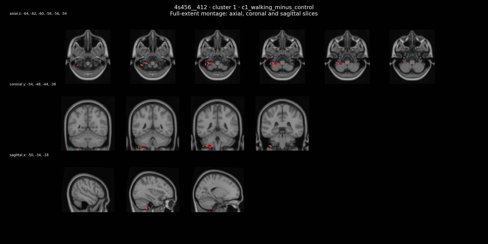
Cluster table
| seed_id | atlas | name | contrast | Cluster Index | Voxels | Peak T | p_grf | Peak X (mm) | Peak Y (mm) | Peak Z (mm) | yeo_dominant_network | yeo_cont_pct | yeo_salience_pct | yeo_unassigned_pct | yeo_network_composition | aal3_peak_label | aal3_composition | harvard_oxford_cortical_composition | harvard_oxford_subcortical_composition | cerebellum_composition |
|---|---|---|---|---|---|---|---|---|---|---|---|---|---|---|---|---|---|---|---|---|
| 4s456__412 | 4s456 | LH-HTH | c1_walking_minus_control | 1 | 210 | 4.95 | 0.00253 | -26 | -44 | -56 | Unassigned | 0 | 0 | 100 | Unassigned: 100.0% | Cerebellum_8_L | Cerebellum_8_L: 33.8%; Cerebellum_9_L: 0.5% | Left VIIIb: 20.7%; Left VIIIa: 14.1% |
4s456__415 · RH-Pu · c2_control_minus_walking
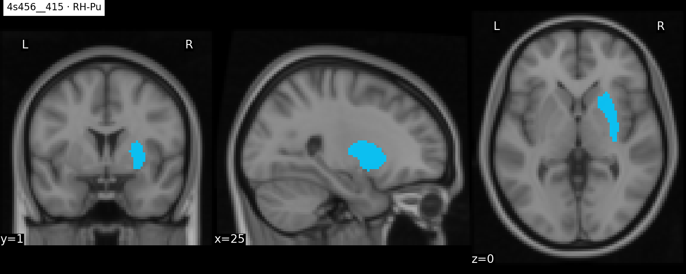
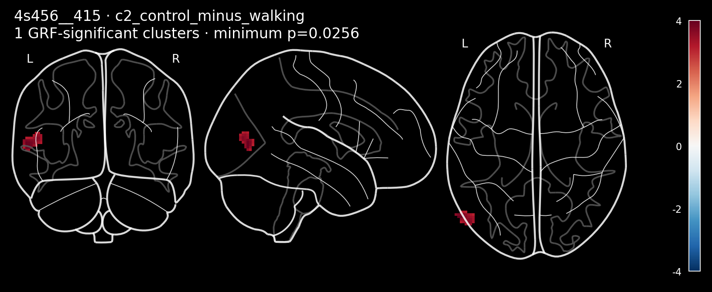
Full-extent MNI montages
Cluster table
| seed_id | atlas | name | contrast | Cluster Index | Voxels | Peak T | p_grf | Peak X (mm) | Peak Y (mm) | Peak Z (mm) | yeo_dominant_network | yeo_cont_pct | yeo_salience_pct | yeo_unassigned_pct | yeo_network_composition | aal3_peak_label | aal3_composition | harvard_oxford_cortical_composition | harvard_oxford_subcortical_composition | cerebellum_composition |
|---|---|---|---|---|---|---|---|---|---|---|---|---|---|---|---|---|---|---|---|---|
| 4s456__415 | 4s456 | RH-Pu | c2_control_minus_walking | 1 | 120 | 4 | 0.0256 | -62 | -74 | 6 | Vis | 0 | 0 | 55.833 | Vis: 39.2%; DorsAttn: 5.0%; Unassigned: 55.8% | No label | Occipital_Mid_L: 15.0%; Temporal_Mid_L: 7.5% | Lateral Occipital Cortex, inferior division: 45.2%; Lateral Occipital Cortex, superior division: 2.7% | Left Cerebral Cortex: 52.6% |
4s456__422 · RH-RN · c1_walking_minus_control
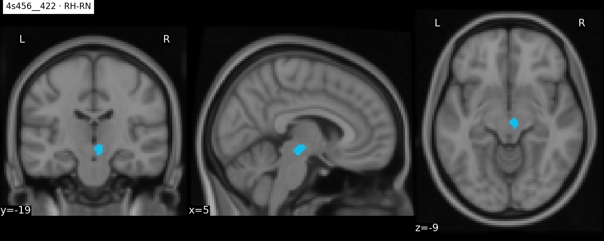
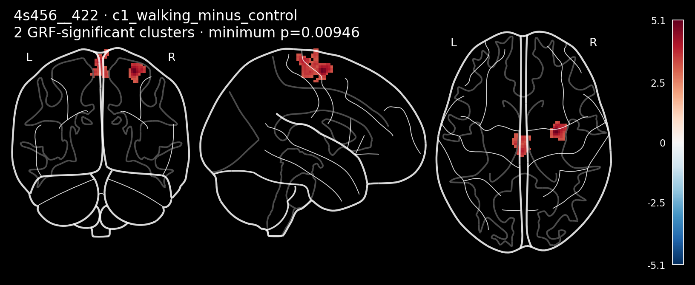
Full-extent MNI montages
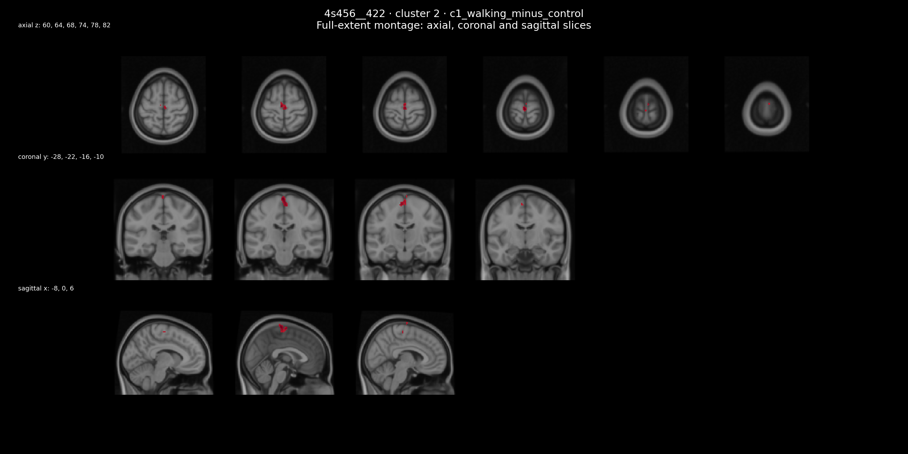
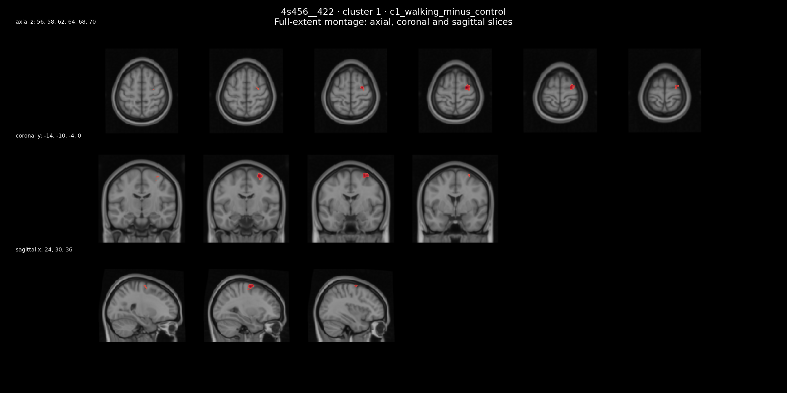
Cluster table
| seed_id | atlas | name | contrast | Cluster Index | Voxels | Peak T | p_grf | Peak X (mm) | Peak Y (mm) | Peak Z (mm) | yeo_dominant_network | yeo_cont_pct | yeo_salience_pct | yeo_unassigned_pct | yeo_network_composition | aal3_peak_label | aal3_composition | harvard_oxford_cortical_composition | harvard_oxford_subcortical_composition | cerebellum_composition |
|---|---|---|---|---|---|---|---|---|---|---|---|---|---|---|---|---|---|---|---|---|
| 4s456__422 | 4s456 | RH-RN | c1_walking_minus_control | 2 | 211 | 4 | 0.00946 | 0 | -24 | 72 | SomMot | 0 | 0 | 30.806 | SomMot: 69.2%; Unassigned: 30.8% | No label | Frontal_Sup_2_R: 95.6%; Precentral_R: 4.4% | Precentral Gyrus: 65.0%; Superior Frontal Gyrus: 19.8%; Middle Frontal Gyrus: 2.5% | Right Cerebral Cortex: 96.4%; Right Cerebral White Matter: 1.2% | |
| 4s456__422 | 4s456 | RH-RN | c1_walking_minus_control | 1 | 158 | 5.07 | 0.0362 | 28 | -8 | 64 | SomMot | 0 | 1.8987 | 7.5949 | SomMot: 51.3%; DorsAttn: 39.2%; SalVentAttn: 1.9%; Unassigned: 7.6% | Frontal_Sup_2_R | Paracentral_Lobule_L: 38.9%; Supp_Motor_Area_R: 27.5%; Supp_Motor_Area_L: 12.8%; Paracentral_Lobule_R: 7.1% | Precentral Gyrus: 83.1%; Juxtapositional Lobule Cortex (formerly Supplementary Motor Cortex): 5.3% | Right Cerebral Cortex: 44.2%; Left Cerebral Cortex: 43.5%; Left Cerebral White Matter: 4.5%; Right Cerebral White Matter: 0.1% |
4s456__443 · LH_Hippocampus · c1_walking_minus_control
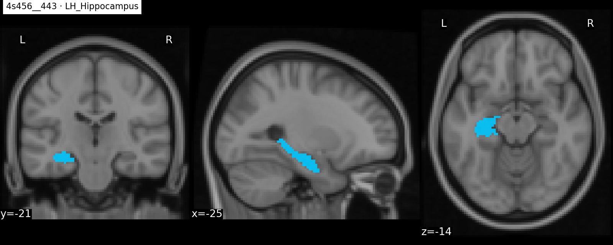
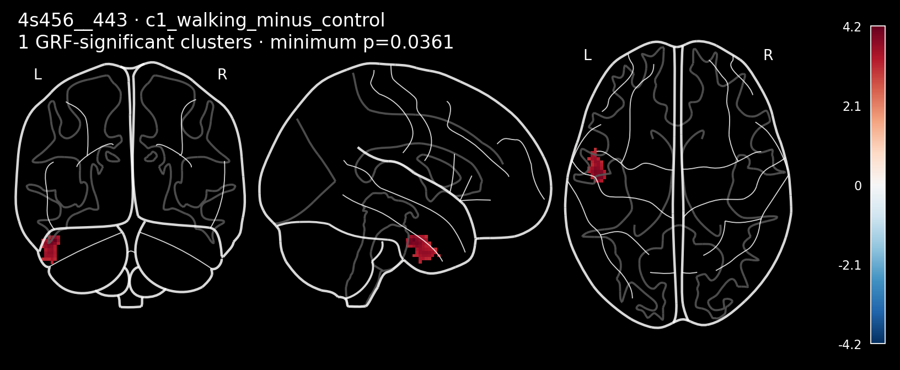
Full-extent MNI montages
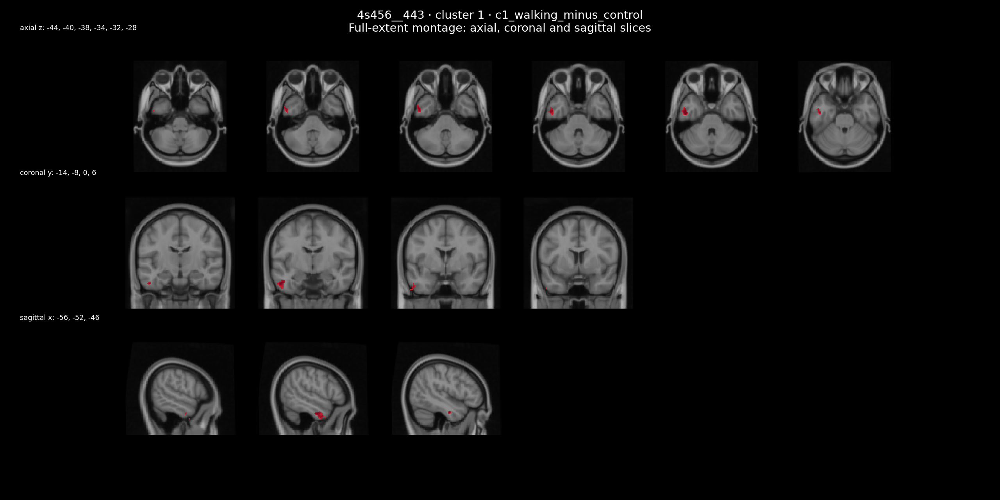
Cluster table
| seed_id | atlas | name | contrast | Cluster Index | Voxels | Peak T | p_grf | Peak X (mm) | Peak Y (mm) | Peak Z (mm) | yeo_dominant_network | yeo_cont_pct | yeo_salience_pct | yeo_unassigned_pct | yeo_network_composition | aal3_peak_label | aal3_composition | harvard_oxford_cortical_composition | harvard_oxford_subcortical_composition | cerebellum_composition |
|---|---|---|---|---|---|---|---|---|---|---|---|---|---|---|---|---|---|---|---|---|
| 4s456__443 | 4s456 | LH_Hippocampus | c1_walking_minus_control | 1 | 153 | 4.2 | 0.0361 | -48 | -10 | -30 | Default | 0 | 0 | 11.765 | Default: 60.1%; Limbic: 28.1%; Unassigned: 11.8% | Temporal_Inf_L | Temporal_Inf_L: 93.5%; Temporal_Mid_L: 3.9% | Inferior Temporal Gyrus, anterior division: 60.5%; Inferior Temporal Gyrus, posterior division: 11.1%; Middle Temporal Gyrus, anterior division: 10.2%; Temporal Pole: 3.9% | Left Cerebral Cortex: 85.0%; Left Cerebral White Matter: 14.2% |
4s456__455 · Cerebellar_Region9 · c2_control_minus_walking
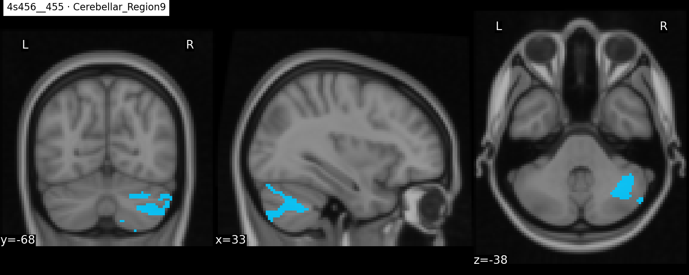
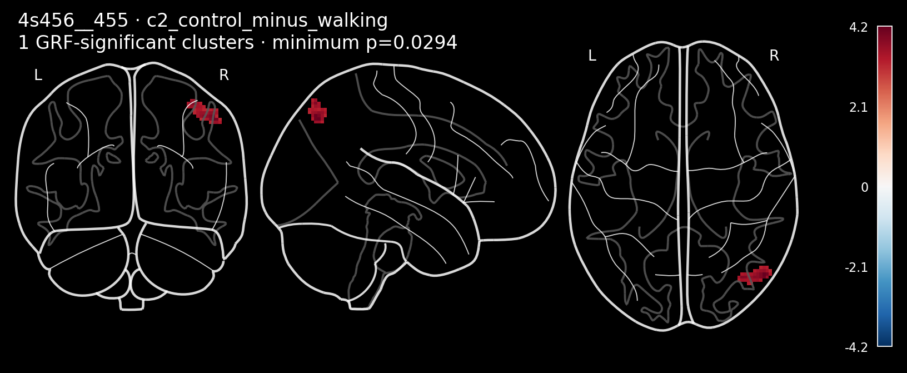
Full-extent MNI montages
Cluster table
| seed_id | atlas | name | contrast | Cluster Index | Voxels | Peak T | p_grf | Peak X (mm) | Peak Y (mm) | Peak Z (mm) | yeo_dominant_network | yeo_cont_pct | yeo_salience_pct | yeo_unassigned_pct | yeo_network_composition | aal3_peak_label | aal3_composition | harvard_oxford_cortical_composition | harvard_oxford_subcortical_composition | cerebellum_composition |
|---|---|---|---|---|---|---|---|---|---|---|---|---|---|---|---|---|---|---|---|---|
| 4s456__455 | 4s456 | Cerebellar_Region9 | c2_control_minus_walking | 1 | 114 | 4.18 | 0.0294 | 52 | -72 | 48 | Cont | 0.87719 | 0 | 98.246 | Cont: 0.9%; Default: 0.9%; Unassigned: 98.2% | No label | Angular_R: 7.0% | Lateral Occipital Cortex, superior division: 0.3% | Right Cerebral Cortex: 0.4% |
brainnetome246__007 · A6dl_L · c2_control_minus_walking
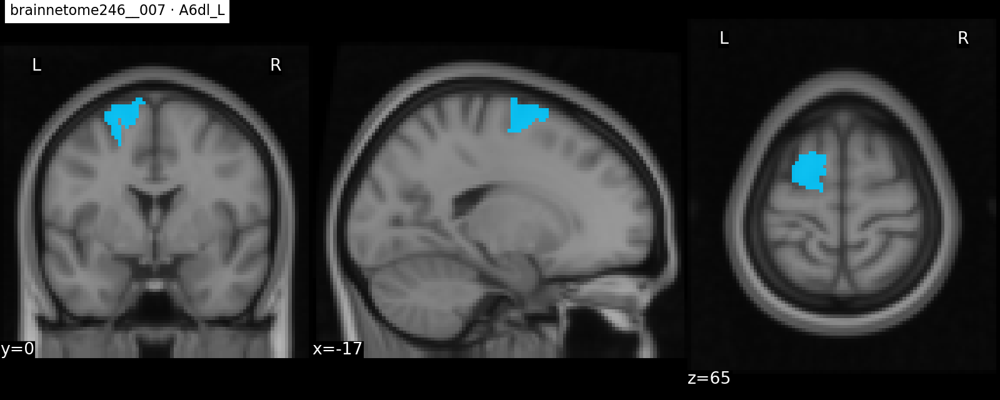
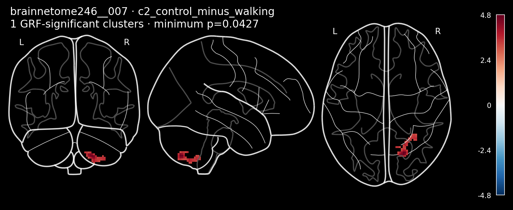
Full-extent MNI montages
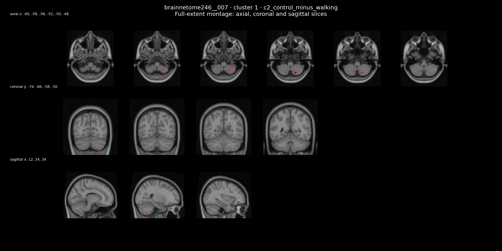
Cluster table
| seed_id | atlas | name | contrast | Cluster Index | Voxels | Peak T | p_grf | Peak X (mm) | Peak Y (mm) | Peak Z (mm) | yeo_dominant_network | yeo_cont_pct | yeo_salience_pct | yeo_unassigned_pct | yeo_network_composition | aal3_peak_label | aal3_composition | harvard_oxford_cortical_composition | harvard_oxford_subcortical_composition | cerebellum_composition |
|---|---|---|---|---|---|---|---|---|---|---|---|---|---|---|---|---|---|---|---|---|
| brainnetome246__007 | brainnetome246 | A6dl_L | c2_control_minus_walking | 1 | 121 | 4.77 | 0.0427 | 20 | -70 | -52 | Unassigned | 0 | 0 | 100 | Unassigned: 100.0% | Cerebellum_8_R | Cerebellum_8_R: 100.0% | Right VIIIa: 61.9%; Right VIIb: 37.9%; Right VIIIb: 0.2% |
brainnetome246__215 · rHipp_L · c1_walking_minus_control
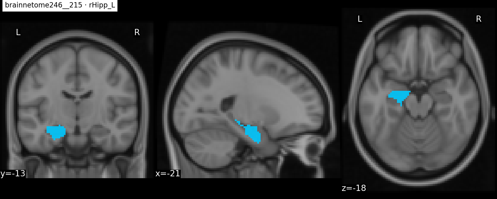
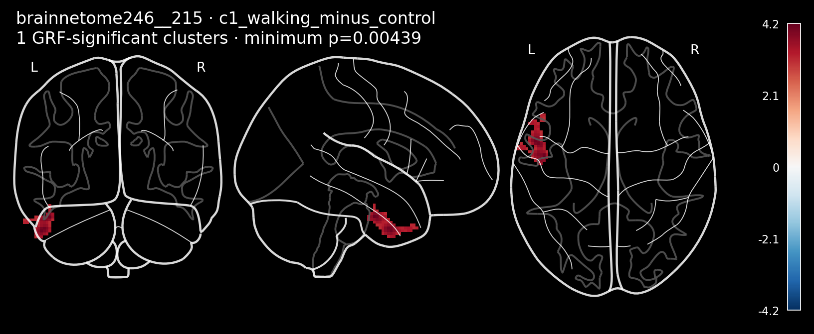
Full-extent MNI montages
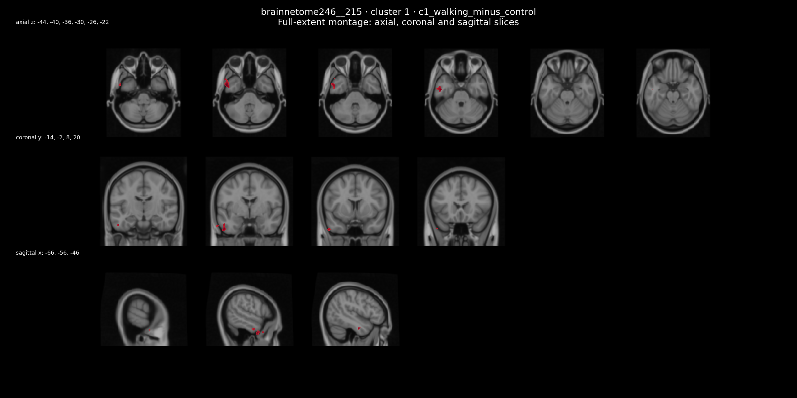
Cluster table
| seed_id | atlas | name | contrast | Cluster Index | Voxels | Peak T | p_grf | Peak X (mm) | Peak Y (mm) | Peak Z (mm) | yeo_dominant_network | yeo_cont_pct | yeo_salience_pct | yeo_unassigned_pct | yeo_network_composition | aal3_peak_label | aal3_composition | harvard_oxford_cortical_composition | harvard_oxford_subcortical_composition | cerebellum_composition |
|---|---|---|---|---|---|---|---|---|---|---|---|---|---|---|---|---|---|---|---|---|
| brainnetome246__215 | brainnetome246 | rHipp_L | c1_walking_minus_control | 1 | 227 | 4.21 | 0.00439 | -48 | -10 | -30 | Default | 0 | 0 | 36.564 | Default: 50.7%; Limbic: 12.8%; Unassigned: 36.6% | Temporal_Inf_L | Temporal_Inf_L: 62.6%; Temporal_Mid_L: 4.0%; Temporal_Pole_Mid_L: 2.2% | Inferior Temporal Gyrus, anterior division: 37.1%; Temporal Pole: 11.4%; Middle Temporal Gyrus, anterior division: 8.3%; Inferior Temporal Gyrus, posterior division: 5.3% | Left Cerebral Cortex: 66.3%; Left Cerebral White Matter: 9.7% |
brainnetome246__218 · cHipp_R · c1_walking_minus_control
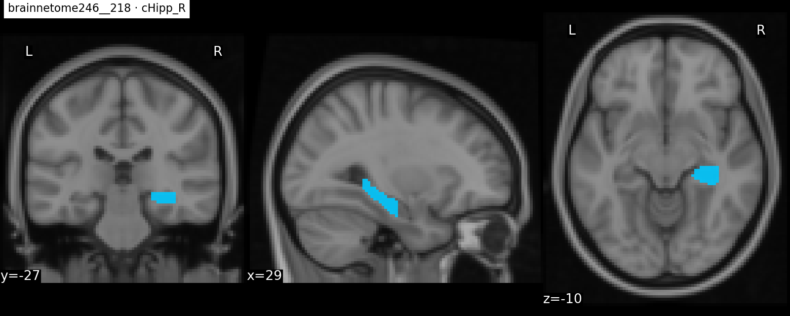
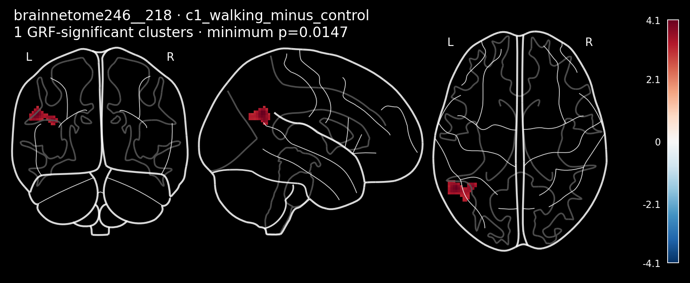
Full-extent MNI montages
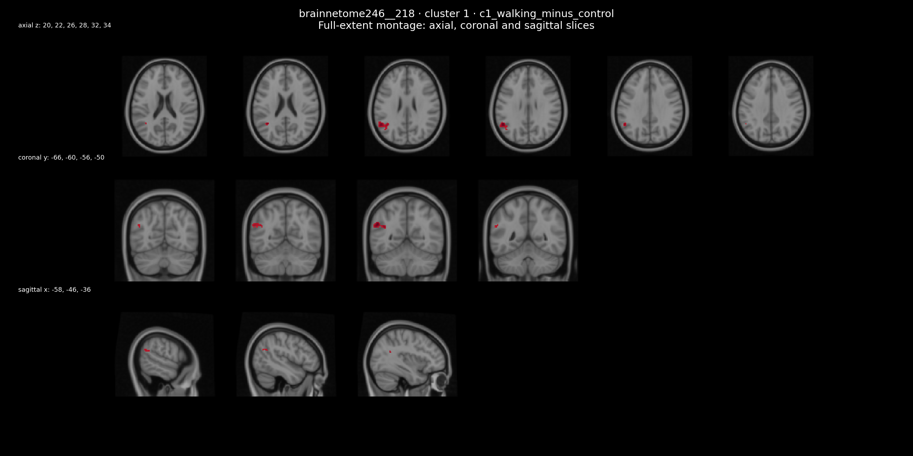
Cluster table
| seed_id | atlas | name | contrast | Cluster Index | Voxels | Peak T | p_grf | Peak X (mm) | Peak Y (mm) | Peak Z (mm) | yeo_dominant_network | yeo_cont_pct | yeo_salience_pct | yeo_unassigned_pct | yeo_network_composition | aal3_peak_label | aal3_composition | harvard_oxford_cortical_composition | harvard_oxford_subcortical_composition | cerebellum_composition |
|---|---|---|---|---|---|---|---|---|---|---|---|---|---|---|---|---|---|---|---|---|
| brainnetome246__218 | brainnetome246 | cHipp_R | c1_walking_minus_control | 1 | 182 | 4.13 | 0.0147 | -52 | -56 | 28 | Default | 0 | 2.1978 | 4.3956 | Default: 93.4%; SalVentAttn: 2.2%; Unassigned: 4.4% | Angular_L | Angular_L: 78.6%; SupraMarginal_L: 18.1%; Temporal_Mid_L: 0.5% | Angular Gyrus: 79.4%; Lateral Occipital Cortex, superior division: 12.6%; Supramarginal Gyrus, posterior division: 3.4% | Left Cerebral Cortex: 87.2%; Left Cerebral White Matter: 12.8% |
brainnetome246__220 · vCa_R · c2_control_minus_walking
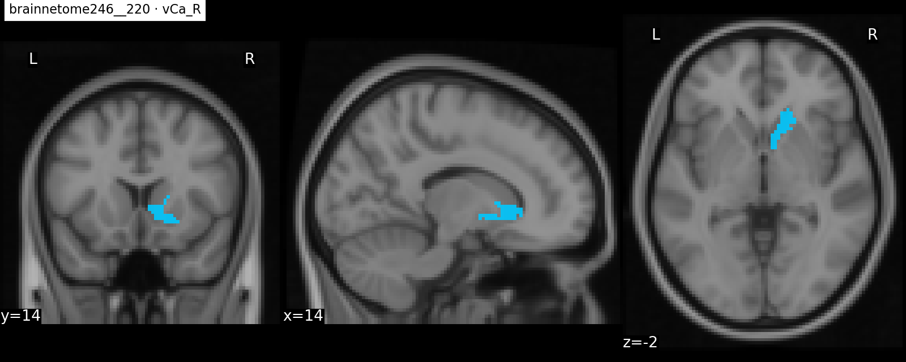
Full-extent MNI montages
Cluster table
| seed_id | atlas | name | contrast | Cluster Index | Voxels | Peak T | p_grf | Peak X (mm) | Peak Y (mm) | Peak Z (mm) | yeo_dominant_network | yeo_cont_pct | yeo_salience_pct | yeo_unassigned_pct | yeo_network_composition | aal3_peak_label | aal3_composition | harvard_oxford_cortical_composition | harvard_oxford_subcortical_composition | cerebellum_composition |
|---|---|---|---|---|---|---|---|---|---|---|---|---|---|---|---|---|---|---|---|---|
| brainnetome246__220 | brainnetome246 | vCa_R | c2_control_minus_walking | 1 | 155 | 4.49 | 0.00556 | -58 | -74 | 10 | Vis | 0 | 0 | 51.613 | Vis: 43.2%; DorsAttn: 5.2%; Unassigned: 51.6% | No label | Occipital_Mid_L: 15.5%; Temporal_Mid_L: 14.2% | Lateral Occipital Cortex, inferior division: 49.5%; Lateral Occipital Cortex, superior division: 4.1% | Left Cerebral Cortex: 57.6% |
brainnetome246__221 · GP_L · c2_control_minus_walking
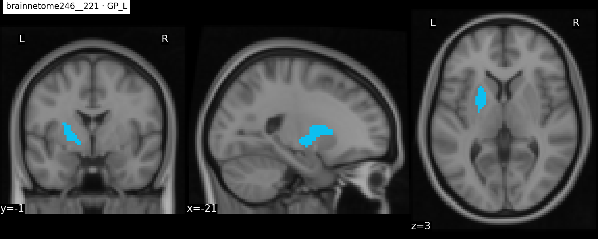
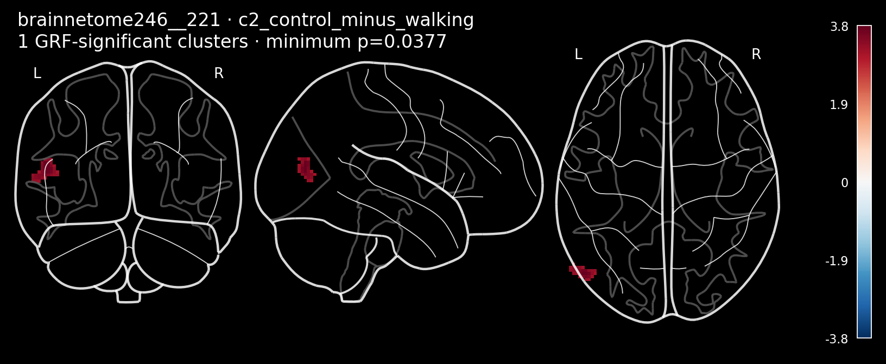
Full-extent MNI montages
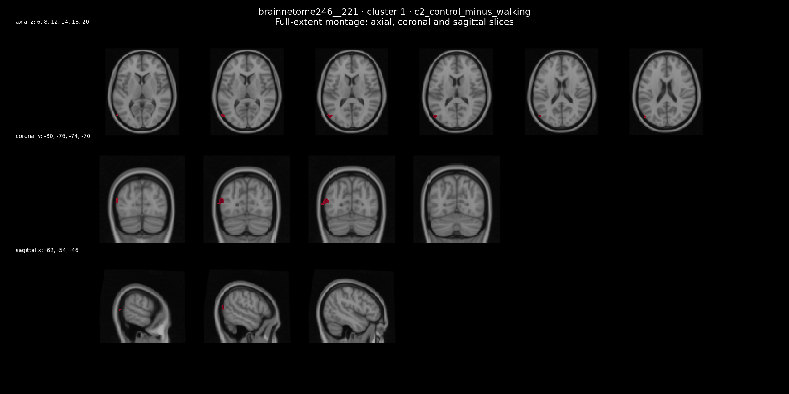
Cluster table
| seed_id | atlas | name | contrast | Cluster Index | Voxels | Peak T | p_grf | Peak X (mm) | Peak Y (mm) | Peak Z (mm) | yeo_dominant_network | yeo_cont_pct | yeo_salience_pct | yeo_unassigned_pct | yeo_network_composition | aal3_peak_label | aal3_composition | harvard_oxford_cortical_composition | harvard_oxford_subcortical_composition | cerebellum_composition |
|---|---|---|---|---|---|---|---|---|---|---|---|---|---|---|---|---|---|---|---|---|
| brainnetome246__221 | brainnetome246 | GP_L | c2_control_minus_walking | 1 | 117 | 3.76 | 0.0377 | -52 | -76 | 14 | Vis | 0 | 0 | 35.043 | Vis: 64.1%; DorsAttn: 0.9%; Unassigned: 35.0% | Occipital_Mid_L | Occipital_Mid_L: 27.4%; Temporal_Mid_L: 1.7% | Lateral Occipital Cortex, inferior division: 45.9%; Lateral Occipital Cortex, superior division: 18.3% | Left Cerebral Cortex: 72.0% |
brainnetome246__225 · vmPu_L · c2_control_minus_walking
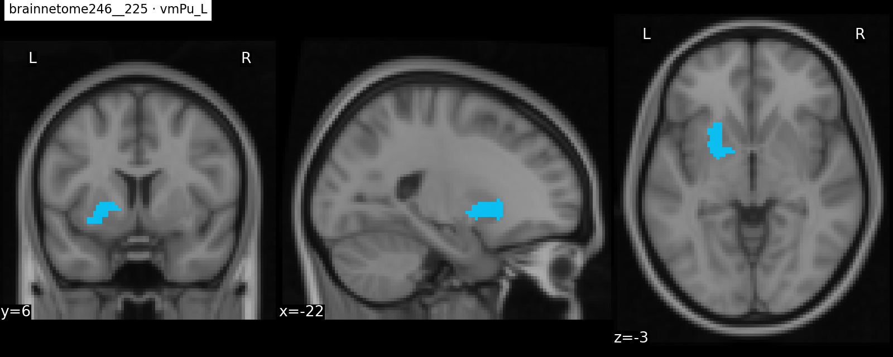
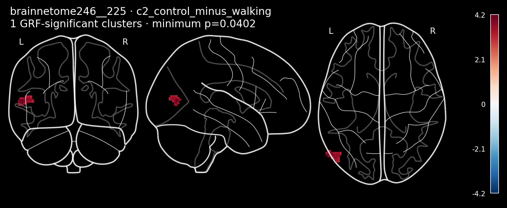
Full-extent MNI montages
Cluster table
| seed_id | atlas | name | contrast | Cluster Index | Voxels | Peak T | p_grf | Peak X (mm) | Peak Y (mm) | Peak Z (mm) | yeo_dominant_network | yeo_cont_pct | yeo_salience_pct | yeo_unassigned_pct | yeo_network_composition | aal3_peak_label | aal3_composition | harvard_oxford_cortical_composition | harvard_oxford_subcortical_composition | cerebellum_composition |
|---|---|---|---|---|---|---|---|---|---|---|---|---|---|---|---|---|---|---|---|---|
| brainnetome246__225 | brainnetome246 | vmPu_L | c2_control_minus_walking | 1 | 114 | 4.16 | 0.0402 | -58 | -74 | 10 | Vis | 0 | 0 | 36.842 | Vis: 60.5%; DorsAttn: 2.6%; Unassigned: 36.8% | No label | Occipital_Mid_L: 28.1%; Temporal_Mid_L: 9.6% | Lateral Occipital Cortex, inferior division: 68.0%; Lateral Occipital Cortex, superior division: 0.8% | Left Cerebral Cortex: 72.3% |
brainnetome246__226 · vmPu_R · c2_control_minus_walking
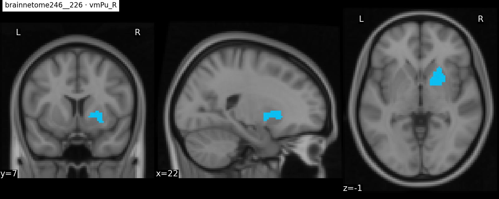
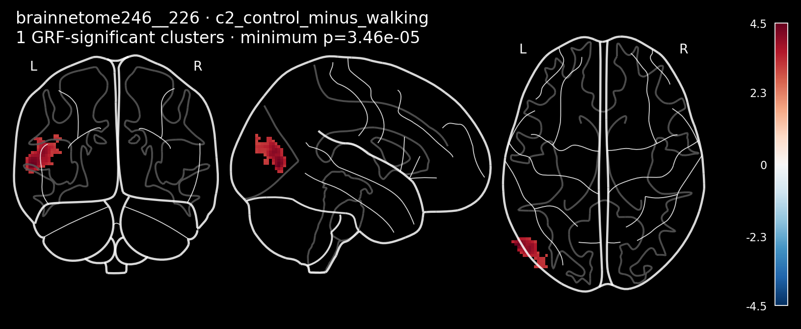
Full-extent MNI montages
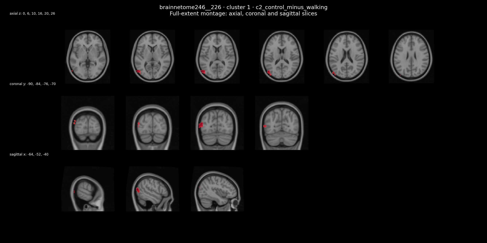
Cluster table
| seed_id | atlas | name | contrast | Cluster Index | Voxels | Peak T | p_grf | Peak X (mm) | Peak Y (mm) | Peak Z (mm) | yeo_dominant_network | yeo_cont_pct | yeo_salience_pct | yeo_unassigned_pct | yeo_network_composition | aal3_peak_label | aal3_composition | harvard_oxford_cortical_composition | harvard_oxford_subcortical_composition | cerebellum_composition |
|---|---|---|---|---|---|---|---|---|---|---|---|---|---|---|---|---|---|---|---|---|
| brainnetome246__226 | brainnetome246 | vmPu_R | c2_control_minus_walking | 1 | 354 | 4.51 | 3.46e-05 | -60 | -74 | 4 | Vis | 0 | 0 | 46.045 | Vis: 48.6%; DorsAttn: 5.4%; Unassigned: 46.0% | No label | Occipital_Mid_L: 21.8%; Temporal_Mid_L: 8.5% | Lateral Occipital Cortex, inferior division: 38.2%; Lateral Occipital Cortex, superior division: 18.1% | Left Cerebral Cortex: 62.6% |
difumo256__021 · Amygdala · c1_walking_minus_control
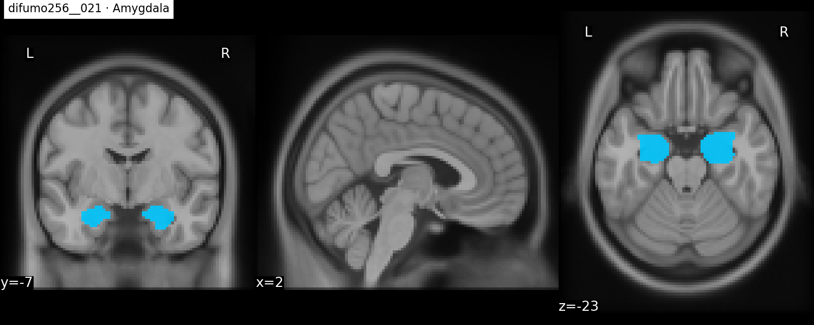
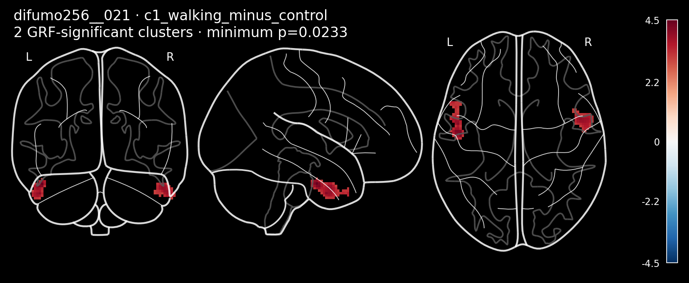
Full-extent MNI montages
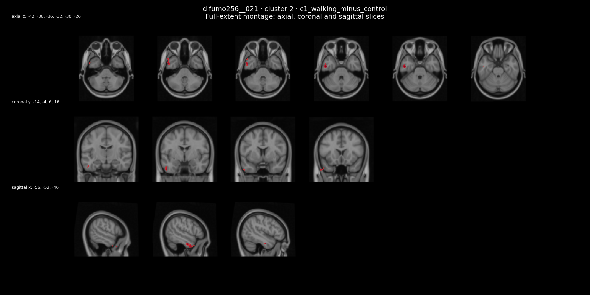
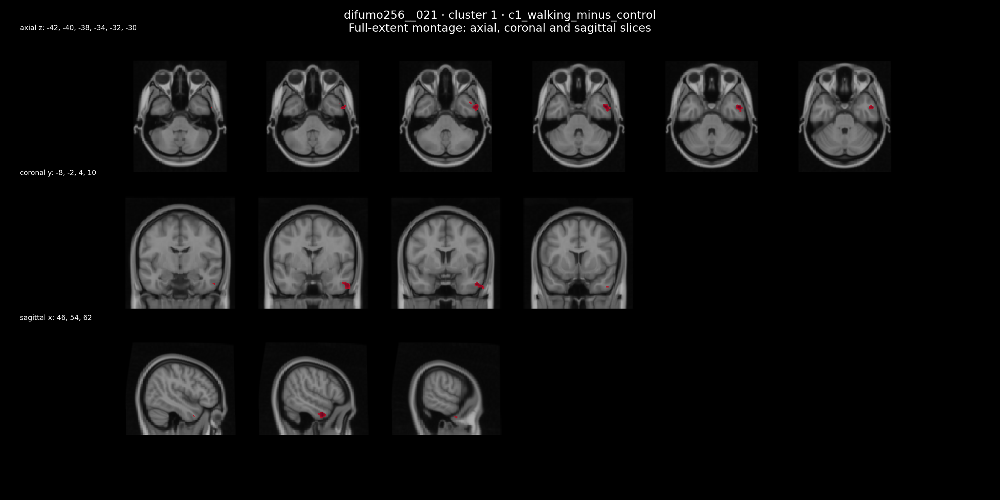
Cluster table
| seed_id | atlas | name | contrast | Cluster Index | Voxels | Peak T | p_grf | Peak X (mm) | Peak Y (mm) | Peak Z (mm) | yeo_dominant_network | yeo_cont_pct | yeo_salience_pct | yeo_unassigned_pct | yeo_network_composition | aal3_peak_label | aal3_composition | harvard_oxford_cortical_composition | harvard_oxford_subcortical_composition | cerebellum_composition |
|---|---|---|---|---|---|---|---|---|---|---|---|---|---|---|---|---|---|---|---|---|
| difumo256__021 | difumo256 | Amygdala | c1_walking_minus_control | 2 | 173 | 4.5 | 0.0233 | -48 | -10 | -30 | Default | 0 | 0 | 20.231 | Default: 65.3%; Limbic: 14.5%; Unassigned: 20.2% | Temporal_Inf_L | Temporal_Inf_R: 66.2%; Temporal_Mid_R: 15.0%; Temporal_Pole_Mid_R: 3.8% | Middle Temporal Gyrus, anterior division: 41.5%; Inferior Temporal Gyrus, anterior division: 14.0%; Temporal Pole: 12.2%; Inferior Temporal Gyrus, posterior division: 0.5% | Right Cerebral Cortex: 78.1%; Right Cerebral White Matter: 2.7% | |
| difumo256__021 | difumo256 | Amygdala | c1_walking_minus_control | 1 | 160 | 3.97 | 0.0328 | 52 | 2 | -32 | Default | 0 | 0 | 25.625 | Default: 59.4%; Limbic: 15.0%; Unassigned: 25.6% | Temporal_Mid_R | Temporal_Inf_L: 78.6%; Temporal_Pole_Mid_L: 4.6%; Temporal_Mid_L: 2.3% | Inferior Temporal Gyrus, anterior division: 44.2%; Temporal Pole: 20.7%; Inferior Temporal Gyrus, posterior division: 7.4%; Middle Temporal Gyrus, anterior division: 5.4% | Left Cerebral Cortex: 80.2%; Left Cerebral White Matter: 12.4% |
difumo256__053 · Caudate anterior · c2_control_minus_walking
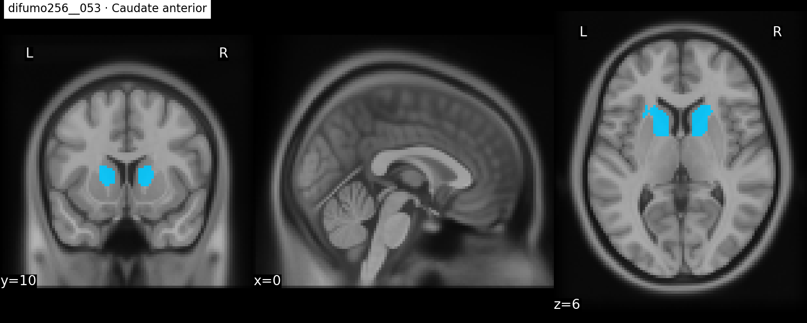
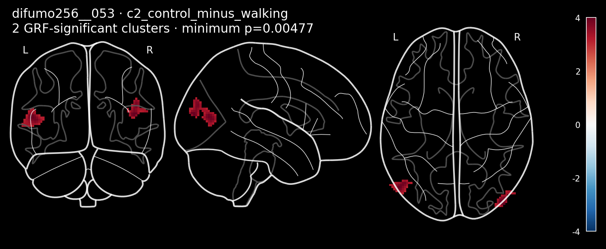
Full-extent MNI montages
Cluster table
| seed_id | atlas | name | contrast | Cluster Index | Voxels | Peak T | p_grf | Peak X (mm) | Peak Y (mm) | Peak Z (mm) | yeo_dominant_network | yeo_cont_pct | yeo_salience_pct | yeo_unassigned_pct | yeo_network_composition | aal3_peak_label | aal3_composition | harvard_oxford_cortical_composition | harvard_oxford_subcortical_composition | cerebellum_composition |
|---|---|---|---|---|---|---|---|---|---|---|---|---|---|---|---|---|---|---|---|---|
| difumo256__053 | difumo256 | Caudate anterior | c2_control_minus_walking | 2 | 181 | 4.01 | 0.00477 | -54 | -76 | 12 | Vis | 0 | 0 | 28.177 | Vis: 68.5%; DorsAttn: 3.3%; Unassigned: 28.2% | No label | Occipital_Mid_R: 26.1% | Lateral Occipital Cortex, superior division: 12.6%; Occipital Pole: 0.1% | Right Cerebral Cortex: 19.0% | |
| difumo256__053 | difumo256 | Caudate anterior | c2_control_minus_walking | 1 | 115 | 4.04 | 0.0459 | 46 | -92 | 16 | Vis | 0 | 0 | 82.609 | Vis: 13.0%; DorsAttn: 4.3%; Unassigned: 82.6% | No label | Occipital_Mid_L: 32.0%; Temporal_Mid_L: 16.0% | Lateral Occipital Cortex, inferior division: 65.4%; Lateral Occipital Cortex, superior division: 8.5% | Left Cerebral Cortex: 79.1% |
difumo256__105 · Putamen anterior · c2_control_minus_walking
Full-extent MNI montages
Cluster table
| seed_id | atlas | name | contrast | Cluster Index | Voxels | Peak T | p_grf | Peak X (mm) | Peak Y (mm) | Peak Z (mm) | yeo_dominant_network | yeo_cont_pct | yeo_salience_pct | yeo_unassigned_pct | yeo_network_composition | aal3_peak_label | aal3_composition | harvard_oxford_cortical_composition | harvard_oxford_subcortical_composition | cerebellum_composition |
|---|---|---|---|---|---|---|---|---|---|---|---|---|---|---|---|---|---|---|---|---|
| difumo256__105 | difumo256 | Putamen anterior | c2_control_minus_walking | 1 | 118 | 3.86 | 0.0346 | -58 | -74 | 8 | Vis | 0 | 0 | 53.39 | Vis: 44.1%; DorsAttn: 2.5%; Unassigned: 53.4% | No label | Occipital_Mid_L: 15.3%; Temporal_Mid_L: 5.9% | Lateral Occipital Cortex, inferior division: 51.8%; Lateral Occipital Cortex, superior division: 0.5% | Left Cerebral Cortex: 56.9% |
difumo256__165 · Fluid between cerebellum and pons · c1_walking_minus_control
Full-extent MNI montages
Cluster table
| seed_id | atlas | name | contrast | Cluster Index | Voxels | Peak T | p_grf | Peak X (mm) | Peak Y (mm) | Peak Z (mm) | yeo_dominant_network | yeo_cont_pct | yeo_salience_pct | yeo_unassigned_pct | yeo_network_composition | aal3_peak_label | aal3_composition | harvard_oxford_cortical_composition | harvard_oxford_subcortical_composition | cerebellum_composition |
|---|---|---|---|---|---|---|---|---|---|---|---|---|---|---|---|---|---|---|---|---|
| difumo256__165 | difumo256 | Fluid between cerebellum and pons | c1_walking_minus_control | 1 | 157 | 3.91 | 0.0132 | 2 | -80 | 48 | Default | 15.924 | 0 | 29.936 | Default: 49.0%; Cont: 15.9%; Vis: 5.1%; Unassigned: 29.9% | No label | Precuneus_L: 42.7%; Precuneus_R: 27.4%; Cuneus_L: 10.2%; Cuneus_R: 3.8% | Precuneous Cortex: 77.4%; Cuneal Cortex: 7.6% | Right Cerebral Cortex: 51.4%; Left Cerebral Cortex: 32.3%; Left Cerebral White Matter: 1.7% |
glasser360__139 · Right_TPOJ1 · c1_walking_minus_control
Full-extent MNI montages
Cluster table
| seed_id | atlas | name | contrast | Cluster Index | Voxels | Peak T | p_grf | Peak X (mm) | Peak Y (mm) | Peak Z (mm) | yeo_dominant_network | yeo_cont_pct | yeo_salience_pct | yeo_unassigned_pct | yeo_network_composition | aal3_peak_label | aal3_composition | harvard_oxford_cortical_composition | harvard_oxford_subcortical_composition | cerebellum_composition |
|---|---|---|---|---|---|---|---|---|---|---|---|---|---|---|---|---|---|---|---|---|
| glasser360__139 | glasser360 | Right_TPOJ1 | c1_walking_minus_control | 1 | 150 | 3.82 | 0.0163 | -42 | -72 | 40 | Default | 0 | 0 | 6.6667 | Default: 93.3%; Unassigned: 6.7% | Angular_L | Angular_L: 74.7%; Parietal_Inf_L: 3.3%; Occipital_Mid_L: 2.0% | Lateral Occipital Cortex, superior division: 94.3% | Left Cerebral Cortex: 92.1%; Left Cerebral White Matter: 3.4% |
glasser360__139 · Right_TPOJ1 · c2_control_minus_walking
Full-extent MNI montages
Cluster table
| seed_id | atlas | name | contrast | Cluster Index | Voxels | Peak T | p_grf | Peak X (mm) | Peak Y (mm) | Peak Z (mm) | yeo_dominant_network | yeo_cont_pct | yeo_salience_pct | yeo_unassigned_pct | yeo_network_composition | aal3_peak_label | aal3_composition | harvard_oxford_cortical_composition | harvard_oxford_subcortical_composition | cerebellum_composition |
|---|---|---|---|---|---|---|---|---|---|---|---|---|---|---|---|---|---|---|---|---|
| glasser360__139 | glasser360 | Right_TPOJ1 | c2_control_minus_walking | 1 | 127 | 4.1 | 0.0354 | -2 | -94 | 28 | Vis | 0 | 0 | 35.433 | Vis: 64.6%; Unassigned: 35.4% | Cuneus_L | Cuneus_L: 60.6%; Occipital_Sup_L: 14.2% | Occipital Pole: 68.2% | Left Cerebral Cortex: 69.5% |
gordon333__033 · L_SMhand_5 · c1_walking_minus_control
Full-extent MNI montages
Cluster table
| seed_id | atlas | name | contrast | Cluster Index | Voxels | Peak T | p_grf | Peak X (mm) | Peak Y (mm) | Peak Z (mm) | yeo_dominant_network | yeo_cont_pct | yeo_salience_pct | yeo_unassigned_pct | yeo_network_composition | aal3_peak_label | aal3_composition | harvard_oxford_cortical_composition | harvard_oxford_subcortical_composition | cerebellum_composition |
|---|---|---|---|---|---|---|---|---|---|---|---|---|---|---|---|---|---|---|---|---|
| gordon333__033 | gordon333 | L_SMhand_5 | c1_walking_minus_control | 1 | 188 | 4.96 | 0.00262 | -62 | -24 | -32 | Default | 0 | 0 | 48.936 | Default: 34.6%; Limbic: 16.5%; Unassigned: 48.9% | No label | Temporal_Inf_L: 30.3%; Temporal_Mid_L: 0.5% | Inferior Temporal Gyrus, posterior division: 45.6%; Middle Temporal Gyrus, posterior division: 3.5% | Left Cerebral Cortex: 52.5% |
longevity442__002 · pHIP-rh · c1_walking_minus_control
Full-extent MNI montages
Cluster table
| seed_id | atlas | name | contrast | Cluster Index | Voxels | Peak T | p_grf | Peak X (mm) | Peak Y (mm) | Peak Z (mm) | yeo_dominant_network | yeo_cont_pct | yeo_salience_pct | yeo_unassigned_pct | yeo_network_composition | aal3_peak_label | aal3_composition | harvard_oxford_cortical_composition | harvard_oxford_subcortical_composition | cerebellum_composition |
|---|---|---|---|---|---|---|---|---|---|---|---|---|---|---|---|---|---|---|---|---|
| longevity442__002 | longevity442 | pHIP-rh | c1_walking_minus_control | 1 | 161 | 4.09 | 0.0162 | -52 | -56 | 30 | Default | 0 | 2.4845 | 1.8634 | Default: 95.7%; SalVentAttn: 2.5%; Unassigned: 1.9% | Angular_L | Angular_L: 75.2%; SupraMarginal_L: 20.5%; Temporal_Mid_L: 3.7% | Angular Gyrus: 87.5%; Lateral Occipital Cortex, superior division: 6.2%; Supramarginal Gyrus, posterior division: 4.1% | Left Cerebral Cortex: 92.5%; Left Cerebral White Matter: 7.5% |
longevity442__010 · NAc-core-rh · c2_control_minus_walking
Full-extent MNI montages
Cluster table
| seed_id | atlas | name | contrast | Cluster Index | Voxels | Peak T | p_grf | Peak X (mm) | Peak Y (mm) | Peak Z (mm) | yeo_dominant_network | yeo_cont_pct | yeo_salience_pct | yeo_unassigned_pct | yeo_network_composition | aal3_peak_label | aal3_composition | harvard_oxford_cortical_composition | harvard_oxford_subcortical_composition | cerebellum_composition |
|---|---|---|---|---|---|---|---|---|---|---|---|---|---|---|---|---|---|---|---|---|
| longevity442__010 | longevity442 | NAc-core-rh | c2_control_minus_walking | 1 | 197 | 4.64 | 0.00218 | -58 | -74 | 6 | Vis | 0 | 0 | 46.193 | Vis: 47.2%; DorsAttn: 6.6%; Unassigned: 46.2% | No label | Occipital_Mid_L: 22.3%; Temporal_Mid_L: 12.7% | Lateral Occipital Cortex, inferior division: 59.7%; Lateral Occipital Cortex, superior division: 0.6% | Left Cerebral Cortex: 63.1% |
longevity442__013 · aPUT-rh · c2_control_minus_walking
Full-extent MNI montages
Cluster table
| seed_id | atlas | name | contrast | Cluster Index | Voxels | Peak T | p_grf | Peak X (mm) | Peak Y (mm) | Peak Z (mm) | yeo_dominant_network | yeo_cont_pct | yeo_salience_pct | yeo_unassigned_pct | yeo_network_composition | aal3_peak_label | aal3_composition | harvard_oxford_cortical_composition | harvard_oxford_subcortical_composition | cerebellum_composition |
|---|---|---|---|---|---|---|---|---|---|---|---|---|---|---|---|---|---|---|---|---|
| longevity442__013 | longevity442 | aPUT-rh | c2_control_minus_walking | 1 | 323 | 4.77 | 5.75e-05 | -60 | -74 | 6 | Vis | 0 | 0 | 51.393 | Vis: 43.7%; DorsAttn: 5.0%; Unassigned: 51.4% | No label | Occipital_Mid_L: 18.3%; Temporal_Mid_L: 7.7% | Lateral Occipital Cortex, inferior division: 34.1%; Lateral Occipital Cortex, superior division: 17.6% | Left Cerebral Cortex: 58.2% |
longevity442__015 · aCAU-rh · c2_control_minus_walking
Full-extent MNI montages
Cluster table
| seed_id | atlas | name | contrast | Cluster Index | Voxels | Peak T | p_grf | Peak X (mm) | Peak Y (mm) | Peak Z (mm) | yeo_dominant_network | yeo_cont_pct | yeo_salience_pct | yeo_unassigned_pct | yeo_network_composition | aal3_peak_label | aal3_composition | harvard_oxford_cortical_composition | harvard_oxford_subcortical_composition | cerebellum_composition |
|---|---|---|---|---|---|---|---|---|---|---|---|---|---|---|---|---|---|---|---|---|
| longevity442__015 | longevity442 | aCAU-rh | c2_control_minus_walking | 1 | 134 | 4.33 | 0.03 | 24 | -92 | 38 | Vis | 0 | 0 | 59.701 | Vis: 40.3%; Unassigned: 59.7% | No label | Occipital_Sup_R: 30.6%; Cuneus_R: 17.2% | Lateral Occipital Cortex, superior division: 15.9%; Occipital Pole: 12.6% | Right Cerebral Cortex: 36.3%; Right Cerebral White Matter: 2.7% |
longevity442__017 · aHIP-lh · c1_walking_minus_control
Full-extent MNI montages
Cluster table
| seed_id | atlas | name | contrast | Cluster Index | Voxels | Peak T | p_grf | Peak X (mm) | Peak Y (mm) | Peak Z (mm) | yeo_dominant_network | yeo_cont_pct | yeo_salience_pct | yeo_unassigned_pct | yeo_network_composition | aal3_peak_label | aal3_composition | harvard_oxford_cortical_composition | harvard_oxford_subcortical_composition | cerebellum_composition |
|---|---|---|---|---|---|---|---|---|---|---|---|---|---|---|---|---|---|---|---|---|
| longevity442__017 | longevity442 | aHIP-lh | c1_walking_minus_control | 2 | 428 | 4.84 | 0.000107 | -48 | -10 | -30 | Default | 0 | 0 | 25.935 | Default: 47.4%; Limbic: 26.6%; Unassigned: 25.9% | Temporal_Inf_L | Temporal_Inf_R: 65.0%; Temporal_Pole_Mid_R: 9.6%; Temporal_Mid_R: 8.6% | Middle Temporal Gyrus, anterior division: 26.7%; Temporal Pole: 22.7%; Inferior Temporal Gyrus, anterior division: 14.0% | Right Cerebral Cortex: 72.3%; Right Cerebral White Matter: 2.5% | |
| longevity442__017 | longevity442 | aHIP-lh | c1_walking_minus_control | 1 | 197 | 3.93 | 0.0146 | 58 | -4 | -36 | Default | 0 | 0 | 32.487 | Default: 56.9%; Limbic: 10.7%; Unassigned: 32.5% | Temporal_Inf_R | Temporal_Inf_L: 65.2%; Temporal_Mid_L: 3.0%; Temporal_Pole_Mid_L: 1.4% | Inferior Temporal Gyrus, anterior division: 35.2%; Inferior Temporal Gyrus, posterior division: 22.8%; Temporal Pole: 9.6%; Middle Temporal Gyrus, anterior division: 4.4%; Middle Temporal Gyrus, posterior division: 0.5% | Left Cerebral Cortex: 75.9%; Left Cerebral White Matter: 7.6% |
longevity442__029 · aPUT-lh · c2_control_minus_walking
Full-extent MNI montages
Cluster table
| seed_id | atlas | name | contrast | Cluster Index | Voxels | Peak T | p_grf | Peak X (mm) | Peak Y (mm) | Peak Z (mm) | yeo_dominant_network | yeo_cont_pct | yeo_salience_pct | yeo_unassigned_pct | yeo_network_composition | aal3_peak_label | aal3_composition | harvard_oxford_cortical_composition | harvard_oxford_subcortical_composition | cerebellum_composition |
|---|---|---|---|---|---|---|---|---|---|---|---|---|---|---|---|---|---|---|---|---|
| longevity442__029 | longevity442 | aPUT-lh | c2_control_minus_walking | 1 | 143 | 4.37 | 0.0126 | -56 | -74 | 8 | Vis | 0 | 0 | 37.762 | Vis: 58.7%; DorsAttn: 3.5%; Unassigned: 37.8% | No label | Occipital_Mid_L: 29.4%; Temporal_Mid_L: 9.8% | Lateral Occipital Cortex, inferior division: 65.9%; Lateral Occipital Cortex, superior division: 0.8% | Left Cerebral Cortex: 69.4% |
longevity442__098 · 7Networks_LH_SomMot_35 · c2_control_minus_walking
Full-extent MNI montages
Cluster table
| seed_id | atlas | name | contrast | Cluster Index | Voxels | Peak T | p_grf | Peak X (mm) | Peak Y (mm) | Peak Z (mm) | yeo_dominant_network | yeo_cont_pct | yeo_salience_pct | yeo_unassigned_pct | yeo_network_composition | aal3_peak_label | aal3_composition | harvard_oxford_cortical_composition | harvard_oxford_subcortical_composition | cerebellum_composition |
|---|---|---|---|---|---|---|---|---|---|---|---|---|---|---|---|---|---|---|---|---|
| longevity442__098 | longevity442 | 7Networks_LH_SomMot_35 | c2_control_minus_walking | 1 | 106 | 4.41 | 0.0441 | 0 | 64 | -20 | Limbic | 0 | 0 | 65.094 | Limbic: 34.9%; Unassigned: 65.1% | Rectus_L | Rectus_L: 19.8%; Rectus_R: 9.4%; OFCmed_L: 0.9%; Frontal_Med_Orb_R: 0.9%; Frontal_Med_Orb_L: 0.9% | Frontal Pole: 59.9% | Right Cerebral Cortex: 38.6%; Left Cerebral Cortex: 21.6% |
longevity442__270 · 7Networks_RH_SomMot_8 · c1_walking_minus_control
Full-extent MNI montages
Cluster table
| seed_id | atlas | name | contrast | Cluster Index | Voxels | Peak T | p_grf | Peak X (mm) | Peak Y (mm) | Peak Z (mm) | yeo_dominant_network | yeo_cont_pct | yeo_salience_pct | yeo_unassigned_pct | yeo_network_composition | aal3_peak_label | aal3_composition | harvard_oxford_cortical_composition | harvard_oxford_subcortical_composition | cerebellum_composition |
|---|---|---|---|---|---|---|---|---|---|---|---|---|---|---|---|---|---|---|---|---|
| longevity442__270 | longevity442 | 7Networks_RH_SomMot_8 | c1_walking_minus_control | 1 | 124 | 4.47 | 0.0367 | -20 | 72 | 14 | Default | 0 | 0 | 58.065 | Default: 41.9%; Unassigned: 58.1% | No label | Frontal_Sup_2_L: 28.2%; Frontal_Sup_Medial_L: 3.2% | Frontal Pole: 56.8% | Left Cerebral Cortex: 58.4%; Left Cerebral White Matter: 0.5% |
longevity442__441 · Cerebellar_Region9 · c2_control_minus_walking
Full-extent MNI montages
Cluster table
| seed_id | atlas | name | contrast | Cluster Index | Voxels | Peak T | p_grf | Peak X (mm) | Peak Y (mm) | Peak Z (mm) | yeo_dominant_network | yeo_cont_pct | yeo_salience_pct | yeo_unassigned_pct | yeo_network_composition | aal3_peak_label | aal3_composition | harvard_oxford_cortical_composition | harvard_oxford_subcortical_composition | cerebellum_composition |
|---|---|---|---|---|---|---|---|---|---|---|---|---|---|---|---|---|---|---|---|---|
| longevity442__441 | longevity442 | Cerebellar_Region9 | c2_control_minus_walking | 1 | 114 | 4.18 | 0.0294 | 52 | -72 | 48 | Cont | 0.87719 | 0 | 98.246 | Cont: 0.9%; Default: 0.9%; Unassigned: 98.2% | No label | Angular_R: 7.0% | Lateral Occipital Cortex, superior division: 0.3% | Right Cerebral Cortex: 0.4% |
schaefer400__066 · 7Networks_LH_SomMot_35 · c2_control_minus_walking
Full-extent MNI montages
Cluster table
| seed_id | atlas | name | contrast | Cluster Index | Voxels | Peak T | p_grf | Peak X (mm) | Peak Y (mm) | Peak Z (mm) | yeo_dominant_network | yeo_cont_pct | yeo_salience_pct | yeo_unassigned_pct | yeo_network_composition | aal3_peak_label | aal3_composition | harvard_oxford_cortical_composition | harvard_oxford_subcortical_composition | cerebellum_composition |
|---|---|---|---|---|---|---|---|---|---|---|---|---|---|---|---|---|---|---|---|---|
| schaefer400__066 | schaefer400 | 7Networks_LH_SomMot_35 | c2_control_minus_walking | 1 | 106 | 4.41 | 0.0441 | 0 | 64 | -20 | Limbic | 0 | 0 | 65.094 | Limbic: 34.9%; Unassigned: 65.1% | Rectus_L | Rectus_L: 19.8%; Rectus_R: 9.4%; OFCmed_L: 0.9%; Frontal_Med_Orb_R: 0.9%; Frontal_Med_Orb_L: 0.9% | Frontal Pole: 59.9% | Right Cerebral Cortex: 38.6%; Left Cerebral Cortex: 21.6% |
schaefer400__238 · 7Networks_RH_SomMot_8 · c1_walking_minus_control
Full-extent MNI montages
Cluster table
| seed_id | atlas | name | contrast | Cluster Index | Voxels | Peak T | p_grf | Peak X (mm) | Peak Y (mm) | Peak Z (mm) | yeo_dominant_network | yeo_cont_pct | yeo_salience_pct | yeo_unassigned_pct | yeo_network_composition | aal3_peak_label | aal3_composition | harvard_oxford_cortical_composition | harvard_oxford_subcortical_composition | cerebellum_composition |
|---|---|---|---|---|---|---|---|---|---|---|---|---|---|---|---|---|---|---|---|---|
| schaefer400__238 | schaefer400 | 7Networks_RH_SomMot_8 | c1_walking_minus_control | 1 | 124 | 4.47 | 0.0367 | -20 | 72 | 14 | Default | 0 | 0 | 58.065 | Default: 41.9%; Unassigned: 58.1% | No label | Frontal_Sup_2_L: 28.2%; Frontal_Sup_Medial_L: 3.2% | Frontal Pole: 56.8% | Left Cerebral Cortex: 58.4%; Left Cerebral White Matter: 0.5% |
All GRF-significant clusters
| seed_id | atlas | name | contrast | Cluster Index | Voxels | Peak T | p_grf | Peak X (mm) | Peak Y (mm) | Peak Z (mm) | yeo_dominant_network | yeo_cont_pct | yeo_salience_pct | yeo_unassigned_pct | yeo_network_composition | aal3_peak_label | aal3_composition | harvard_oxford_cortical_composition | harvard_oxford_subcortical_composition | cerebellum_composition |
|---|---|---|---|---|---|---|---|---|---|---|---|---|---|---|---|---|---|---|---|---|
| 4s456__066 | 4s456 | LH_SomMot_35 | c2_control_minus_walking | 1 | 106 | 4.41 | 0.0441 | 0 | 64 | -20 | Limbic | 0 | 0 | 65.094 | Limbic: 34.9%; Unassigned: 65.1% | Rectus_L | Rectus_L: 19.8%; Rectus_R: 9.4%; OFCmed_L: 0.9%; Frontal_Med_Orb_R: 0.9%; Frontal_Med_Orb_L: 0.9% | Frontal Pole: 59.9% | Right Cerebral Cortex: 38.6%; Left Cerebral Cortex: 21.6% | |
| 4s456__238 | 4s456 | RH_SomMot_8 | c1_walking_minus_control | 1 | 124 | 4.47 | 0.0367 | -20 | 72 | 14 | Default | 0 | 0 | 58.065 | Default: 41.9%; Unassigned: 58.1% | No label | Frontal_Sup_2_L: 28.2%; Frontal_Sup_Medial_L: 3.2% | Frontal Pole: 56.8% | Left Cerebral Cortex: 58.4%; Left Cerebral White Matter: 0.5% | |
| 4s456__405 | 4s456 | LH-GPe | c2_control_minus_walking | 1 | 144 | 4.55 | 0.0134 | -60 | -74 | 10 | Vis | 0 | 0 | 36.806 | Vis: 57.6%; DorsAttn: 5.6%; Unassigned: 36.8% | No label | Occipital_Mid_L: 27.1%; Temporal_Mid_L: 9.7% | Lateral Occipital Cortex, inferior division: 42.3%; Lateral Occipital Cortex, superior division: 22.7% | Left Cerebral Cortex: 70.7% | |
| 4s456__412 | 4s456 | LH-HTH | c1_walking_minus_control | 1 | 210 | 4.95 | 0.00253 | -26 | -44 | -56 | Unassigned | 0 | 0 | 100 | Unassigned: 100.0% | Cerebellum_8_L | Cerebellum_8_L: 33.8%; Cerebellum_9_L: 0.5% | Left VIIIb: 20.7%; Left VIIIa: 14.1% | ||
| 4s456__406 | 4s456 | LH-GPi | c2_control_minus_walking | 2 | 192 | 4.43 | 0.00814 | -48 | -62 | 44 | Default | 0 | 0 | 3.6458 | Default: 96.4%; Unassigned: 3.6% | Angular_L | Angular_R: 26.1%; Parietal_Inf_R: 4.5% | Lateral Occipital Cortex, superior division: 15.8%; Angular Gyrus: 1.0% | Right Cerebral Cortex: 22.1% | |
| 4s456__406 | 4s456 | LH-GPi | c2_control_minus_walking | 1 | 176 | 4.18 | 0.0128 | 56 | -72 | 44 | Default | 0 | 0 | 72.727 | Default: 27.3%; Unassigned: 72.7% | No label | Angular_L: 53.6%; Parietal_Inf_L: 15.1% | Lateral Occipital Cortex, superior division: 78.1%; Angular Gyrus: 16.7% | Left Cerebral Cortex: 97.3%; Left Cerebral White Matter: 0.1% | |
| 4s456__415 | 4s456 | RH-Pu | c2_control_minus_walking | 1 | 120 | 4 | 0.0256 | -62 | -74 | 6 | Vis | 0 | 0 | 55.833 | Vis: 39.2%; DorsAttn: 5.0%; Unassigned: 55.8% | No label | Occipital_Mid_L: 15.0%; Temporal_Mid_L: 7.5% | Lateral Occipital Cortex, inferior division: 45.2%; Lateral Occipital Cortex, superior division: 2.7% | Left Cerebral Cortex: 52.6% | |
| 4s456__422 | 4s456 | RH-RN | c1_walking_minus_control | 2 | 211 | 4 | 0.00946 | 0 | -24 | 72 | SomMot | 0 | 0 | 30.806 | SomMot: 69.2%; Unassigned: 30.8% | No label | Frontal_Sup_2_R: 95.6%; Precentral_R: 4.4% | Precentral Gyrus: 65.0%; Superior Frontal Gyrus: 19.8%; Middle Frontal Gyrus: 2.5% | Right Cerebral Cortex: 96.4%; Right Cerebral White Matter: 1.2% | |
| 4s456__422 | 4s456 | RH-RN | c1_walking_minus_control | 1 | 158 | 5.07 | 0.0362 | 28 | -8 | 64 | SomMot | 0 | 1.8987 | 7.5949 | SomMot: 51.3%; DorsAttn: 39.2%; SalVentAttn: 1.9%; Unassigned: 7.6% | Frontal_Sup_2_R | Paracentral_Lobule_L: 38.9%; Supp_Motor_Area_R: 27.5%; Supp_Motor_Area_L: 12.8%; Paracentral_Lobule_R: 7.1% | Precentral Gyrus: 83.1%; Juxtapositional Lobule Cortex (formerly Supplementary Motor Cortex): 5.3% | Right Cerebral Cortex: 44.2%; Left Cerebral Cortex: 43.5%; Left Cerebral White Matter: 4.5%; Right Cerebral White Matter: 0.1% | |
| 4s456__443 | 4s456 | LH_Hippocampus | c1_walking_minus_control | 1 | 153 | 4.2 | 0.0361 | -48 | -10 | -30 | Default | 0 | 0 | 11.765 | Default: 60.1%; Limbic: 28.1%; Unassigned: 11.8% | Temporal_Inf_L | Temporal_Inf_L: 93.5%; Temporal_Mid_L: 3.9% | Inferior Temporal Gyrus, anterior division: 60.5%; Inferior Temporal Gyrus, posterior division: 11.1%; Middle Temporal Gyrus, anterior division: 10.2%; Temporal Pole: 3.9% | Left Cerebral Cortex: 85.0%; Left Cerebral White Matter: 14.2% | |
| 4s456__455 | 4s456 | Cerebellar_Region9 | c2_control_minus_walking | 1 | 114 | 4.18 | 0.0294 | 52 | -72 | 48 | Cont | 0.87719 | 0 | 98.246 | Cont: 0.9%; Default: 0.9%; Unassigned: 98.2% | No label | Angular_R: 7.0% | Lateral Occipital Cortex, superior division: 0.3% | Right Cerebral Cortex: 0.4% | |
| brainnetome246__007 | brainnetome246 | A6dl_L | c2_control_minus_walking | 1 | 121 | 4.77 | 0.0427 | 20 | -70 | -52 | Unassigned | 0 | 0 | 100 | Unassigned: 100.0% | Cerebellum_8_R | Cerebellum_8_R: 100.0% | Right VIIIa: 61.9%; Right VIIb: 37.9%; Right VIIIb: 0.2% | ||
| brainnetome246__215 | brainnetome246 | rHipp_L | c1_walking_minus_control | 1 | 227 | 4.21 | 0.00439 | -48 | -10 | -30 | Default | 0 | 0 | 36.564 | Default: 50.7%; Limbic: 12.8%; Unassigned: 36.6% | Temporal_Inf_L | Temporal_Inf_L: 62.6%; Temporal_Mid_L: 4.0%; Temporal_Pole_Mid_L: 2.2% | Inferior Temporal Gyrus, anterior division: 37.1%; Temporal Pole: 11.4%; Middle Temporal Gyrus, anterior division: 8.3%; Inferior Temporal Gyrus, posterior division: 5.3% | Left Cerebral Cortex: 66.3%; Left Cerebral White Matter: 9.7% | |
| brainnetome246__218 | brainnetome246 | cHipp_R | c1_walking_minus_control | 1 | 182 | 4.13 | 0.0147 | -52 | -56 | 28 | Default | 0 | 2.1978 | 4.3956 | Default: 93.4%; SalVentAttn: 2.2%; Unassigned: 4.4% | Angular_L | Angular_L: 78.6%; SupraMarginal_L: 18.1%; Temporal_Mid_L: 0.5% | Angular Gyrus: 79.4%; Lateral Occipital Cortex, superior division: 12.6%; Supramarginal Gyrus, posterior division: 3.4% | Left Cerebral Cortex: 87.2%; Left Cerebral White Matter: 12.8% | |
| brainnetome246__220 | brainnetome246 | vCa_R | c2_control_minus_walking | 1 | 155 | 4.49 | 0.00556 | -58 | -74 | 10 | Vis | 0 | 0 | 51.613 | Vis: 43.2%; DorsAttn: 5.2%; Unassigned: 51.6% | No label | Occipital_Mid_L: 15.5%; Temporal_Mid_L: 14.2% | Lateral Occipital Cortex, inferior division: 49.5%; Lateral Occipital Cortex, superior division: 4.1% | Left Cerebral Cortex: 57.6% | |
| brainnetome246__221 | brainnetome246 | GP_L | c2_control_minus_walking | 1 | 117 | 3.76 | 0.0377 | -52 | -76 | 14 | Vis | 0 | 0 | 35.043 | Vis: 64.1%; DorsAttn: 0.9%; Unassigned: 35.0% | Occipital_Mid_L | Occipital_Mid_L: 27.4%; Temporal_Mid_L: 1.7% | Lateral Occipital Cortex, inferior division: 45.9%; Lateral Occipital Cortex, superior division: 18.3% | Left Cerebral Cortex: 72.0% | |
| brainnetome246__225 | brainnetome246 | vmPu_L | c2_control_minus_walking | 1 | 114 | 4.16 | 0.0402 | -58 | -74 | 10 | Vis | 0 | 0 | 36.842 | Vis: 60.5%; DorsAttn: 2.6%; Unassigned: 36.8% | No label | Occipital_Mid_L: 28.1%; Temporal_Mid_L: 9.6% | Lateral Occipital Cortex, inferior division: 68.0%; Lateral Occipital Cortex, superior division: 0.8% | Left Cerebral Cortex: 72.3% | |
| brainnetome246__226 | brainnetome246 | vmPu_R | c2_control_minus_walking | 1 | 354 | 4.51 | 3.46e-05 | -60 | -74 | 4 | Vis | 0 | 0 | 46.045 | Vis: 48.6%; DorsAttn: 5.4%; Unassigned: 46.0% | No label | Occipital_Mid_L: 21.8%; Temporal_Mid_L: 8.5% | Lateral Occipital Cortex, inferior division: 38.2%; Lateral Occipital Cortex, superior division: 18.1% | Left Cerebral Cortex: 62.6% | |
| difumo256__021 | difumo256 | Amygdala | c1_walking_minus_control | 2 | 173 | 4.5 | 0.0233 | -48 | -10 | -30 | Default | 0 | 0 | 20.231 | Default: 65.3%; Limbic: 14.5%; Unassigned: 20.2% | Temporal_Inf_L | Temporal_Inf_R: 66.2%; Temporal_Mid_R: 15.0%; Temporal_Pole_Mid_R: 3.8% | Middle Temporal Gyrus, anterior division: 41.5%; Inferior Temporal Gyrus, anterior division: 14.0%; Temporal Pole: 12.2%; Inferior Temporal Gyrus, posterior division: 0.5% | Right Cerebral Cortex: 78.1%; Right Cerebral White Matter: 2.7% | |
| difumo256__021 | difumo256 | Amygdala | c1_walking_minus_control | 1 | 160 | 3.97 | 0.0328 | 52 | 2 | -32 | Default | 0 | 0 | 25.625 | Default: 59.4%; Limbic: 15.0%; Unassigned: 25.6% | Temporal_Mid_R | Temporal_Inf_L: 78.6%; Temporal_Pole_Mid_L: 4.6%; Temporal_Mid_L: 2.3% | Inferior Temporal Gyrus, anterior division: 44.2%; Temporal Pole: 20.7%; Inferior Temporal Gyrus, posterior division: 7.4%; Middle Temporal Gyrus, anterior division: 5.4% | Left Cerebral Cortex: 80.2%; Left Cerebral White Matter: 12.4% | |
| difumo256__053 | difumo256 | Caudate anterior | c2_control_minus_walking | 2 | 181 | 4.01 | 0.00477 | -54 | -76 | 12 | Vis | 0 | 0 | 28.177 | Vis: 68.5%; DorsAttn: 3.3%; Unassigned: 28.2% | No label | Occipital_Mid_R: 26.1% | Lateral Occipital Cortex, superior division: 12.6%; Occipital Pole: 0.1% | Right Cerebral Cortex: 19.0% | |
| difumo256__053 | difumo256 | Caudate anterior | c2_control_minus_walking | 1 | 115 | 4.04 | 0.0459 | 46 | -92 | 16 | Vis | 0 | 0 | 82.609 | Vis: 13.0%; DorsAttn: 4.3%; Unassigned: 82.6% | No label | Occipital_Mid_L: 32.0%; Temporal_Mid_L: 16.0% | Lateral Occipital Cortex, inferior division: 65.4%; Lateral Occipital Cortex, superior division: 8.5% | Left Cerebral Cortex: 79.1% | |
| difumo256__105 | difumo256 | Putamen anterior | c2_control_minus_walking | 1 | 118 | 3.86 | 0.0346 | -58 | -74 | 8 | Vis | 0 | 0 | 53.39 | Vis: 44.1%; DorsAttn: 2.5%; Unassigned: 53.4% | No label | Occipital_Mid_L: 15.3%; Temporal_Mid_L: 5.9% | Lateral Occipital Cortex, inferior division: 51.8%; Lateral Occipital Cortex, superior division: 0.5% | Left Cerebral Cortex: 56.9% | |
| difumo256__165 | difumo256 | Fluid between cerebellum and pons | c1_walking_minus_control | 1 | 157 | 3.91 | 0.0132 | 2 | -80 | 48 | Default | 15.924 | 0 | 29.936 | Default: 49.0%; Cont: 15.9%; Vis: 5.1%; Unassigned: 29.9% | No label | Precuneus_L: 42.7%; Precuneus_R: 27.4%; Cuneus_L: 10.2%; Cuneus_R: 3.8% | Precuneous Cortex: 77.4%; Cuneal Cortex: 7.6% | Right Cerebral Cortex: 51.4%; Left Cerebral Cortex: 32.3%; Left Cerebral White Matter: 1.7% | |
| glasser360__139 | glasser360 | Right_TPOJ1 | c1_walking_minus_control | 1 | 150 | 3.82 | 0.0163 | -42 | -72 | 40 | Default | 0 | 0 | 6.6667 | Default: 93.3%; Unassigned: 6.7% | Angular_L | Angular_L: 74.7%; Parietal_Inf_L: 3.3%; Occipital_Mid_L: 2.0% | Lateral Occipital Cortex, superior division: 94.3% | Left Cerebral Cortex: 92.1%; Left Cerebral White Matter: 3.4% | |
| glasser360__139 | glasser360 | Right_TPOJ1 | c2_control_minus_walking | 1 | 127 | 4.1 | 0.0354 | -2 | -94 | 28 | Vis | 0 | 0 | 35.433 | Vis: 64.6%; Unassigned: 35.4% | Cuneus_L | Cuneus_L: 60.6%; Occipital_Sup_L: 14.2% | Occipital Pole: 68.2% | Left Cerebral Cortex: 69.5% | |
| gordon333__033 | gordon333 | L_SMhand_5 | c1_walking_minus_control | 1 | 188 | 4.96 | 0.00262 | -62 | -24 | -32 | Default | 0 | 0 | 48.936 | Default: 34.6%; Limbic: 16.5%; Unassigned: 48.9% | No label | Temporal_Inf_L: 30.3%; Temporal_Mid_L: 0.5% | Inferior Temporal Gyrus, posterior division: 45.6%; Middle Temporal Gyrus, posterior division: 3.5% | Left Cerebral Cortex: 52.5% | |
| longevity442__002 | longevity442 | pHIP-rh | c1_walking_minus_control | 1 | 161 | 4.09 | 0.0162 | -52 | -56 | 30 | Default | 0 | 2.4845 | 1.8634 | Default: 95.7%; SalVentAttn: 2.5%; Unassigned: 1.9% | Angular_L | Angular_L: 75.2%; SupraMarginal_L: 20.5%; Temporal_Mid_L: 3.7% | Angular Gyrus: 87.5%; Lateral Occipital Cortex, superior division: 6.2%; Supramarginal Gyrus, posterior division: 4.1% | Left Cerebral Cortex: 92.5%; Left Cerebral White Matter: 7.5% | |
| longevity442__010 | longevity442 | NAc-core-rh | c2_control_minus_walking | 1 | 197 | 4.64 | 0.00218 | -58 | -74 | 6 | Vis | 0 | 0 | 46.193 | Vis: 47.2%; DorsAttn: 6.6%; Unassigned: 46.2% | No label | Occipital_Mid_L: 22.3%; Temporal_Mid_L: 12.7% | Lateral Occipital Cortex, inferior division: 59.7%; Lateral Occipital Cortex, superior division: 0.6% | Left Cerebral Cortex: 63.1% | |
| longevity442__013 | longevity442 | aPUT-rh | c2_control_minus_walking | 1 | 323 | 4.77 | 5.75e-05 | -60 | -74 | 6 | Vis | 0 | 0 | 51.393 | Vis: 43.7%; DorsAttn: 5.0%; Unassigned: 51.4% | No label | Occipital_Mid_L: 18.3%; Temporal_Mid_L: 7.7% | Lateral Occipital Cortex, inferior division: 34.1%; Lateral Occipital Cortex, superior division: 17.6% | Left Cerebral Cortex: 58.2% | |
| longevity442__015 | longevity442 | aCAU-rh | c2_control_minus_walking | 1 | 134 | 4.33 | 0.03 | 24 | -92 | 38 | Vis | 0 | 0 | 59.701 | Vis: 40.3%; Unassigned: 59.7% | No label | Occipital_Sup_R: 30.6%; Cuneus_R: 17.2% | Lateral Occipital Cortex, superior division: 15.9%; Occipital Pole: 12.6% | Right Cerebral Cortex: 36.3%; Right Cerebral White Matter: 2.7% | |
| longevity442__017 | longevity442 | aHIP-lh | c1_walking_minus_control | 2 | 428 | 4.84 | 0.000107 | -48 | -10 | -30 | Default | 0 | 0 | 25.935 | Default: 47.4%; Limbic: 26.6%; Unassigned: 25.9% | Temporal_Inf_L | Temporal_Inf_R: 65.0%; Temporal_Pole_Mid_R: 9.6%; Temporal_Mid_R: 8.6% | Middle Temporal Gyrus, anterior division: 26.7%; Temporal Pole: 22.7%; Inferior Temporal Gyrus, anterior division: 14.0% | Right Cerebral Cortex: 72.3%; Right Cerebral White Matter: 2.5% | |
| longevity442__017 | longevity442 | aHIP-lh | c1_walking_minus_control | 1 | 197 | 3.93 | 0.0146 | 58 | -4 | -36 | Default | 0 | 0 | 32.487 | Default: 56.9%; Limbic: 10.7%; Unassigned: 32.5% | Temporal_Inf_R | Temporal_Inf_L: 65.2%; Temporal_Mid_L: 3.0%; Temporal_Pole_Mid_L: 1.4% | Inferior Temporal Gyrus, anterior division: 35.2%; Inferior Temporal Gyrus, posterior division: 22.8%; Temporal Pole: 9.6%; Middle Temporal Gyrus, anterior division: 4.4%; Middle Temporal Gyrus, posterior division: 0.5% | Left Cerebral Cortex: 75.9%; Left Cerebral White Matter: 7.6% | |
| longevity442__029 | longevity442 | aPUT-lh | c2_control_minus_walking | 1 | 143 | 4.37 | 0.0126 | -56 | -74 | 8 | Vis | 0 | 0 | 37.762 | Vis: 58.7%; DorsAttn: 3.5%; Unassigned: 37.8% | No label | Occipital_Mid_L: 29.4%; Temporal_Mid_L: 9.8% | Lateral Occipital Cortex, inferior division: 65.9%; Lateral Occipital Cortex, superior division: 0.8% | Left Cerebral Cortex: 69.4% | |
| longevity442__098 | longevity442 | 7Networks_LH_SomMot_35 | c2_control_minus_walking | 1 | 106 | 4.41 | 0.0441 | 0 | 64 | -20 | Limbic | 0 | 0 | 65.094 | Limbic: 34.9%; Unassigned: 65.1% | Rectus_L | Rectus_L: 19.8%; Rectus_R: 9.4%; OFCmed_L: 0.9%; Frontal_Med_Orb_R: 0.9%; Frontal_Med_Orb_L: 0.9% | Frontal Pole: 59.9% | Right Cerebral Cortex: 38.6%; Left Cerebral Cortex: 21.6% | |
| longevity442__270 | longevity442 | 7Networks_RH_SomMot_8 | c1_walking_minus_control | 1 | 124 | 4.47 | 0.0367 | -20 | 72 | 14 | Default | 0 | 0 | 58.065 | Default: 41.9%; Unassigned: 58.1% | No label | Frontal_Sup_2_L: 28.2%; Frontal_Sup_Medial_L: 3.2% | Frontal Pole: 56.8% | Left Cerebral Cortex: 58.4%; Left Cerebral White Matter: 0.5% | |
| longevity442__441 | longevity442 | Cerebellar_Region9 | c2_control_minus_walking | 1 | 114 | 4.18 | 0.0294 | 52 | -72 | 48 | Cont | 0.87719 | 0 | 98.246 | Cont: 0.9%; Default: 0.9%; Unassigned: 98.2% | No label | Angular_R: 7.0% | Lateral Occipital Cortex, superior division: 0.3% | Right Cerebral Cortex: 0.4% | |
| schaefer400__066 | schaefer400 | 7Networks_LH_SomMot_35 | c2_control_minus_walking | 1 | 106 | 4.41 | 0.0441 | 0 | 64 | -20 | Limbic | 0 | 0 | 65.094 | Limbic: 34.9%; Unassigned: 65.1% | Rectus_L | Rectus_L: 19.8%; Rectus_R: 9.4%; OFCmed_L: 0.9%; Frontal_Med_Orb_R: 0.9%; Frontal_Med_Orb_L: 0.9% | Frontal Pole: 59.9% | Right Cerebral Cortex: 38.6%; Left Cerebral Cortex: 21.6% | |
| schaefer400__238 | schaefer400 | 7Networks_RH_SomMot_8 | c1_walking_minus_control | 1 | 124 | 4.47 | 0.0367 | -20 | 72 | 14 | Default | 0 | 0 | 58.065 | Default: 41.9%; Unassigned: 58.1% | No label | Frontal_Sup_2_L: 28.2%; Frontal_Sup_Medial_L: 3.2% | Frontal Pole: 56.8% | Left Cerebral Cortex: 58.4%; Left Cerebral White Matter: 0.5% |
Per-seed summary
| seed_id | atlas | name | system | contrast | status | n_z_gt_3.1 | n_candidates | n_grf_significant | n_fpcn_significant | max_fpcn_pct | n_salience_significant | max_salience_pct | min_grf_p |
|---|---|---|---|---|---|---|---|---|---|---|---|---|---|
| 4s456__032 | 4s456 | LH_SomMot_1 | cortex | c1_walking_minus_control | ok | 57 | 0 | 0 | 0 | 0 | 0 | 0 | |
| 4s456__032 | 4s456 | LH_SomMot_1 | cortex | c2_control_minus_walking | ok | 48 | 0 | 0 | 0 | 0 | 0 | 0 | |
| 4s456__035 | 4s456 | LH_SomMot_4 | cortex | c1_walking_minus_control | ok | 17 | 0 | 0 | 0 | 0 | 0 | 0 | |
| 4s456__035 | 4s456 | LH_SomMot_4 | cortex | c2_control_minus_walking | ok | 92 | 0 | 0 | 0 | 0 | 0 | 0 | |
| 4s456__033 | 4s456 | LH_SomMot_2 | cortex | c1_walking_minus_control | ok | 35 | 0 | 0 | 0 | 0 | 0 | 0 | |
| 4s456__033 | 4s456 | LH_SomMot_2 | cortex | c2_control_minus_walking | ok | 147 | 0 | 0 | 0 | 0 | 0 | 0 | |
| 4s456__034 | 4s456 | LH_SomMot_3 | cortex | c1_walking_minus_control | ok | 20 | 0 | 0 | 0 | 0 | 0 | 0 | |
| 4s456__034 | 4s456 | LH_SomMot_3 | cortex | c2_control_minus_walking | ok | 465 | 0 | 0 | 0 | 0 | 0 | 0 | |
| 4s456__037 | 4s456 | LH_SomMot_6 | cortex | c1_walking_minus_control | ok | 169 | 0 | 0 | 0 | 0 | 0 | 0 | |
| 4s456__037 | 4s456 | LH_SomMot_6 | cortex | c2_control_minus_walking | ok | 71 | 0 | 0 | 0 | 0 | 0 | 0 | |
| 4s456__036 | 4s456 | LH_SomMot_5 | cortex | c1_walking_minus_control | ok | 58 | 0 | 0 | 0 | 0 | 0 | 0 | |
| 4s456__036 | 4s456 | LH_SomMot_5 | cortex | c2_control_minus_walking | ok | 189 | 0 | 0 | 0 | 0 | 0 | 0 | |
| 4s456__039 | 4s456 | LH_SomMot_8 | cortex | c1_walking_minus_control | ok | 53 | 0 | 0 | 0 | 0 | 0 | 0 | |
| 4s456__039 | 4s456 | LH_SomMot_8 | cortex | c2_control_minus_walking | ok | 116 | 0 | 0 | 0 | 0 | 0 | 0 | |
| 4s456__038 | 4s456 | LH_SomMot_7 | cortex | c1_walking_minus_control | ok | 80 | 0 | 0 | 0 | 0 | 0 | 0 | |
| 4s456__038 | 4s456 | LH_SomMot_7 | cortex | c2_control_minus_walking | ok | 257 | 0 | 0 | 0 | 0 | 0 | 0 | |
| 4s456__041 | 4s456 | LH_SomMot_10 | cortex | c1_walking_minus_control | ok | 31 | 0 | 0 | 0 | 0 | 0 | 0 | |
| 4s456__041 | 4s456 | LH_SomMot_10 | cortex | c2_control_minus_walking | ok | 304 | 0 | 0 | 0 | 0 | 0 | 0 | |
| 4s456__040 | 4s456 | LH_SomMot_9 | cortex | c1_walking_minus_control | ok | 73 | 0 | 0 | 0 | 0 | 0 | 0 | |
| 4s456__040 | 4s456 | LH_SomMot_9 | cortex | c2_control_minus_walking | ok | 35 | 0 | 0 | 0 | 0 | 0 | 0 | |
| 4s456__043 | 4s456 | LH_SomMot_12 | cortex | c1_walking_minus_control | ok | 31 | 0 | 0 | 0 | 0 | 0 | 0 | |
| 4s456__043 | 4s456 | LH_SomMot_12 | cortex | c2_control_minus_walking | ok | 128 | 0 | 0 | 0 | 0 | 0 | 0 | |
| 4s456__042 | 4s456 | LH_SomMot_11 | cortex | c1_walking_minus_control | ok | 220 | 0 | 0 | 0 | 0 | 0 | 0 | |
| 4s456__042 | 4s456 | LH_SomMot_11 | cortex | c2_control_minus_walking | ok | 102 | 0 | 0 | 0 | 0 | 0 | 0 | |
| 4s456__044 | 4s456 | LH_SomMot_13 | cortex | c1_walking_minus_control | ok | 11 | 0 | 0 | 0 | 0 | 0 | 0 | |
| 4s456__044 | 4s456 | LH_SomMot_13 | cortex | c2_control_minus_walking | ok | 202 | 0 | 0 | 0 | 0 | 0 | 0 | |
| 4s456__045 | 4s456 | LH_SomMot_14 | cortex | c1_walking_minus_control | ok | 30 | 0 | 0 | 0 | 0 | 0 | 0 | |
| 4s456__045 | 4s456 | LH_SomMot_14 | cortex | c2_control_minus_walking | ok | 112 | 0 | 0 | 0 | 0 | 0 | 0 | |
| 4s456__047 | 4s456 | LH_SomMot_16 | cortex | c1_walking_minus_control | ok | 50 | 0 | 0 | 0 | 0 | 0 | 0 | |
| 4s456__047 | 4s456 | LH_SomMot_16 | cortex | c2_control_minus_walking | ok | 39 | 0 | 0 | 0 | 0 | 0 | 0 | |
| 4s456__046 | 4s456 | LH_SomMot_15 | cortex | c1_walking_minus_control | ok | 171 | 0 | 0 | 0 | 0 | 0 | 0 | |
| 4s456__046 | 4s456 | LH_SomMot_15 | cortex | c2_control_minus_walking | ok | 50 | 0 | 0 | 0 | 0 | 0 | 0 | |
| 4s456__048 | 4s456 | LH_SomMot_17 | cortex | c1_walking_minus_control | ok | 63 | 0 | 0 | 0 | 0 | 0 | 0 | |
| 4s456__048 | 4s456 | LH_SomMot_17 | cortex | c2_control_minus_walking | ok | 52 | 0 | 0 | 0 | 0 | 0 | 0 | |
| 4s456__049 | 4s456 | LH_SomMot_18 | cortex | c1_walking_minus_control | ok | 109 | 0 | 0 | 0 | 0 | 0 | 0 | |
| 4s456__049 | 4s456 | LH_SomMot_18 | cortex | c2_control_minus_walking | ok | 116 | 0 | 0 | 0 | 0 | 0 | 0 | |
| 4s456__051 | 4s456 | LH_SomMot_20 | cortex | c1_walking_minus_control | ok | 137 | 0 | 0 | 0 | 0 | 0 | 0 | |
| 4s456__051 | 4s456 | LH_SomMot_20 | cortex | c2_control_minus_walking | ok | 84 | 0 | 0 | 0 | 0 | 0 | 0 | |
| 4s456__050 | 4s456 | LH_SomMot_19 | cortex | c1_walking_minus_control | ok | 126 | 0 | 0 | 0 | 0 | 0 | 0 | |
| 4s456__050 | 4s456 | LH_SomMot_19 | cortex | c2_control_minus_walking | ok | 41 | 0 | 0 | 0 | 0 | 0 | 0 | |
| 4s456__052 | 4s456 | LH_SomMot_21 | cortex | c1_walking_minus_control | ok | 124 | 0 | 0 | 0 | 0 | 0 | 0 | |
| 4s456__052 | 4s456 | LH_SomMot_21 | cortex | c2_control_minus_walking | ok | 99 | 0 | 0 | 0 | 0 | 0 | 0 | |
| 4s456__054 | 4s456 | LH_SomMot_23 | cortex | c1_walking_minus_control | ok | 19 | 0 | 0 | 0 | 0 | 0 | 0 | |
| 4s456__054 | 4s456 | LH_SomMot_23 | cortex | c2_control_minus_walking | ok | 102 | 0 | 0 | 0 | 0 | 0 | 0 | |
| 4s456__053 | 4s456 | LH_SomMot_22 | cortex | c1_walking_minus_control | ok | 217 | 0 | 0 | 0 | 0 | 0 | 0 | |
| 4s456__053 | 4s456 | LH_SomMot_22 | cortex | c2_control_minus_walking | ok | 136 | 0 | 0 | 0 | 0 | 0 | 0 | |
| 4s456__055 | 4s456 | LH_SomMot_24 | cortex | c1_walking_minus_control | ok | 121 | 0 | 0 | 0 | 0 | 0 | 0 | |
| 4s456__055 | 4s456 | LH_SomMot_24 | cortex | c2_control_minus_walking | ok | 115 | 0 | 0 | 0 | 0 | 0 | 0 | |
| 4s456__056 | 4s456 | LH_SomMot_25 | cortex | c1_walking_minus_control | ok | 150 | 0 | 0 | 0 | 0 | 0 | 0 | |
| 4s456__056 | 4s456 | LH_SomMot_25 | cortex | c2_control_minus_walking | ok | 63 | 0 | 0 | 0 | 0 | 0 | 0 | |
| 4s456__058 | 4s456 | LH_SomMot_27 | cortex | c1_walking_minus_control | ok | 159 | 0 | 0 | 0 | 0 | 0 | 0 | |
| 4s456__058 | 4s456 | LH_SomMot_27 | cortex | c2_control_minus_walking | ok | 122 | 0 | 0 | 0 | 0 | 0 | 0 | |
| 4s456__057 | 4s456 | LH_SomMot_26 | cortex | c1_walking_minus_control | ok | 192 | 0 | 0 | 0 | 0 | 0 | 0 | |
| 4s456__057 | 4s456 | LH_SomMot_26 | cortex | c2_control_minus_walking | ok | 101 | 0 | 0 | 0 | 0 | 0 | 0 | |
| 4s456__059 | 4s456 | LH_SomMot_28 | cortex | c1_walking_minus_control | ok | 201 | 0 | 0 | 0 | 0 | 0 | 0 | |
| 4s456__059 | 4s456 | LH_SomMot_28 | cortex | c2_control_minus_walking | ok | 235 | 0 | 0 | 0 | 0 | 0 | 0 | |
| 4s456__062 | 4s456 | LH_SomMot_31 | cortex | c1_walking_minus_control | ok | 20 | 0 | 0 | 0 | 0 | 0 | 0 | |
| 4s456__062 | 4s456 | LH_SomMot_31 | cortex | c2_control_minus_walking | ok | 77 | 0 | 0 | 0 | 0 | 0 | 0 | |
| 4s456__061 | 4s456 | LH_SomMot_30 | cortex | c1_walking_minus_control | ok | 160 | 0 | 0 | 0 | 0 | 0 | 0 | |
| 4s456__061 | 4s456 | LH_SomMot_30 | cortex | c2_control_minus_walking | ok | 45 | 0 | 0 | 0 | 0 | 0 | 0 | |
| 4s456__060 | 4s456 | LH_SomMot_29 | cortex | c1_walking_minus_control | ok | 99 | 0 | 0 | 0 | 0 | 0 | 0 | |
| 4s456__060 | 4s456 | LH_SomMot_29 | cortex | c2_control_minus_walking | ok | 90 | 0 | 0 | 0 | 0 | 0 | 0 | |
| 4s456__063 | 4s456 | LH_SomMot_32 | cortex | c1_walking_minus_control | ok | 104 | 0 | 0 | 0 | 0 | 0 | 0 | |
| 4s456__063 | 4s456 | LH_SomMot_32 | cortex | c2_control_minus_walking | ok | 93 | 0 | 0 | 0 | 0 | 0 | 0 | |
| 4s456__065 | 4s456 | LH_SomMot_34 | cortex | c1_walking_minus_control | ok | 38 | 0 | 0 | 0 | 0 | 0 | 0 | |
| 4s456__065 | 4s456 | LH_SomMot_34 | cortex | c2_control_minus_walking | ok | 71 | 0 | 0 | 0 | 0 | 0 | 0 | |
| 4s456__064 | 4s456 | LH_SomMot_33 | cortex | c1_walking_minus_control | ok | 185 | 0 | 0 | 0 | 0 | 0 | 0 | |
| 4s456__064 | 4s456 | LH_SomMot_33 | cortex | c2_control_minus_walking | ok | 34 | 0 | 0 | 0 | 0 | 0 | 0 | |
| 4s456__067 | 4s456 | LH_SomMot_36 | cortex | c1_walking_minus_control | ok | 67 | 0 | 0 | 0 | 0 | 0 | 0 | |
| 4s456__067 | 4s456 | LH_SomMot_36 | cortex | c2_control_minus_walking | ok | 135 | 0 | 0 | 0 | 0 | 0 | 0 | |
| 4s456__231 | 4s456 | RH_SomMot_1 | cortex | c1_walking_minus_control | ok | 141 | 0 | 0 | 0 | 0 | 0 | 0 | |
| 4s456__231 | 4s456 | RH_SomMot_1 | cortex | c2_control_minus_walking | ok | 54 | 0 | 0 | 0 | 0 | 0 | 0 | |
| 4s456__068 | 4s456 | LH_SomMot_37 | cortex | c1_walking_minus_control | ok | 114 | 0 | 0 | 0 | 0 | 0 | 0 | |
| 4s456__068 | 4s456 | LH_SomMot_37 | cortex | c2_control_minus_walking | ok | 50 | 0 | 0 | 0 | 0 | 0 | 0 | |
| 4s456__232 | 4s456 | RH_SomMot_2 | cortex | c1_walking_minus_control | ok | 162 | 0 | 0 | 0 | 0 | 0 | 0 | |
| 4s456__232 | 4s456 | RH_SomMot_2 | cortex | c2_control_minus_walking | ok | 81 | 0 | 0 | 0 | 0 | 0 | 0 | |
| 4s456__233 | 4s456 | RH_SomMot_3 | cortex | c1_walking_minus_control | ok | 52 | 0 | 0 | 0 | 0 | 0 | 0 | |
| 4s456__233 | 4s456 | RH_SomMot_3 | cortex | c2_control_minus_walking | ok | 64 | 0 | 0 | 0 | 0 | 0 | 0 | |
| 4s456__234 | 4s456 | RH_SomMot_4 | cortex | c1_walking_minus_control | ok | 92 | 0 | 0 | 0 | 0 | 0 | 0 | |
| 4s456__234 | 4s456 | RH_SomMot_4 | cortex | c2_control_minus_walking | ok | 70 | 0 | 0 | 0 | 0 | 0 | 0 | |
| 4s456__235 | 4s456 | RH_SomMot_5 | cortex | c1_walking_minus_control | ok | 119 | 0 | 0 | 0 | 0 | 0 | 0 | |
| 4s456__235 | 4s456 | RH_SomMot_5 | cortex | c2_control_minus_walking | ok | 280 | 0 | 0 | 0 | 0 | 0 | 0 | |
| 4s456__236 | 4s456 | RH_SomMot_6 | cortex | c1_walking_minus_control | ok | 132 | 0 | 0 | 0 | 0 | 0 | 0 | |
| 4s456__236 | 4s456 | RH_SomMot_6 | cortex | c2_control_minus_walking | ok | 237 | 0 | 0 | 0 | 0 | 0 | 0 | |
| 4s456__237 | 4s456 | RH_SomMot_7 | cortex | c1_walking_minus_control | ok | 32 | 0 | 0 | 0 | 0 | 0 | 0 | |
| 4s456__237 | 4s456 | RH_SomMot_7 | cortex | c2_control_minus_walking | ok | 196 | 0 | 0 | 0 | 0 | 0 | 0 | |
| 4s456__239 | 4s456 | RH_SomMot_9 | cortex | c1_walking_minus_control | ok | 91 | 0 | 0 | 0 | 0 | 0 | 0 | |
| 4s456__239 | 4s456 | RH_SomMot_9 | cortex | c2_control_minus_walking | ok | 112 | 0 | 0 | 0 | 0 | 0 | 0 | |
| 4s456__240 | 4s456 | RH_SomMot_10 | cortex | c1_walking_minus_control | ok | 86 | 0 | 0 | 0 | 0 | 0 | 0 | |
| 4s456__240 | 4s456 | RH_SomMot_10 | cortex | c2_control_minus_walking | ok | 119 | 0 | 0 | 0 | 0 | 0 | 0 | |
| 4s456__066 | 4s456 | LH_SomMot_35 | cortex | c1_walking_minus_control | ok | 83 | 0 | 0 | 0 | 0 | 0 | 0 | |
| 4s456__066 | 4s456 | LH_SomMot_35 | cortex | c2_control_minus_walking | ok | 240 | 1 | 1 | 0 | 0 | 0 | 0 | 0.0441 |
| 4s456__242 | 4s456 | RH_SomMot_12 | cortex | c1_walking_minus_control | ok | 172 | 0 | 0 | 0 | 0 | 0 | 0 | |
| 4s456__242 | 4s456 | RH_SomMot_12 | cortex | c2_control_minus_walking | ok | 77 | 0 | 0 | 0 | 0 | 0 | 0 | |
| 4s456__241 | 4s456 | RH_SomMot_11 | cortex | c1_walking_minus_control | ok | 164 | 0 | 0 | 0 | 0 | 0 | 0 | |
| 4s456__241 | 4s456 | RH_SomMot_11 | cortex | c2_control_minus_walking | ok | 64 | 0 | 0 | 0 | 0 | 0 | 0 | |
| 4s456__243 | 4s456 | RH_SomMot_13 | cortex | c1_walking_minus_control | ok | 64 | 0 | 0 | 0 | 0 | 0 | 0 | |
| 4s456__243 | 4s456 | RH_SomMot_13 | cortex | c2_control_minus_walking | ok | 272 | 0 | 0 | 0 | 0 | 0 | 0 | |
| 4s456__244 | 4s456 | RH_SomMot_14 | cortex | c1_walking_minus_control | ok | 114 | 0 | 0 | 0 | 0 | 0 | 0 | |
| 4s456__244 | 4s456 | RH_SomMot_14 | cortex | c2_control_minus_walking | ok | 106 | 0 | 0 | 0 | 0 | 0 | 0 | |
| 4s456__245 | 4s456 | RH_SomMot_15 | cortex | c1_walking_minus_control | ok | 28 | 0 | 0 | 0 | 0 | 0 | 0 | |
| 4s456__245 | 4s456 | RH_SomMot_15 | cortex | c2_control_minus_walking | ok | 119 | 0 | 0 | 0 | 0 | 0 | 0 | |
| 4s456__238 | 4s456 | RH_SomMot_8 | cortex | c1_walking_minus_control | ok | 264 | 1 | 1 | 0 | 0 | 0 | 0 | 0.0367 |
| 4s456__238 | 4s456 | RH_SomMot_8 | cortex | c2_control_minus_walking | ok | 228 | 0 | 0 | 0 | 0 | 0 | 0 | |
| 4s456__246 | 4s456 | RH_SomMot_16 | cortex | c1_walking_minus_control | ok | 22 | 0 | 0 | 0 | 0 | 0 | 0 | |
| 4s456__246 | 4s456 | RH_SomMot_16 | cortex | c2_control_minus_walking | ok | 96 | 0 | 0 | 0 | 0 | 0 | 0 | |
| 4s456__248 | 4s456 | RH_SomMot_18 | cortex | c1_walking_minus_control | ok | 24 | 0 | 0 | 0 | 0 | 0 | 0 | |
| 4s456__248 | 4s456 | RH_SomMot_18 | cortex | c2_control_minus_walking | ok | 31 | 0 | 0 | 0 | 0 | 0 | 0 | |
| 4s456__247 | 4s456 | RH_SomMot_17 | cortex | c1_walking_minus_control | ok | 105 | 0 | 0 | 0 | 0 | 0 | 0 | |
| 4s456__247 | 4s456 | RH_SomMot_17 | cortex | c2_control_minus_walking | ok | 72 | 0 | 0 | 0 | 0 | 0 | 0 | |
| 4s456__249 | 4s456 | RH_SomMot_19 | cortex | c1_walking_minus_control | ok | 117 | 0 | 0 | 0 | 0 | 0 | 0 | |
| 4s456__249 | 4s456 | RH_SomMot_19 | cortex | c2_control_minus_walking | ok | 62 | 0 | 0 | 0 | 0 | 0 | 0 | |
| 4s456__250 | 4s456 | RH_SomMot_20 | cortex | c1_walking_minus_control | ok | 33 | 0 | 0 | 0 | 0 | 0 | 0 | |
| 4s456__250 | 4s456 | RH_SomMot_20 | cortex | c2_control_minus_walking | ok | 118 | 0 | 0 | 0 | 0 | 0 | 0 | |
| 4s456__252 | 4s456 | RH_SomMot_22 | cortex | c1_walking_minus_control | ok | 78 | 0 | 0 | 0 | 0 | 0 | 0 | |
| 4s456__252 | 4s456 | RH_SomMot_22 | cortex | c2_control_minus_walking | ok | 39 | 0 | 0 | 0 | 0 | 0 | 0 | |
| 4s456__251 | 4s456 | RH_SomMot_21 | cortex | c1_walking_minus_control | ok | 98 | 0 | 0 | 0 | 0 | 0 | 0 | |
| 4s456__251 | 4s456 | RH_SomMot_21 | cortex | c2_control_minus_walking | ok | 19 | 0 | 0 | 0 | 0 | 0 | 0 | |
| 4s456__253 | 4s456 | RH_SomMot_23 | cortex | c1_walking_minus_control | ok | 86 | 0 | 0 | 0 | 0 | 0 | 0 | |
| 4s456__253 | 4s456 | RH_SomMot_23 | cortex | c2_control_minus_walking | ok | 62 | 0 | 0 | 0 | 0 | 0 | 0 | |
| 4s456__254 | 4s456 | RH_SomMot_24 | cortex | c1_walking_minus_control | ok | 34 | 0 | 0 | 0 | 0 | 0 | 0 | |
| 4s456__254 | 4s456 | RH_SomMot_24 | cortex | c2_control_minus_walking | ok | 81 | 0 | 0 | 0 | 0 | 0 | 0 | |
| 4s456__256 | 4s456 | RH_SomMot_26 | cortex | c1_walking_minus_control | ok | 238 | 0 | 0 | 0 | 0 | 0 | 0 | |
| 4s456__256 | 4s456 | RH_SomMot_26 | cortex | c2_control_minus_walking | ok | 49 | 0 | 0 | 0 | 0 | 0 | 0 | |
| 4s456__255 | 4s456 | RH_SomMot_25 | cortex | c1_walking_minus_control | ok | 205 | 0 | 0 | 0 | 0 | 0 | 0 | |
| 4s456__255 | 4s456 | RH_SomMot_25 | cortex | c2_control_minus_walking | ok | 44 | 0 | 0 | 0 | 0 | 0 | 0 | |
| 4s456__257 | 4s456 | RH_SomMot_27 | cortex | c1_walking_minus_control | ok | 10 | 0 | 0 | 0 | 0 | 0 | 0 | |
| 4s456__257 | 4s456 | RH_SomMot_27 | cortex | c2_control_minus_walking | ok | 87 | 0 | 0 | 0 | 0 | 0 | 0 | |
| 4s456__258 | 4s456 | RH_SomMot_28 | cortex | c1_walking_minus_control | ok | 25 | 0 | 0 | 0 | 0 | 0 | 0 | |
| 4s456__258 | 4s456 | RH_SomMot_28 | cortex | c2_control_minus_walking | ok | 100 | 0 | 0 | 0 | 0 | 0 | 0 | |
| 4s456__260 | 4s456 | RH_SomMot_30 | cortex | c1_walking_minus_control | ok | 60 | 0 | 0 | 0 | 0 | 0 | 0 | |
| 4s456__260 | 4s456 | RH_SomMot_30 | cortex | c2_control_minus_walking | ok | 121 | 0 | 0 | 0 | 0 | 0 | 0 | |
| 4s456__259 | 4s456 | RH_SomMot_29 | cortex | c1_walking_minus_control | ok | 121 | 0 | 0 | 0 | 0 | 0 | 0 | |
| 4s456__259 | 4s456 | RH_SomMot_29 | cortex | c2_control_minus_walking | ok | 53 | 0 | 0 | 0 | 0 | 0 | 0 | |
| 4s456__261 | 4s456 | RH_SomMot_31 | cortex | c1_walking_minus_control | ok | 92 | 0 | 0 | 0 | 0 | 0 | 0 | |
| 4s456__261 | 4s456 | RH_SomMot_31 | cortex | c2_control_minus_walking | ok | 48 | 0 | 0 | 0 | 0 | 0 | 0 | |
| 4s456__262 | 4s456 | RH_SomMot_32 | cortex | c1_walking_minus_control | ok | 24 | 0 | 0 | 0 | 0 | 0 | 0 | |
| 4s456__262 | 4s456 | RH_SomMot_32 | cortex | c2_control_minus_walking | ok | 58 | 0 | 0 | 0 | 0 | 0 | 0 | |
| 4s456__263 | 4s456 | RH_SomMot_33 | cortex | c1_walking_minus_control | ok | 95 | 0 | 0 | 0 | 0 | 0 | 0 | |
| 4s456__263 | 4s456 | RH_SomMot_33 | cortex | c2_control_minus_walking | ok | 29 | 0 | 0 | 0 | 0 | 0 | 0 | |
| 4s456__264 | 4s456 | RH_SomMot_34 | cortex | c1_walking_minus_control | ok | 79 | 0 | 0 | 0 | 0 | 0 | 0 | |
| 4s456__264 | 4s456 | RH_SomMot_34 | cortex | c2_control_minus_walking | ok | 90 | 0 | 0 | 0 | 0 | 0 | 0 | |
| 4s456__265 | 4s456 | RH_SomMot_35 | cortex | c1_walking_minus_control | ok | 105 | 0 | 0 | 0 | 0 | 0 | 0 | |
| 4s456__265 | 4s456 | RH_SomMot_35 | cortex | c2_control_minus_walking | ok | 95 | 0 | 0 | 0 | 0 | 0 | 0 | |
| 4s456__266 | 4s456 | RH_SomMot_36 | cortex | c1_walking_minus_control | ok | 109 | 0 | 0 | 0 | 0 | 0 | 0 | |
| 4s456__266 | 4s456 | RH_SomMot_36 | cortex | c2_control_minus_walking | ok | 349 | 0 | 0 | 0 | 0 | 0 | 0 | |
| 4s456__267 | 4s456 | RH_SomMot_37 | cortex | c1_walking_minus_control | ok | 118 | 0 | 0 | 0 | 0 | 0 | 0 | |
| 4s456__267 | 4s456 | RH_SomMot_37 | cortex | c2_control_minus_walking | ok | 85 | 0 | 0 | 0 | 0 | 0 | 0 | |
| 4s456__268 | 4s456 | RH_SomMot_38 | cortex | c1_walking_minus_control | ok | 105 | 0 | 0 | 0 | 0 | 0 | 0 | |
| 4s456__268 | 4s456 | RH_SomMot_38 | cortex | c2_control_minus_walking | ok | 41 | 0 | 0 | 0 | 0 | 0 | 0 | |
| 4s456__269 | 4s456 | RH_SomMot_39 | cortex | c1_walking_minus_control | ok | 90 | 0 | 0 | 0 | 0 | 0 | 0 | |
| 4s456__269 | 4s456 | RH_SomMot_39 | cortex | c2_control_minus_walking | ok | 51 | 0 | 0 | 0 | 0 | 0 | 0 | |
| 4s456__270 | 4s456 | RH_SomMot_40 | cortex | c1_walking_minus_control | ok | 153 | 0 | 0 | 0 | 0 | 0 | 0 | |
| 4s456__270 | 4s456 | RH_SomMot_40 | cortex | c2_control_minus_walking | ok | 89 | 0 | 0 | 0 | 0 | 0 | 0 | |
| 4s456__401 | 4s456 | LH-Pu | subcortex | c1_walking_minus_control | ok | 11 | 0 | 0 | 0 | 0 | 0 | 0 | |
| 4s456__401 | 4s456 | LH-Pu | subcortex | c2_control_minus_walking | ok | 240 | 0 | 0 | 0 | 0 | 0 | 0 | |
| 4s456__402 | 4s456 | LH-Ca | subcortex | c1_walking_minus_control | ok | 199 | 0 | 0 | 0 | 0 | 0 | 0 | |
| 4s456__402 | 4s456 | LH-Ca | subcortex | c2_control_minus_walking | ok | 112 | 0 | 0 | 0 | 0 | 0 | 0 | |
| 4s456__403 | 4s456 | LH-NAC | subcortex | c1_walking_minus_control | ok | 60 | 0 | 0 | 0 | 0 | 0 | 0 | |
| 4s456__403 | 4s456 | LH-NAC | subcortex | c2_control_minus_walking | ok | 239 | 0 | 0 | 0 | 0 | 0 | 0 | |
| 4s456__404 | 4s456 | LH-EXA | subcortex | c1_walking_minus_control | ok | 61 | 0 | 0 | 0 | 0 | 0 | 0 | |
| 4s456__404 | 4s456 | LH-EXA | subcortex | c2_control_minus_walking | ok | 350 | 0 | 0 | 0 | 0 | 0 | 0 | |
| 4s456__407 | 4s456 | LH-SNc_PBP_VTA | subcortex | c1_walking_minus_control | ok | 417 | 0 | 0 | 0 | 0 | 0 | 0 | |
| 4s456__407 | 4s456 | LH-SNc_PBP_VTA | subcortex | c2_control_minus_walking | ok | 25 | 0 | 0 | 0 | 0 | 0 | 0 | |
| 4s456__408 | 4s456 | LH-RN | subcortex | c1_walking_minus_control | ok | 727 | 0 | 0 | 0 | 0 | 0 | 0 | |
| 4s456__408 | 4s456 | LH-RN | subcortex | c2_control_minus_walking | ok | 67 | 0 | 0 | 0 | 0 | 0 | 0 | |
| 4s456__409 | 4s456 | LH-SNr | subcortex | c1_walking_minus_control | ok | 449 | 0 | 0 | 0 | 0 | 0 | 0 | |
| 4s456__409 | 4s456 | LH-SNr | subcortex | c2_control_minus_walking | ok | 170 | 0 | 0 | 0 | 0 | 0 | 0 | |
| 4s456__410 | 4s456 | LH-VeP | subcortex | c1_walking_minus_control | ok | 170 | 0 | 0 | 0 | 0 | 0 | 0 | |
| 4s456__410 | 4s456 | LH-VeP | subcortex | c2_control_minus_walking | ok | 275 | 0 | 0 | 0 | 0 | 0 | 0 | |
| 4s456__411 | 4s456 | LH-HN | subcortex | c1_walking_minus_control | ok | 38 | 0 | 0 | 0 | 0 | 0 | 0 | |
| 4s456__411 | 4s456 | LH-HN | subcortex | c2_control_minus_walking | ok | 225 | 0 | 0 | 0 | 0 | 0 | 0 | |
| 4s456__405 | 4s456 | LH-GPe | subcortex | c1_walking_minus_control | ok | 14 | 0 | 0 | 0 | 0 | 0 | 0 | |
| 4s456__405 | 4s456 | LH-GPe | subcortex | c2_control_minus_walking | ok | 281 | 1 | 1 | 0 | 0 | 0 | 0 | 0.0134 |
| 4s456__413 | 4s456 | LH-MN | subcortex | c1_walking_minus_control | ok | 324 | 0 | 0 | 0 | 0 | 0 | 0 | |
| 4s456__413 | 4s456 | LH-MN | subcortex | c2_control_minus_walking | ok | 64 | 0 | 0 | 0 | 0 | 0 | 0 | |
| 4s456__414 | 4s456 | LH-STH | subcortex | c1_walking_minus_control | ok | 205 | 0 | 0 | 0 | 0 | 0 | 0 | |
| 4s456__414 | 4s456 | LH-STH | subcortex | c2_control_minus_walking | ok | 36 | 0 | 0 | 0 | 0 | 0 | 0 | |
| 4s456__416 | 4s456 | RH-Ca | subcortex | c1_walking_minus_control | ok | 97 | 0 | 0 | 0 | 0 | 0 | 0 | |
| 4s456__416 | 4s456 | RH-Ca | subcortex | c2_control_minus_walking | ok | 239 | 0 | 0 | 0 | 0 | 0 | 0 | |
| 4s456__412 | 4s456 | LH-HTH | subcortex | c1_walking_minus_control | ok | 276 | 1 | 1 | 0 | 0 | 0 | 0 | 0.00253 |
| 4s456__412 | 4s456 | LH-HTH | subcortex | c2_control_minus_walking | ok | 219 | 0 | 0 | 0 | 0 | 0 | 0 | |
| 4s456__417 | 4s456 | RH-NAC | subcortex | c1_walking_minus_control | ok | 83 | 0 | 0 | 0 | 0 | 0 | 0 | |
| 4s456__417 | 4s456 | RH-NAC | subcortex | c2_control_minus_walking | ok | 151 | 0 | 0 | 0 | 0 | 0 | 0 | |
| 4s456__406 | 4s456 | LH-GPi | subcortex | c1_walking_minus_control | ok | 98 | 0 | 0 | 0 | 0 | 0 | 0 | |
| 4s456__406 | 4s456 | LH-GPi | subcortex | c2_control_minus_walking | ok | 666 | 2 | 2 | 0 | 0 | 0 | 0 | 0.00814 |
| 4s456__418 | 4s456 | RH-EXA | subcortex | c1_walking_minus_control | ok | 255 | 0 | 0 | 0 | 0 | 0 | 0 | |
| 4s456__418 | 4s456 | RH-EXA | subcortex | c2_control_minus_walking | ok | 140 | 0 | 0 | 0 | 0 | 0 | 0 | |
| 4s456__420 | 4s456 | RH-GPi | subcortex | c1_walking_minus_control | ok | 328 | 0 | 0 | 0 | 0 | 0 | 0 | |
| 4s456__420 | 4s456 | RH-GPi | subcortex | c2_control_minus_walking | ok | 123 | 0 | 0 | 0 | 0 | 0 | 0 | |
| 4s456__419 | 4s456 | RH-GPe | subcortex | c1_walking_minus_control | ok | 192 | 0 | 0 | 0 | 0 | 0 | 0 | |
| 4s456__419 | 4s456 | RH-GPe | subcortex | c2_control_minus_walking | ok | 167 | 0 | 0 | 0 | 0 | 0 | 0 | |
| 4s456__415 | 4s456 | RH-Pu | subcortex | c1_walking_minus_control | ok | 24 | 0 | 0 | 0 | 0 | 0 | 0 | |
| 4s456__415 | 4s456 | RH-Pu | subcortex | c2_control_minus_walking | ok | 213 | 1 | 1 | 0 | 0 | 0 | 0 | 0.0256 |
| 4s456__421 | 4s456 | RH-SNc_PBP_VTA | subcortex | c1_walking_minus_control | ok | 298 | 0 | 0 | 0 | 0 | 0 | 0 | |
| 4s456__421 | 4s456 | RH-SNc_PBP_VTA | subcortex | c2_control_minus_walking | ok | 38 | 0 | 0 | 0 | 0 | 0 | 0 | |
| 4s456__423 | 4s456 | RH-SNr | subcortex | c1_walking_minus_control | ok | 241 | 0 | 0 | 0 | 0 | 0 | 0 | |
| 4s456__423 | 4s456 | RH-SNr | subcortex | c2_control_minus_walking | ok | 51 | 0 | 0 | 0 | 0 | 0 | 0 | |
| 4s456__424 | 4s456 | RH-VeP | subcortex | c1_walking_minus_control | ok | 72 | 0 | 0 | 0 | 0 | 0 | 0 | |
| 4s456__424 | 4s456 | RH-VeP | subcortex | c2_control_minus_walking | ok | 158 | 0 | 0 | 0 | 0 | 0 | 0 | |
| 4s456__425 | 4s456 | RH-HN | subcortex | c1_walking_minus_control | ok | 154 | 0 | 0 | 0 | 0 | 0 | 0 | |
| 4s456__425 | 4s456 | RH-HN | subcortex | c2_control_minus_walking | ok | 155 | 0 | 0 | 0 | 0 | 0 | 0 | |
| 4s456__426 | 4s456 | RH-HTH | subcortex | c1_walking_minus_control | ok | 104 | 0 | 0 | 0 | 0 | 0 | 0 | |
| 4s456__426 | 4s456 | RH-HTH | subcortex | c2_control_minus_walking | ok | 221 | 0 | 0 | 0 | 0 | 0 | 0 | |
| 4s456__427 | 4s456 | RH-MN | subcortex | c1_walking_minus_control | ok | 434 | 0 | 0 | 0 | 0 | 0 | 0 | |
| 4s456__427 | 4s456 | RH-MN | subcortex | c2_control_minus_walking | ok | 149 | 0 | 0 | 0 | 0 | 0 | 0 | |
| 4s456__429 | 4s456 | LH-Pulvinar | subcortex | c1_walking_minus_control | ok | 34 | 0 | 0 | 0 | 0 | 0 | 0 | |
| 4s456__429 | 4s456 | LH-Pulvinar | subcortex | c2_control_minus_walking | ok | 510 | 0 | 0 | 0 | 0 | 0 | 0 | |
| 4s456__428 | 4s456 | RH-STH | subcortex | c1_walking_minus_control | ok | 212 | 0 | 0 | 0 | 0 | 0 | 0 | |
| 4s456__428 | 4s456 | RH-STH | subcortex | c2_control_minus_walking | ok | 74 | 0 | 0 | 0 | 0 | 0 | 0 | |
| 4s456__430 | 4s456 | LH-Anterior | subcortex | c1_walking_minus_control | ok | 40 | 0 | 0 | 0 | 0 | 0 | 0 | |
| 4s456__430 | 4s456 | LH-Anterior | subcortex | c2_control_minus_walking | ok | 276 | 0 | 0 | 0 | 0 | 0 | 0 | |
| 4s456__431 | 4s456 | LH-Medio_Dorsal | subcortex | c1_walking_minus_control | ok | 32 | 0 | 0 | 0 | 0 | 0 | 0 | |
| 4s456__431 | 4s456 | LH-Medio_Dorsal | subcortex | c2_control_minus_walking | ok | 121 | 0 | 0 | 0 | 0 | 0 | 0 | |
| 4s456__432 | 4s456 | LH-Ventral_Latero_Dorsal | subcortex | c1_walking_minus_control | ok | 9 | 0 | 0 | 0 | 0 | 0 | 0 | |
| 4s456__432 | 4s456 | LH-Ventral_Latero_Dorsal | subcortex | c2_control_minus_walking | ok | 91 | 0 | 0 | 0 | 0 | 0 | 0 | |
| 4s456__433 | 4s456 | LH-Central_Lateral-Lateral_Posterior-Medial_Pulvinar | subcortex | c1_walking_minus_control | ok | 43 | 0 | 0 | 0 | 0 | 0 | 0 | |
| 4s456__433 | 4s456 | LH-Central_Lateral-Lateral_Posterior-Medial_Pulvinar | subcortex | c2_control_minus_walking | ok | 199 | 0 | 0 | 0 | 0 | 0 | 0 | |
| 4s456__434 | 4s456 | LH-Ventral_Anterior | subcortex | c1_walking_minus_control | ok | 86 | 0 | 0 | 0 | 0 | 0 | 0 | |
| 4s456__434 | 4s456 | LH-Ventral_Anterior | subcortex | c2_control_minus_walking | ok | 320 | 0 | 0 | 0 | 0 | 0 | 0 | |
| 4s456__435 | 4s456 | LH-Ventral_Latero_Ventral | subcortex | c1_walking_minus_control | ok | 94 | 0 | 0 | 0 | 0 | 0 | 0 | |
| 4s456__435 | 4s456 | LH-Ventral_Latero_Ventral | subcortex | c2_control_minus_walking | ok | 52 | 0 | 0 | 0 | 0 | 0 | 0 | |
| 4s456__436 | 4s456 | RH-Pulvinar | subcortex | c1_walking_minus_control | ok | 178 | 0 | 0 | 0 | 0 | 0 | 0 | |
| 4s456__436 | 4s456 | RH-Pulvinar | subcortex | c2_control_minus_walking | ok | 209 | 0 | 0 | 0 | 0 | 0 | 0 | |
| 4s456__438 | 4s456 | RH-Medio_Dorsal | subcortex | c1_walking_minus_control | ok | 70 | 0 | 0 | 0 | 0 | 0 | 0 | |
| 4s456__438 | 4s456 | RH-Medio_Dorsal | subcortex | c2_control_minus_walking | ok | 103 | 0 | 0 | 0 | 0 | 0 | 0 | |
| 4s456__437 | 4s456 | RH-Anterior | subcortex | c1_walking_minus_control | ok | 32 | 0 | 0 | 0 | 0 | 0 | 0 | |
| 4s456__437 | 4s456 | RH-Anterior | subcortex | c2_control_minus_walking | ok | 192 | 0 | 0 | 0 | 0 | 0 | 0 | |
| 4s456__439 | 4s456 | RH-Ventral_Latero_Dorsal | subcortex | c1_walking_minus_control | ok | 39 | 0 | 0 | 0 | 0 | 0 | 0 | |
| 4s456__439 | 4s456 | RH-Ventral_Latero_Dorsal | subcortex | c2_control_minus_walking | ok | 97 | 0 | 0 | 0 | 0 | 0 | 0 | |
| 4s456__441 | 4s456 | RH-Ventral_Anterior | subcortex | c1_walking_minus_control | ok | 20 | 0 | 0 | 0 | 0 | 0 | 0 | |
| 4s456__441 | 4s456 | RH-Ventral_Anterior | subcortex | c2_control_minus_walking | ok | 75 | 0 | 0 | 0 | 0 | 0 | 0 | |
| 4s456__440 | 4s456 | RH-Central_Lateral-Lateral_Posterior-Medial_Pulvinar | subcortex | c1_walking_minus_control | ok | 40 | 0 | 0 | 0 | 0 | 0 | 0 | |
| 4s456__440 | 4s456 | RH-Central_Lateral-Lateral_Posterior-Medial_Pulvinar | subcortex | c2_control_minus_walking | ok | 87 | 0 | 0 | 0 | 0 | 0 | 0 | |
| 4s456__422 | 4s456 | RH-RN | subcortex | c1_walking_minus_control | ok | 1026 | 2 | 2 | 0 | 0 | 1 | 1.8987 | 0.00946 |
| 4s456__422 | 4s456 | RH-RN | subcortex | c2_control_minus_walking | ok | 34 | 0 | 0 | 0 | 0 | 0 | 0 | |
| 4s456__442 | 4s456 | RH-Ventral_Latero_Ventral | subcortex | c1_walking_minus_control | ok | 51 | 0 | 0 | 0 | 0 | 0 | 0 | |
| 4s456__442 | 4s456 | RH-Ventral_Latero_Ventral | subcortex | c2_control_minus_walking | ok | 79 | 0 | 0 | 0 | 0 | 0 | 0 | |
| 4s456__444 | 4s456 | LH_Amygdala | subcortex | c1_walking_minus_control | ok | 186 | 0 | 0 | 0 | 0 | 0 | 0 | |
| 4s456__444 | 4s456 | LH_Amygdala | subcortex | c2_control_minus_walking | ok | 147 | 0 | 0 | 0 | 0 | 0 | 0 | |
| 4s456__445 | 4s456 | RH_Hippocampus | subcortex | c1_walking_minus_control | ok | 521 | 0 | 0 | 0 | 0 | 0 | 0 | |
| 4s456__445 | 4s456 | RH_Hippocampus | subcortex | c2_control_minus_walking | ok | 131 | 0 | 0 | 0 | 0 | 0 | 0 | |
| 4s456__446 | 4s456 | RH_Amygdala | subcortex | c1_walking_minus_control | ok | 155 | 0 | 0 | 0 | 0 | 0 | 0 | |
| 4s456__446 | 4s456 | RH_Amygdala | subcortex | c2_control_minus_walking | ok | 143 | 0 | 0 | 0 | 0 | 0 | 0 | |
| 4s456__447 | 4s456 | Cerebellar_Region1 | cerebellum | c1_walking_minus_control | ok | 212 | 0 | 0 | 0 | 0 | 0 | 0 | |
| 4s456__447 | 4s456 | Cerebellar_Region1 | cerebellum | c2_control_minus_walking | ok | 95 | 0 | 0 | 0 | 0 | 0 | 0 | |
| 4s456__448 | 4s456 | Cerebellar_Region2 | cerebellum | c1_walking_minus_control | ok | 95 | 0 | 0 | 0 | 0 | 0 | 0 | |
| 4s456__448 | 4s456 | Cerebellar_Region2 | cerebellum | c2_control_minus_walking | ok | 112 | 0 | 0 | 0 | 0 | 0 | 0 | |
| 4s456__449 | 4s456 | Cerebellar_Region3 | cerebellum | c1_walking_minus_control | ok | 187 | 0 | 0 | 0 | 0 | 0 | 0 | |
| 4s456__449 | 4s456 | Cerebellar_Region3 | cerebellum | c2_control_minus_walking | ok | 254 | 0 | 0 | 0 | 0 | 0 | 0 | |
| 4s456__450 | 4s456 | Cerebellar_Region4 | cerebellum | c1_walking_minus_control | ok | 120 | 0 | 0 | 0 | 0 | 0 | 0 | |
| 4s456__450 | 4s456 | Cerebellar_Region4 | cerebellum | c2_control_minus_walking | ok | 369 | 0 | 0 | 0 | 0 | 0 | 0 | |
| 4s456__451 | 4s456 | Cerebellar_Region5 | cerebellum | c1_walking_minus_control | ok | 36 | 0 | 0 | 0 | 0 | 0 | 0 | |
| 4s456__451 | 4s456 | Cerebellar_Region5 | cerebellum | c2_control_minus_walking | ok | 336 | 0 | 0 | 0 | 0 | 0 | 0 | |
| 4s456__452 | 4s456 | Cerebellar_Region6 | cerebellum | c1_walking_minus_control | ok | 123 | 0 | 0 | 0 | 0 | 0 | 0 | |
| 4s456__452 | 4s456 | Cerebellar_Region6 | cerebellum | c2_control_minus_walking | ok | 290 | 0 | 0 | 0 | 0 | 0 | 0 | |
| 4s456__453 | 4s456 | Cerebellar_Region7 | cerebellum | c1_walking_minus_control | ok | 83 | 0 | 0 | 0 | 0 | 0 | 0 | |
| 4s456__453 | 4s456 | Cerebellar_Region7 | cerebellum | c2_control_minus_walking | ok | 92 | 0 | 0 | 0 | 0 | 0 | 0 | |
| 4s456__443 | 4s456 | LH_Hippocampus | subcortex | c1_walking_minus_control | ok | 540 | 1 | 1 | 0 | 0 | 0 | 0 | 0.0361 |
| 4s456__443 | 4s456 | LH_Hippocampus | subcortex | c2_control_minus_walking | ok | 60 | 0 | 0 | 0 | 0 | 0 | 0 | |
| 4s456__454 | 4s456 | Cerebellar_Region8 | cerebellum | c1_walking_minus_control | ok | 77 | 0 | 0 | 0 | 0 | 0 | 0 | |
| 4s456__454 | 4s456 | Cerebellar_Region8 | cerebellum | c2_control_minus_walking | ok | 268 | 0 | 0 | 0 | 0 | 0 | 0 | |
| 4s456__456 | 4s456 | Cerebellar_Region10 | cerebellum | c1_walking_minus_control | ok | 60 | 0 | 0 | 0 | 0 | 0 | 0 | |
| 4s456__456 | 4s456 | Cerebellar_Region10 | cerebellum | c2_control_minus_walking | ok | 405 | 0 | 0 | 0 | 0 | 0 | 0 | |
| brainnetome246__008 | brainnetome246 | A6dl_R | cortex | c1_walking_minus_control | ok | 86 | 0 | 0 | 0 | 0 | 0 | 0 | |
| brainnetome246__008 | brainnetome246 | A6dl_R | cortex | c2_control_minus_walking | ok | 121 | 0 | 0 | 0 | 0 | 0 | 0 | |
| brainnetome246__009 | brainnetome246 | A6m_L | cortex | c1_walking_minus_control | ok | 72 | 0 | 0 | 0 | 0 | 0 | 0 | |
| brainnetome246__009 | brainnetome246 | A6m_L | cortex | c2_control_minus_walking | ok | 51 | 0 | 0 | 0 | 0 | 0 | 0 | |
| brainnetome246__010 | brainnetome246 | A6m_R | cortex | c1_walking_minus_control | ok | 40 | 0 | 0 | 0 | 0 | 0 | 0 | |
| brainnetome246__010 | brainnetome246 | A6m_R | cortex | c2_control_minus_walking | ok | 84 | 0 | 0 | 0 | 0 | 0 | 0 | |
| brainnetome246__025 | brainnetome246 | A6vl_L | cortex | c1_walking_minus_control | ok | 155 | 0 | 0 | 0 | 0 | 0 | 0 | |
| brainnetome246__025 | brainnetome246 | A6vl_L | cortex | c2_control_minus_walking | ok | 199 | 0 | 0 | 0 | 0 | 0 | 0 | |
| 4s456__455 | 4s456 | Cerebellar_Region9 | cerebellum | c1_walking_minus_control | ok | 36 | 0 | 0 | 0 | 0 | 0 | 0 | |
| 4s456__455 | 4s456 | Cerebellar_Region9 | cerebellum | c2_control_minus_walking | ok | 313 | 1 | 1 | 1 | 0.87719 | 0 | 0 | 0.0294 |
| brainnetome246__026 | brainnetome246 | A6vl_R | cortex | c1_walking_minus_control | ok | 79 | 0 | 0 | 0 | 0 | 0 | 0 | |
| brainnetome246__026 | brainnetome246 | A6vl_R | cortex | c2_control_minus_walking | ok | 105 | 0 | 0 | 0 | 0 | 0 | 0 | |
| brainnetome246__007 | brainnetome246 | A6dl_L | cortex | c1_walking_minus_control | ok | 98 | 0 | 0 | 0 | 0 | 0 | 0 | |
| brainnetome246__007 | brainnetome246 | A6dl_L | cortex | c2_control_minus_walking | ok | 230 | 1 | 1 | 0 | 0 | 0 | 0 | 0.0427 |
| brainnetome246__053 | brainnetome246 | A4hf_L | cortex | c1_walking_minus_control | ok | 74 | 0 | 0 | 0 | 0 | 0 | 0 | |
| brainnetome246__053 | brainnetome246 | A4hf_L | cortex | c2_control_minus_walking | ok | 55 | 0 | 0 | 0 | 0 | 0 | 0 | |
| brainnetome246__054 | brainnetome246 | A4hf_R | cortex | c1_walking_minus_control | ok | 6 | 0 | 0 | 0 | 0 | 0 | 0 | |
| brainnetome246__054 | brainnetome246 | A4hf_R | cortex | c2_control_minus_walking | ok | 51 | 0 | 0 | 0 | 0 | 0 | 0 | |
| brainnetome246__055 | brainnetome246 | A6cdl_L | cortex | c1_walking_minus_control | ok | 168 | 0 | 0 | 0 | 0 | 0 | 0 | |
| brainnetome246__055 | brainnetome246 | A6cdl_L | cortex | c2_control_minus_walking | ok | 100 | 0 | 0 | 0 | 0 | 0 | 0 | |
| brainnetome246__056 | brainnetome246 | A6cdl_R | cortex | c1_walking_minus_control | ok | 59 | 0 | 0 | 0 | 0 | 0 | 0 | |
| brainnetome246__056 | brainnetome246 | A6cdl_R | cortex | c2_control_minus_walking | ok | 113 | 0 | 0 | 0 | 0 | 0 | 0 | |
| brainnetome246__057 | brainnetome246 | A4ul_L | cortex | c1_walking_minus_control | ok | 146 | 0 | 0 | 0 | 0 | 0 | 0 | |
| brainnetome246__057 | brainnetome246 | A4ul_L | cortex | c2_control_minus_walking | ok | 178 | 0 | 0 | 0 | 0 | 0 | 0 | |
| brainnetome246__058 | brainnetome246 | A4ul_R | cortex | c1_walking_minus_control | ok | 225 | 0 | 0 | 0 | 0 | 0 | 0 | |
| brainnetome246__058 | brainnetome246 | A4ul_R | cortex | c2_control_minus_walking | ok | 46 | 0 | 0 | 0 | 0 | 0 | 0 | |
| brainnetome246__059 | brainnetome246 | A4t_L | cortex | c1_walking_minus_control | ok | 89 | 0 | 0 | 0 | 0 | 0 | 0 | |
| brainnetome246__059 | brainnetome246 | A4t_L | cortex | c2_control_minus_walking | ok | 43 | 0 | 0 | 0 | 0 | 0 | 0 | |
| brainnetome246__060 | brainnetome246 | A4t_R | cortex | c1_walking_minus_control | ok | 71 | 0 | 0 | 0 | 0 | 0 | 0 | |
| brainnetome246__060 | brainnetome246 | A4t_R | cortex | c2_control_minus_walking | ok | 52 | 0 | 0 | 0 | 0 | 0 | 0 | |
| brainnetome246__061 | brainnetome246 | A4tl_L | cortex | c1_walking_minus_control | ok | 73 | 0 | 0 | 0 | 0 | 0 | 0 | |
| brainnetome246__061 | brainnetome246 | A4tl_L | cortex | c2_control_minus_walking | ok | 69 | 0 | 0 | 0 | 0 | 0 | 0 | |
| brainnetome246__062 | brainnetome246 | A4tl_R | cortex | c1_walking_minus_control | ok | 77 | 0 | 0 | 0 | 0 | 0 | 0 | |
| brainnetome246__062 | brainnetome246 | A4tl_R | cortex | c2_control_minus_walking | ok | 53 | 0 | 0 | 0 | 0 | 0 | 0 | |
| brainnetome246__063 | brainnetome246 | A6cvl_L | cortex | c1_walking_minus_control | ok | 48 | 0 | 0 | 0 | 0 | 0 | 0 | |
| brainnetome246__063 | brainnetome246 | A6cvl_L | cortex | c2_control_minus_walking | ok | 160 | 0 | 0 | 0 | 0 | 0 | 0 | |
| brainnetome246__064 | brainnetome246 | A6cvl_R | cortex | c1_walking_minus_control | ok | 33 | 0 | 0 | 0 | 0 | 0 | 0 | |
| brainnetome246__064 | brainnetome246 | A6cvl_R | cortex | c2_control_minus_walking | ok | 186 | 0 | 0 | 0 | 0 | 0 | 0 | |
| brainnetome246__065 | brainnetome246 | A1/2/3ll_L | cortex | c1_walking_minus_control | ok | 118 | 0 | 0 | 0 | 0 | 0 | 0 | |
| brainnetome246__065 | brainnetome246 | A1/2/3ll_L | cortex | c2_control_minus_walking | ok | 88 | 0 | 0 | 0 | 0 | 0 | 0 | |
| brainnetome246__066 | brainnetome246 | A1/2/3ll_R | cortex | c1_walking_minus_control | ok | 16 | 0 | 0 | 0 | 0 | 0 | 0 | |
| brainnetome246__066 | brainnetome246 | A1/2/3ll_R | cortex | c2_control_minus_walking | ok | 67 | 0 | 0 | 0 | 0 | 0 | 0 | |
| brainnetome246__067 | brainnetome246 | A4ll_L | cortex | c1_walking_minus_control | ok | 233 | 0 | 0 | 0 | 0 | 0 | 0 | |
| brainnetome246__067 | brainnetome246 | A4ll_L | cortex | c2_control_minus_walking | ok | 109 | 0 | 0 | 0 | 0 | 0 | 0 | |
| brainnetome246__068 | brainnetome246 | A4ll_R | cortex | c1_walking_minus_control | ok | 90 | 0 | 0 | 0 | 0 | 0 | 0 | |
| brainnetome246__068 | brainnetome246 | A4ll_R | cortex | c2_control_minus_walking | ok | 92 | 0 | 0 | 0 | 0 | 0 | 0 | |
| brainnetome246__145 | brainnetome246 | A40rv_L | cortex | c1_walking_minus_control | ok | 61 | 0 | 0 | 0 | 0 | 0 | 0 | |
| brainnetome246__145 | brainnetome246 | A40rv_L | cortex | c2_control_minus_walking | ok | 125 | 0 | 0 | 0 | 0 | 0 | 0 | |
| brainnetome246__146 | brainnetome246 | A40rv_R | cortex | c1_walking_minus_control | ok | 22 | 0 | 0 | 0 | 0 | 0 | 0 | |
| brainnetome246__146 | brainnetome246 | A40rv_R | cortex | c2_control_minus_walking | ok | 223 | 0 | 0 | 0 | 0 | 0 | 0 | |
| brainnetome246__155 | brainnetome246 | A1/2/3ulhf_L | cortex | c1_walking_minus_control | ok | 78 | 0 | 0 | 0 | 0 | 0 | 0 | |
| brainnetome246__155 | brainnetome246 | A1/2/3ulhf_L | cortex | c2_control_minus_walking | ok | 85 | 0 | 0 | 0 | 0 | 0 | 0 | |
| brainnetome246__156 | brainnetome246 | A1/2/3ulhf_R | cortex | c1_walking_minus_control | ok | 72 | 0 | 0 | 0 | 0 | 0 | 0 | |
| brainnetome246__156 | brainnetome246 | A1/2/3ulhf_R | cortex | c2_control_minus_walking | ok | 18 | 0 | 0 | 0 | 0 | 0 | 0 | |
| brainnetome246__157 | brainnetome246 | A1/2/3tonIa_L | cortex | c1_walking_minus_control | ok | 67 | 0 | 0 | 0 | 0 | 0 | 0 | |
| brainnetome246__157 | brainnetome246 | A1/2/3tonIa_L | cortex | c2_control_minus_walking | ok | 86 | 0 | 0 | 0 | 0 | 0 | 0 | |
| brainnetome246__158 | brainnetome246 | A1/2/3tonIa_R | cortex | c1_walking_minus_control | ok | 130 | 0 | 0 | 0 | 0 | 0 | 0 | |
| brainnetome246__158 | brainnetome246 | A1/2/3tonIa_R | cortex | c2_control_minus_walking | ok | 88 | 0 | 0 | 0 | 0 | 0 | 0 | |
| brainnetome246__159 | brainnetome246 | A2_L | cortex | c1_walking_minus_control | ok | 72 | 0 | 0 | 0 | 0 | 0 | 0 | |
| brainnetome246__159 | brainnetome246 | A2_L | cortex | c2_control_minus_walking | ok | 77 | 0 | 0 | 0 | 0 | 0 | 0 | |
| brainnetome246__160 | brainnetome246 | A2_R | cortex | c1_walking_minus_control | ok | 31 | 0 | 0 | 0 | 0 | 0 | 0 | |
| brainnetome246__160 | brainnetome246 | A2_R | cortex | c2_control_minus_walking | ok | 82 | 0 | 0 | 0 | 0 | 0 | 0 | |
| brainnetome246__161 | brainnetome246 | A1/2/3tru_L | cortex | c1_walking_minus_control | ok | 96 | 0 | 0 | 0 | 0 | 0 | 0 | |
| brainnetome246__161 | brainnetome246 | A1/2/3tru_L | cortex | c2_control_minus_walking | ok | 117 | 0 | 0 | 0 | 0 | 0 | 0 | |
| brainnetome246__162 | brainnetome246 | A1/2/3tru_R | cortex | c1_walking_minus_control | ok | 103 | 0 | 0 | 0 | 0 | 0 | 0 | |
| brainnetome246__162 | brainnetome246 | A1/2/3tru_R | cortex | c2_control_minus_walking | ok | 74 | 0 | 0 | 0 | 0 | 0 | 0 | |
| brainnetome246__211 | brainnetome246 | mAmyg_L | subcortex | c1_walking_minus_control | ok | 218 | 0 | 0 | 0 | 0 | 0 | 0 | |
| brainnetome246__211 | brainnetome246 | mAmyg_L | subcortex | c2_control_minus_walking | ok | 199 | 0 | 0 | 0 | 0 | 0 | 0 | |
| brainnetome246__212 | brainnetome246 | mAmyg_R | subcortex | c1_walking_minus_control | ok | 184 | 0 | 0 | 0 | 0 | 0 | 0 | |
| brainnetome246__212 | brainnetome246 | mAmyg_R | subcortex | c2_control_minus_walking | ok | 217 | 0 | 0 | 0 | 0 | 0 | 0 | |
| brainnetome246__213 | brainnetome246 | lAmyg_L | subcortex | c1_walking_minus_control | ok | 164 | 0 | 0 | 0 | 0 | 0 | 0 | |
| brainnetome246__213 | brainnetome246 | lAmyg_L | subcortex | c2_control_minus_walking | ok | 102 | 0 | 0 | 0 | 0 | 0 | 0 | |
| brainnetome246__214 | brainnetome246 | lAmyg_R | subcortex | c1_walking_minus_control | ok | 317 | 0 | 0 | 0 | 0 | 0 | 0 | |
| brainnetome246__214 | brainnetome246 | lAmyg_R | subcortex | c2_control_minus_walking | ok | 51 | 0 | 0 | 0 | 0 | 0 | 0 | |
| brainnetome246__216 | brainnetome246 | rHipp_R | subcortex | c1_walking_minus_control | ok | 603 | 0 | 0 | 0 | 0 | 0 | 0 | |
| brainnetome246__216 | brainnetome246 | rHipp_R | subcortex | c2_control_minus_walking | ok | 71 | 0 | 0 | 0 | 0 | 0 | 0 | |
| brainnetome246__217 | brainnetome246 | cHipp_L | subcortex | c1_walking_minus_control | ok | 395 | 0 | 0 | 0 | 0 | 0 | 0 | |
| brainnetome246__217 | brainnetome246 | cHipp_L | subcortex | c2_control_minus_walking | ok | 79 | 0 | 0 | 0 | 0 | 0 | 0 | |
| brainnetome246__219 | brainnetome246 | vCa_L | subcortex | c1_walking_minus_control | ok | 201 | 0 | 0 | 0 | 0 | 0 | 0 | |
| brainnetome246__219 | brainnetome246 | vCa_L | subcortex | c2_control_minus_walking | ok | 66 | 0 | 0 | 0 | 0 | 0 | 0 | |
| brainnetome246__215 | brainnetome246 | rHipp_L | subcortex | c1_walking_minus_control | ok | 749 | 1 | 1 | 0 | 0 | 0 | 0 | 0.00439 |
| brainnetome246__215 | brainnetome246 | rHipp_L | subcortex | c2_control_minus_walking | ok | 78 | 0 | 0 | 0 | 0 | 0 | 0 | |
| brainnetome246__218 | brainnetome246 | cHipp_R | subcortex | c1_walking_minus_control | ok | 645 | 1 | 1 | 0 | 0 | 1 | 2.1978 | 0.0147 |
| brainnetome246__218 | brainnetome246 | cHipp_R | subcortex | c2_control_minus_walking | ok | 109 | 0 | 0 | 0 | 0 | 0 | 0 | |
| brainnetome246__222 | brainnetome246 | GP_R | subcortex | c1_walking_minus_control | ok | 148 | 0 | 0 | 0 | 0 | 0 | 0 | |
| brainnetome246__222 | brainnetome246 | GP_R | subcortex | c2_control_minus_walking | ok | 97 | 0 | 0 | 0 | 0 | 0 | 0 | |
| brainnetome246__220 | brainnetome246 | vCa_R | subcortex | c1_walking_minus_control | ok | 25 | 0 | 0 | 0 | 0 | 0 | 0 | |
| brainnetome246__220 | brainnetome246 | vCa_R | subcortex | c2_control_minus_walking | ok | 261 | 1 | 1 | 0 | 0 | 0 | 0 | 0.00556 |
| brainnetome246__224 | brainnetome246 | NAC_R | subcortex | c1_walking_minus_control | ok | 35 | 0 | 0 | 0 | 0 | 0 | 0 | |
| brainnetome246__224 | brainnetome246 | NAC_R | subcortex | c2_control_minus_walking | ok | 129 | 0 | 0 | 0 | 0 | 0 | 0 | |
| brainnetome246__223 | brainnetome246 | NAC_L | subcortex | c1_walking_minus_control | ok | 51 | 0 | 0 | 0 | 0 | 0 | 0 | |
| brainnetome246__223 | brainnetome246 | NAC_L | subcortex | c2_control_minus_walking | ok | 176 | 0 | 0 | 0 | 0 | 0 | 0 | |
| brainnetome246__221 | brainnetome246 | GP_L | subcortex | c1_walking_minus_control | ok | 31 | 0 | 0 | 0 | 0 | 0 | 0 | |
| brainnetome246__221 | brainnetome246 | GP_L | subcortex | c2_control_minus_walking | ok | 222 | 1 | 1 | 0 | 0 | 0 | 0 | 0.0377 |
| brainnetome246__227 | brainnetome246 | dCa_L | subcortex | c1_walking_minus_control | ok | 163 | 0 | 0 | 0 | 0 | 0 | 0 | |
| brainnetome246__227 | brainnetome246 | dCa_L | subcortex | c2_control_minus_walking | ok | 111 | 0 | 0 | 0 | 0 | 0 | 0 | |
| brainnetome246__228 | brainnetome246 | dCa_R | subcortex | c1_walking_minus_control | ok | 211 | 0 | 0 | 0 | 0 | 0 | 0 | |
| brainnetome246__228 | brainnetome246 | dCa_R | subcortex | c2_control_minus_walking | ok | 124 | 0 | 0 | 0 | 0 | 0 | 0 | |
| brainnetome246__229 | brainnetome246 | dlPu_L | subcortex | c1_walking_minus_control | ok | 47 | 0 | 0 | 0 | 0 | 0 | 0 | |
| brainnetome246__229 | brainnetome246 | dlPu_L | subcortex | c2_control_minus_walking | ok | 158 | 0 | 0 | 0 | 0 | 0 | 0 | |
| brainnetome246__230 | brainnetome246 | dlPu_R | subcortex | c1_walking_minus_control | ok | 160 | 0 | 0 | 0 | 0 | 0 | 0 | |
| brainnetome246__230 | brainnetome246 | dlPu_R | subcortex | c2_control_minus_walking | ok | 104 | 0 | 0 | 0 | 0 | 0 | 0 | |
| brainnetome246__231 | brainnetome246 | mPFtha_L | subcortex | c1_walking_minus_control | ok | 16 | 0 | 0 | 0 | 0 | 0 | 0 | |
| brainnetome246__231 | brainnetome246 | mPFtha_L | subcortex | c2_control_minus_walking | ok | 280 | 0 | 0 | 0 | 0 | 0 | 0 | |
| brainnetome246__225 | brainnetome246 | vmPu_L | subcortex | c1_walking_minus_control | ok | 7 | 0 | 0 | 0 | 0 | 0 | 0 | |
| brainnetome246__225 | brainnetome246 | vmPu_L | subcortex | c2_control_minus_walking | ok | 367 | 1 | 1 | 0 | 0 | 0 | 0 | 0.0402 |
| brainnetome246__232 | brainnetome246 | mPFtha_R | subcortex | c1_walking_minus_control | ok | 54 | 0 | 0 | 0 | 0 | 0 | 0 | |
| brainnetome246__232 | brainnetome246 | mPFtha_R | subcortex | c2_control_minus_walking | ok | 149 | 0 | 0 | 0 | 0 | 0 | 0 | |
| brainnetome246__226 | brainnetome246 | vmPu_R | subcortex | c1_walking_minus_control | ok | 59 | 0 | 0 | 0 | 0 | 0 | 0 | |
| brainnetome246__226 | brainnetome246 | vmPu_R | subcortex | c2_control_minus_walking | ok | 462 | 1 | 1 | 0 | 0 | 0 | 0 | 3.46e-05 |
| brainnetome246__233 | brainnetome246 | mPMtha_L | subcortex | c1_walking_minus_control | ok | 53 | 0 | 0 | 0 | 0 | 0 | 0 | |
| brainnetome246__233 | brainnetome246 | mPMtha_L | subcortex | c2_control_minus_walking | ok | 109 | 0 | 0 | 0 | 0 | 0 | 0 | |
| brainnetome246__234 | brainnetome246 | mPMtha_R | subcortex | c1_walking_minus_control | ok | 75 | 0 | 0 | 0 | 0 | 0 | 0 | |
| brainnetome246__234 | brainnetome246 | mPMtha_R | subcortex | c2_control_minus_walking | ok | 94 | 0 | 0 | 0 | 0 | 0 | 0 | |
| brainnetome246__235 | brainnetome246 | Stha_L | subcortex | c1_walking_minus_control | ok | 195 | 0 | 0 | 0 | 0 | 0 | 0 | |
| brainnetome246__235 | brainnetome246 | Stha_L | subcortex | c2_control_minus_walking | ok | 85 | 0 | 0 | 0 | 0 | 0 | 0 | |
| brainnetome246__236 | brainnetome246 | Stha_R | subcortex | c1_walking_minus_control | ok | 31 | 0 | 0 | 0 | 0 | 0 | 0 | |
| brainnetome246__236 | brainnetome246 | Stha_R | subcortex | c2_control_minus_walking | ok | 58 | 0 | 0 | 0 | 0 | 0 | 0 | |
| brainnetome246__237 | brainnetome246 | rTtha_L | subcortex | c1_walking_minus_control | ok | 76 | 0 | 0 | 0 | 0 | 0 | 0 | |
| brainnetome246__237 | brainnetome246 | rTtha_L | subcortex | c2_control_minus_walking | ok | 344 | 0 | 0 | 0 | 0 | 0 | 0 | |
| brainnetome246__238 | brainnetome246 | rTtha_R | subcortex | c1_walking_minus_control | ok | 82 | 0 | 0 | 0 | 0 | 0 | 0 | |
| brainnetome246__238 | brainnetome246 | rTtha_R | subcortex | c2_control_minus_walking | ok | 290 | 0 | 0 | 0 | 0 | 0 | 0 | |
| brainnetome246__239 | brainnetome246 | PPtha_L | subcortex | c1_walking_minus_control | ok | 9 | 0 | 0 | 0 | 0 | 0 | 0 | |
| brainnetome246__239 | brainnetome246 | PPtha_L | subcortex | c2_control_minus_walking | ok | 194 | 0 | 0 | 0 | 0 | 0 | 0 | |
| brainnetome246__240 | brainnetome246 | PPtha_R | subcortex | c1_walking_minus_control | ok | 39 | 0 | 0 | 0 | 0 | 0 | 0 | |
| brainnetome246__240 | brainnetome246 | PPtha_R | subcortex | c2_control_minus_walking | ok | 121 | 0 | 0 | 0 | 0 | 0 | 0 | |
| brainnetome246__242 | brainnetome246 | Otha_R | subcortex | c1_walking_minus_control | ok | 69 | 0 | 0 | 0 | 0 | 0 | 0 | |
| brainnetome246__242 | brainnetome246 | Otha_R | subcortex | c2_control_minus_walking | ok | 61 | 0 | 0 | 0 | 0 | 0 | 0 | |
| brainnetome246__241 | brainnetome246 | Otha_L | subcortex | c1_walking_minus_control | ok | 38 | 0 | 0 | 0 | 0 | 0 | 0 | |
| brainnetome246__241 | brainnetome246 | Otha_L | subcortex | c2_control_minus_walking | ok | 335 | 0 | 0 | 0 | 0 | 0 | 0 | |
| brainnetome246__244 | brainnetome246 | cTtha_R | subcortex | c1_walking_minus_control | ok | 48 | 0 | 0 | 0 | 0 | 0 | 0 | |
| brainnetome246__244 | brainnetome246 | cTtha_R | subcortex | c2_control_minus_walking | ok | 174 | 0 | 0 | 0 | 0 | 0 | 0 | |
| brainnetome246__243 | brainnetome246 | cTtha_L | subcortex | c1_walking_minus_control | ok | 62 | 0 | 0 | 0 | 0 | 0 | 0 | |
| brainnetome246__243 | brainnetome246 | cTtha_L | subcortex | c2_control_minus_walking | ok | 169 | 0 | 0 | 0 | 0 | 0 | 0 | |
| brainnetome246__246 | brainnetome246 | lPFtha_R | subcortex | c1_walking_minus_control | ok | 12 | 0 | 0 | 0 | 0 | 0 | 0 | |
| brainnetome246__246 | brainnetome246 | lPFtha_R | subcortex | c2_control_minus_walking | ok | 50 | 0 | 0 | 0 | 0 | 0 | 0 | |
| brainnetome246__245 | brainnetome246 | lPFtha_L | subcortex | c1_walking_minus_control | ok | 18 | 0 | 0 | 0 | 0 | 0 | 0 | |
| brainnetome246__245 | brainnetome246 | lPFtha_L | subcortex | c2_control_minus_walking | ok | 31 | 0 | 0 | 0 | 0 | 0 | 0 | |
| difumo256__023 | difumo256 | Postcentral gyrus LH | cortex | c1_walking_minus_control | ok | 192 | 0 | 0 | 0 | 0 | 0 | 0 | |
| difumo256__023 | difumo256 | Postcentral gyrus LH | cortex | c2_control_minus_walking | ok | 114 | 0 | 0 | 0 | 0 | 0 | 0 | |
| difumo256__033 | difumo256 | Cerebellum IX | cerebellum | c1_walking_minus_control | ok | 88 | 0 | 0 | 0 | 0 | 0 | 0 | |
| difumo256__033 | difumo256 | Cerebellum IX | cerebellum | c2_control_minus_walking | ok | 264 | 0 | 0 | 0 | 0 | 0 | 0 | |
| difumo256__026 | difumo256 | Superior temporal gyrus LH | cortex | c1_walking_minus_control | ok | 33 | 0 | 0 | 0 | 0 | 0 | 0 | |
| difumo256__026 | difumo256 | Superior temporal gyrus LH | cortex | c2_control_minus_walking | ok | 100 | 0 | 0 | 0 | 0 | 0 | 0 | |
| difumo256__036 | difumo256 | Cerebellum VIIb | cerebellum | c1_walking_minus_control | ok | 91 | 0 | 0 | 0 | 0 | 0 | 0 | |
| difumo256__036 | difumo256 | Cerebellum VIIb | cerebellum | c2_control_minus_walking | ok | 329 | 0 | 0 | 0 | 0 | 0 | 0 | |
| difumo256__037 | difumo256 | Caudate inferior | subcortex | c1_walking_minus_control | ok | 44 | 0 | 0 | 0 | 0 | 0 | 0 | |
| difumo256__037 | difumo256 | Caudate inferior | subcortex | c2_control_minus_walking | ok | 105 | 0 | 0 | 0 | 0 | 0 | 0 | |
| difumo256__044 | difumo256 | Precentral sulcus medial | cortex | c1_walking_minus_control | ok | 66 | 0 | 0 | 0 | 0 | 0 | 0 | |
| difumo256__044 | difumo256 | Precentral sulcus medial | cortex | c2_control_minus_walking | ok | 136 | 0 | 0 | 0 | 0 | 0 | 0 | |
| difumo256__048 | difumo256 | Frontal operculum RH | cortex | c1_walking_minus_control | ok | 112 | 0 | 0 | 0 | 0 | 0 | 0 | |
| difumo256__048 | difumo256 | Frontal operculum RH | cortex | c2_control_minus_walking | ok | 64 | 0 | 0 | 0 | 0 | 0 | 0 | |
| difumo256__050 | difumo256 | Cerebellum VIIIb posterior | cerebellum | c1_walking_minus_control | ok | 157 | 0 | 0 | 0 | 0 | 0 | 0 | |
| difumo256__050 | difumo256 | Cerebellum VIIIb posterior | cerebellum | c2_control_minus_walking | ok | 202 | 0 | 0 | 0 | 0 | 0 | 0 | |
| difumo256__051 | difumo256 | Central sulcus superior RH | cortex | c1_walking_minus_control | ok | 166 | 0 | 0 | 0 | 0 | 0 | 0 | |
| difumo256__051 | difumo256 | Central sulcus superior RH | cortex | c2_control_minus_walking | ok | 38 | 0 | 0 | 0 | 0 | 0 | 0 | |
| difumo256__069 | difumo256 | Cerebellum VIIIb anterior | cerebellum | c1_walking_minus_control | ok | 92 | 0 | 0 | 0 | 0 | 0 | 0 | |
| difumo256__069 | difumo256 | Cerebellum VIIIb anterior | cerebellum | c2_control_minus_walking | ok | 204 | 0 | 0 | 0 | 0 | 0 | 0 | |
| difumo256__058 | difumo256 | Caudate superior | subcortex | c1_walking_minus_control | ok | 167 | 0 | 0 | 0 | 0 | 0 | 0 | |
| difumo256__058 | difumo256 | Caudate superior | subcortex | c2_control_minus_walking | ok | 40 | 0 | 0 | 0 | 0 | 0 | 0 | |
| difumo256__072 | difumo256 | Putamen inferior | subcortex | c1_walking_minus_control | ok | 43 | 0 | 0 | 0 | 0 | 0 | 0 | |
| difumo256__072 | difumo256 | Putamen inferior | subcortex | c2_control_minus_walking | ok | 161 | 0 | 0 | 0 | 0 | 0 | 0 | |
| difumo256__081 | difumo256 | Cerebellum Crus I RH | cerebellum | c1_walking_minus_control | ok | 64 | 0 | 0 | 0 | 0 | 0 | 0 | |
| difumo256__081 | difumo256 | Cerebellum Crus I RH | cerebellum | c2_control_minus_walking | ok | 156 | 0 | 0 | 0 | 0 | 0 | 0 | |
| difumo256__083 | difumo256 | Central sulcus inferior | cortex | c1_walking_minus_control | ok | 9 | 0 | 0 | 0 | 0 | 0 | 0 | |
| difumo256__083 | difumo256 | Central sulcus inferior | cortex | c2_control_minus_walking | ok | 142 | 0 | 0 | 0 | 0 | 0 | 0 | |
| difumo256__086 | difumo256 | Heschl’s gyrus | cortex | c1_walking_minus_control | ok | 106 | 0 | 0 | 0 | 0 | 0 | 0 | |
| difumo256__086 | difumo256 | Heschl’s gyrus | cortex | c2_control_minus_walking | ok | 78 | 0 | 0 | 0 | 0 | 0 | 0 | |
| difumo256__021 | difumo256 | Amygdala | subcortex | c1_walking_minus_control | ok | 809 | 2 | 2 | 0 | 0 | 0 | 0 | 0.0233 |
| difumo256__021 | difumo256 | Amygdala | subcortex | c2_control_minus_walking | ok | 135 | 0 | 0 | 0 | 0 | 0 | 0 | |
| difumo256__087 | difumo256 | Central and postcentral sulci mid-superior | cortex | c1_walking_minus_control | ok | 47 | 0 | 0 | 0 | 0 | 0 | 0 | |
| difumo256__087 | difumo256 | Central and postcentral sulci mid-superior | cortex | c2_control_minus_walking | ok | 96 | 0 | 0 | 0 | 0 | 0 | 0 | |
| difumo256__091 | difumo256 | Cerebellum Crus I superior | cerebellum | c1_walking_minus_control | ok | 69 | 0 | 0 | 0 | 0 | 0 | 0 | |
| difumo256__091 | difumo256 | Cerebellum Crus I superior | cerebellum | c2_control_minus_walking | ok | 112 | 0 | 0 | 0 | 0 | 0 | 0 | |
| difumo256__095 | difumo256 | Hippocampus posterior | subcortex | c1_walking_minus_control | ok | 230 | 0 | 0 | 0 | 0 | 0 | 0 | |
| difumo256__095 | difumo256 | Hippocampus posterior | subcortex | c2_control_minus_walking | ok | 231 | 0 | 0 | 0 | 0 | 0 | 0 | |
| difumo256__100 | difumo256 | Central sulcus middle | cortex | c1_walking_minus_control | ok | 51 | 0 | 0 | 0 | 0 | 0 | 0 | |
| difumo256__100 | difumo256 | Central sulcus middle | cortex | c2_control_minus_walking | ok | 21 | 0 | 0 | 0 | 0 | 0 | 0 | |
| difumo256__096 | difumo256 | Cerebellum IV | cerebellum | c1_walking_minus_control | ok | 249 | 0 | 0 | 0 | 0 | 0 | 0 | |
| difumo256__096 | difumo256 | Cerebellum IV | cerebellum | c2_control_minus_walking | ok | 35 | 0 | 0 | 0 | 0 | 0 | 0 | |
| difumo256__123 | difumo256 | Callosomarginal sulcus | cortex | c1_walking_minus_control | ok | 15 | 0 | 0 | 0 | 0 | 0 | 0 | |
| difumo256__123 | difumo256 | Callosomarginal sulcus | cortex | c2_control_minus_walking | ok | 102 | 0 | 0 | 0 | 0 | 0 | 0 | |
| difumo256__115 | difumo256 | Superior parts of central and postcentral sulci LH | cortex | c1_walking_minus_control | ok | 140 | 0 | 0 | 0 | 0 | 0 | 0 | |
| difumo256__115 | difumo256 | Superior parts of central and postcentral sulci LH | cortex | c2_control_minus_walking | ok | 108 | 0 | 0 | 0 | 0 | 0 | 0 | |
| difumo256__053 | difumo256 | Caudate anterior | subcortex | c1_walking_minus_control | ok | 53 | 0 | 0 | 0 | 0 | 0 | 0 | |
| difumo256__053 | difumo256 | Caudate anterior | subcortex | c2_control_minus_walking | ok | 541 | 2 | 2 | 0 | 0 | 0 | 0 | 0.00477 |
| difumo256__125 | difumo256 | Hippocampal fissure | subcortex | c1_walking_minus_control | ok | 124 | 0 | 0 | 0 | 0 | 0 | 0 | |
| difumo256__125 | difumo256 | Hippocampal fissure | subcortex | c2_control_minus_walking | ok | 69 | 0 | 0 | 0 | 0 | 0 | 0 | |
| difumo256__130 | difumo256 | Pons superior | subcortex | c1_walking_minus_control | ok | 264 | 0 | 0 | 0 | 0 | 0 | 0 | |
| difumo256__130 | difumo256 | Pons superior | subcortex | c2_control_minus_walking | ok | 39 | 0 | 0 | 0 | 0 | 0 | 0 | |
| difumo256__133 | difumo256 | Thalamus medial | subcortex | c1_walking_minus_control | ok | 46 | 0 | 0 | 0 | 0 | 0 | 0 | |
| difumo256__133 | difumo256 | Thalamus medial | subcortex | c2_control_minus_walking | ok | 327 | 0 | 0 | 0 | 0 | 0 | 0 | |
| difumo256__137 | difumo256 | Paracentral lobule posterior | cortex | c1_walking_minus_control | ok | 55 | 0 | 0 | 0 | 0 | 0 | 0 | |
| difumo256__137 | difumo256 | Paracentral lobule posterior | cortex | c2_control_minus_walking | ok | 48 | 0 | 0 | 0 | 0 | 0 | 0 | |
| difumo256__138 | difumo256 | Pons inferior | subcortex | c1_walking_minus_control | ok | 24 | 0 | 0 | 0 | 0 | 0 | 0 | |
| difumo256__138 | difumo256 | Pons inferior | subcortex | c2_control_minus_walking | ok | 102 | 0 | 0 | 0 | 0 | 0 | 0 | |
| difumo256__105 | difumo256 | Putamen anterior | subcortex | c1_walking_minus_control | ok | 18 | 0 | 0 | 0 | 0 | 0 | 0 | |
| difumo256__105 | difumo256 | Putamen anterior | subcortex | c2_control_minus_walking | ok | 236 | 1 | 1 | 0 | 0 | 0 | 0 | 0.0346 |
| difumo256__142 | difumo256 | Central and postcentral sulci superior | cortex | c1_walking_minus_control | ok | 83 | 0 | 0 | 0 | 0 | 0 | 0 | |
| difumo256__142 | difumo256 | Central and postcentral sulci superior | cortex | c2_control_minus_walking | ok | 72 | 0 | 0 | 0 | 0 | 0 | 0 | |
| difumo256__143 | difumo256 | Cerebellum Crus I posterior | cerebellum | c1_walking_minus_control | ok | 146 | 0 | 0 | 0 | 0 | 0 | 0 | |
| difumo256__143 | difumo256 | Cerebellum Crus I posterior | cerebellum | c2_control_minus_walking | ok | 343 | 0 | 0 | 0 | 0 | 0 | 0 | |
| difumo256__147 | difumo256 | Cerebellum Crus I lateral RH | cerebellum | c1_walking_minus_control | ok | 33 | 0 | 0 | 0 | 0 | 0 | 0 | |
| difumo256__147 | difumo256 | Cerebellum Crus I lateral RH | cerebellum | c2_control_minus_walking | ok | 326 | 0 | 0 | 0 | 0 | 0 | 0 | |
| difumo256__152 | difumo256 | Precentral gyrus superior | cortex | c1_walking_minus_control | ok | 155 | 0 | 0 | 0 | 0 | 0 | 0 | |
| difumo256__152 | difumo256 | Precentral gyrus superior | cortex | c2_control_minus_walking | ok | 40 | 0 | 0 | 0 | 0 | 0 | 0 | |
| difumo256__154 | difumo256 | Cerebellum V | cerebellum | c1_walking_minus_control | ok | 81 | 0 | 0 | 0 | 0 | 0 | 0 | |
| difumo256__154 | difumo256 | Cerebellum V | cerebellum | c2_control_minus_walking | ok | 16 | 0 | 0 | 0 | 0 | 0 | 0 | |
| difumo256__156 | difumo256 | Cerebellum Crus II | cerebellum | c1_walking_minus_control | ok | 81 | 0 | 0 | 0 | 0 | 0 | 0 | |
| difumo256__156 | difumo256 | Cerebellum Crus II | cerebellum | c2_control_minus_walking | ok | 323 | 0 | 0 | 0 | 0 | 0 | 0 | |
| difumo256__163 | difumo256 | Superior temporal gyrus medial | cortex | c1_walking_minus_control | ok | 240 | 0 | 0 | 0 | 0 | 0 | 0 | |
| difumo256__163 | difumo256 | Superior temporal gyrus medial | cortex | c2_control_minus_walking | ok | 29 | 0 | 0 | 0 | 0 | 0 | 0 | |
| difumo256__161 | difumo256 | Cerebellum VI superior LH | cerebellum | c1_walking_minus_control | ok | 164 | 0 | 0 | 0 | 0 | 0 | 0 | |
| difumo256__161 | difumo256 | Cerebellum VI superior LH | cerebellum | c2_control_minus_walking | ok | 198 | 0 | 0 | 0 | 0 | 0 | 0 | |
| difumo256__167 | difumo256 | Planum temporale LH | cortex | c1_walking_minus_control | ok | 34 | 0 | 0 | 0 | 0 | 0 | 0 | |
| difumo256__167 | difumo256 | Planum temporale LH | cortex | c2_control_minus_walking | ok | 207 | 0 | 0 | 0 | 0 | 0 | 0 | |
| difumo256__172 | difumo256 | Cerebellum Crus I anterior LH | cerebellum | c1_walking_minus_control | ok | 72 | 0 | 0 | 0 | 0 | 0 | 0 | |
| difumo256__172 | difumo256 | Cerebellum Crus I anterior LH | cerebellum | c2_control_minus_walking | ok | 204 | 0 | 0 | 0 | 0 | 0 | 0 | |
| difumo256__168 | difumo256 | Hippocampus anterior | subcortex | c1_walking_minus_control | ok | 409 | 0 | 0 | 0 | 0 | 0 | 0 | |
| difumo256__168 | difumo256 | Hippocampus anterior | subcortex | c2_control_minus_walking | ok | 217 | 0 | 0 | 0 | 0 | 0 | 0 | |
| difumo256__173 | difumo256 | Cerebellum VI anterior | cerebellum | c1_walking_minus_control | ok | 42 | 0 | 0 | 0 | 0 | 0 | 0 | |
| difumo256__173 | difumo256 | Cerebellum VI anterior | cerebellum | c2_control_minus_walking | ok | 415 | 0 | 0 | 0 | 0 | 0 | 0 | |
| difumo256__179 | difumo256 | Cerebellum Crus II | cerebellum | c1_walking_minus_control | ok | 95 | 0 | 0 | 0 | 0 | 0 | 0 | |
| difumo256__179 | difumo256 | Cerebellum Crus II | cerebellum | c2_control_minus_walking | ok | 198 | 0 | 0 | 0 | 0 | 0 | 0 | |
| difumo256__181 | difumo256 | Cerebellum VI | cerebellum | c1_walking_minus_control | ok | 79 | 0 | 0 | 0 | 0 | 0 | 0 | |
| difumo256__181 | difumo256 | Cerebellum VI | cerebellum | c2_control_minus_walking | ok | 167 | 0 | 0 | 0 | 0 | 0 | 0 | |
| difumo256__186 | difumo256 | Superior temporal sulcus RH | cortex | c1_walking_minus_control | ok | 224 | 0 | 0 | 0 | 0 | 0 | 0 | |
| difumo256__186 | difumo256 | Superior temporal sulcus RH | cortex | c2_control_minus_walking | ok | 143 | 0 | 0 | 0 | 0 | 0 | 0 | |
| difumo256__191 | difumo256 | Central opercular cortex | cortex | c1_walking_minus_control | ok | 17 | 0 | 0 | 0 | 0 | 0 | 0 | |
| difumo256__191 | difumo256 | Central opercular cortex | cortex | c2_control_minus_walking | ok | 77 | 0 | 0 | 0 | 0 | 0 | 0 | |
| difumo256__187 | difumo256 | Cerebellum VIIb | cerebellum | c1_walking_minus_control | ok | 35 | 0 | 0 | 0 | 0 | 0 | 0 | |
| difumo256__187 | difumo256 | Cerebellum VIIb | cerebellum | c2_control_minus_walking | ok | 160 | 0 | 0 | 0 | 0 | 0 | 0 | |
| difumo256__165 | difumo256 | Fluid between cerebellum and pons | cerebellum | c1_walking_minus_control | ok | 348 | 1 | 1 | 1 | 15.924 | 0 | 0 | 0.0132 |
| difumo256__165 | difumo256 | Fluid between cerebellum and pons | cerebellum | c2_control_minus_walking | ok | 179 | 0 | 0 | 0 | 0 | 0 | 0 | |
| difumo256__200 | difumo256 | Cerebellum V | cerebellum | c1_walking_minus_control | ok | 144 | 0 | 0 | 0 | 0 | 0 | 0 | |
| difumo256__200 | difumo256 | Cerebellum V | cerebellum | c2_control_minus_walking | ok | 90 | 0 | 0 | 0 | 0 | 0 | 0 | |
| difumo256__201 | difumo256 | Cingulate sulcus posterior | cortex | c1_walking_minus_control | ok | 51 | 0 | 0 | 0 | 0 | 0 | 0 | |
| difumo256__201 | difumo256 | Cingulate sulcus posterior | cortex | c2_control_minus_walking | ok | 114 | 0 | 0 | 0 | 0 | 0 | 0 | |
| difumo256__204 | difumo256 | Planum temporale RH | cortex | c1_walking_minus_control | ok | 34 | 0 | 0 | 0 | 0 | 0 | 0 | |
| difumo256__204 | difumo256 | Planum temporale RH | cortex | c2_control_minus_walking | ok | 124 | 0 | 0 | 0 | 0 | 0 | 0 | |
| difumo256__206 | difumo256 | Thalamus inferior | subcortex | c1_walking_minus_control | ok | 134 | 0 | 0 | 0 | 0 | 0 | 0 | |
| difumo256__206 | difumo256 | Thalamus inferior | subcortex | c2_control_minus_walking | ok | 38 | 0 | 0 | 0 | 0 | 0 | 0 | |
| difumo256__209 | difumo256 | Cerebellum Crus I posterior LH | cerebellum | c1_walking_minus_control | ok | 138 | 0 | 0 | 0 | 0 | 0 | 0 | |
| difumo256__209 | difumo256 | Cerebellum Crus I posterior LH | cerebellum | c2_control_minus_walking | ok | 250 | 0 | 0 | 0 | 0 | 0 | 0 | |
| difumo256__211 | difumo256 | Cerebellum VI RH | cerebellum | c1_walking_minus_control | ok | 151 | 0 | 0 | 0 | 0 | 0 | 0 | |
| difumo256__211 | difumo256 | Cerebellum VI RH | cerebellum | c2_control_minus_walking | ok | 84 | 0 | 0 | 0 | 0 | 0 | 0 | |
| difumo256__219 | difumo256 | Paracentral lobule | cortex | c1_walking_minus_control | ok | 98 | 0 | 0 | 0 | 0 | 0 | 0 | |
| difumo256__219 | difumo256 | Paracentral lobule | cortex | c2_control_minus_walking | ok | 102 | 0 | 0 | 0 | 0 | 0 | 0 | |
| difumo256__223 | difumo256 | Cerebellum VI superior | cerebellum | c1_walking_minus_control | ok | 249 | 0 | 0 | 0 | 0 | 0 | 0 | |
| difumo256__223 | difumo256 | Cerebellum VI superior | cerebellum | c2_control_minus_walking | ok | 316 | 0 | 0 | 0 | 0 | 0 | 0 | |
| difumo256__224 | difumo256 | Putamen superior | subcortex | c1_walking_minus_control | ok | 172 | 0 | 0 | 0 | 0 | 0 | 0 | |
| difumo256__224 | difumo256 | Putamen superior | subcortex | c2_control_minus_walking | ok | 100 | 0 | 0 | 0 | 0 | 0 | 0 | |
| difumo256__228 | difumo256 | Thalamus superior | subcortex | c1_walking_minus_control | ok | 19 | 0 | 0 | 0 | 0 | 0 | 0 | |
| difumo256__228 | difumo256 | Thalamus superior | subcortex | c2_control_minus_walking | ok | 76 | 0 | 0 | 0 | 0 | 0 | 0 | |
| difumo256__233 | difumo256 | Cerebellum VI anterior | cerebellum | c1_walking_minus_control | ok | 45 | 0 | 0 | 0 | 0 | 0 | 0 | |
| difumo256__233 | difumo256 | Cerebellum VI anterior | cerebellum | c2_control_minus_walking | ok | 297 | 0 | 0 | 0 | 0 | 0 | 0 | |
| difumo256__239 | difumo256 | Precentral gyrus middle | cortex | c1_walking_minus_control | ok | 34 | 0 | 0 | 0 | 0 | 0 | 0 | |
| difumo256__239 | difumo256 | Precentral gyrus middle | cortex | c2_control_minus_walking | ok | 97 | 0 | 0 | 0 | 0 | 0 | 0 | |
| difumo256__255 | difumo256 | Parietal operculum RH | cortex | c1_walking_minus_control | ok | 34 | 0 | 0 | 0 | 0 | 0 | 0 | |
| difumo256__255 | difumo256 | Parietal operculum RH | cortex | c2_control_minus_walking | ok | 149 | 0 | 0 | 0 | 0 | 0 | 0 | |
| glasser360__009 | glasser360 | Right_3b | cortex | c1_walking_minus_control | ok | 121 | 0 | 0 | 0 | 0 | 0 | 0 | |
| glasser360__009 | glasser360 | Right_3b | cortex | c2_control_minus_walking | ok | 17 | 0 | 0 | 0 | 0 | 0 | 0 | |
| glasser360__008 | glasser360 | Right_4 | cortex | c1_walking_minus_control | ok | 57 | 0 | 0 | 0 | 0 | 0 | 0 | |
| glasser360__008 | glasser360 | Right_4 | cortex | c2_control_minus_walking | ok | 29 | 0 | 0 | 0 | 0 | 0 | 0 | |
| glasser360__012 | glasser360 | Right_55b | cortex | c1_walking_minus_control | ok | 107 | 0 | 0 | 0 | 0 | 0 | 0 | |
| glasser360__012 | glasser360 | Right_55b | cortex | c2_control_minus_walking | ok | 112 | 0 | 0 | 0 | 0 | 0 | 0 | |
| glasser360__024 | glasser360 | Right_A1 | cortex | c1_walking_minus_control | ok | 48 | 0 | 0 | 0 | 0 | 0 | 0 | |
| glasser360__024 | glasser360 | Right_A1 | cortex | c2_control_minus_walking | ok | 92 | 0 | 0 | 0 | 0 | 0 | 0 | |
| glasser360__036 | glasser360 | Right_5m | cortex | c1_walking_minus_control | ok | 16 | 0 | 0 | 0 | 0 | 0 | 0 | |
| glasser360__036 | glasser360 | Right_5m | cortex | c2_control_minus_walking | ok | 136 | 0 | 0 | 0 | 0 | 0 | 0 | |
| glasser360__039 | glasser360 | Right_5L | cortex | c1_walking_minus_control | ok | 58 | 0 | 0 | 0 | 0 | 0 | 0 | |
| glasser360__039 | glasser360 | Right_5L | cortex | c2_control_minus_walking | ok | 83 | 0 | 0 | 0 | 0 | 0 | 0 | |
| glasser360__040 | glasser360 | Right_24dd | cortex | c1_walking_minus_control | ok | 16 | 0 | 0 | 0 | 0 | 0 | 0 | |
| glasser360__040 | glasser360 | Right_24dd | cortex | c2_control_minus_walking | ok | 111 | 0 | 0 | 0 | 0 | 0 | 0 | |
| glasser360__041 | glasser360 | Right_24dv | cortex | c1_walking_minus_control | ok | 68 | 0 | 0 | 0 | 0 | 0 | 0 | |
| glasser360__041 | glasser360 | Right_24dv | cortex | c2_control_minus_walking | ok | 162 | 0 | 0 | 0 | 0 | 0 | 0 | |
| glasser360__051 | glasser360 | Right_1 | cortex | c1_walking_minus_control | ok | 43 | 0 | 0 | 0 | 0 | 0 | 0 | |
| glasser360__051 | glasser360 | Right_1 | cortex | c2_control_minus_walking | ok | 36 | 0 | 0 | 0 | 0 | 0 | 0 | |
| glasser360__052 | glasser360 | Right_2 | cortex | c1_walking_minus_control | ok | 45 | 0 | 0 | 0 | 0 | 0 | 0 | |
| glasser360__052 | glasser360 | Right_2 | cortex | c2_control_minus_walking | ok | 154 | 0 | 0 | 0 | 0 | 0 | 0 | |
| glasser360__053 | glasser360 | Right_3a | cortex | c1_walking_minus_control | ok | 28 | 0 | 0 | 0 | 0 | 0 | 0 | |
| glasser360__053 | glasser360 | Right_3a | cortex | c2_control_minus_walking | ok | 109 | 0 | 0 | 0 | 0 | 0 | 0 | |
| glasser360__054 | glasser360 | Right_6d | cortex | c1_walking_minus_control | ok | 106 | 0 | 0 | 0 | 0 | 0 | 0 | |
| glasser360__054 | glasser360 | Right_6d | cortex | c2_control_minus_walking | ok | 49 | 0 | 0 | 0 | 0 | 0 | 0 | |
| glasser360__056 | glasser360 | Right_6v | cortex | c1_walking_minus_control | ok | 29 | 0 | 0 | 0 | 0 | 0 | 0 | |
| glasser360__056 | glasser360 | Right_6v | cortex | c2_control_minus_walking | ok | 78 | 0 | 0 | 0 | 0 | 0 | 0 | |
| glasser360__055 | glasser360 | Right_6mp | cortex | c1_walking_minus_control | ok | 96 | 0 | 0 | 0 | 0 | 0 | 0 | |
| glasser360__055 | glasser360 | Right_6mp | cortex | c2_control_minus_walking | ok | 47 | 0 | 0 | 0 | 0 | 0 | 0 | |
| glasser360__100 | glasser360 | Right_OP4 | cortex | c1_walking_minus_control | ok | 90 | 0 | 0 | 0 | 0 | 0 | 0 | |
| glasser360__100 | glasser360 | Right_OP4 | cortex | c2_control_minus_walking | ok | 98 | 0 | 0 | 0 | 0 | 0 | 0 | |
| glasser360__101 | glasser360 | Right_OP1 | cortex | c1_walking_minus_control | ok | 46 | 0 | 0 | 0 | 0 | 0 | 0 | |
| glasser360__101 | glasser360 | Right_OP1 | cortex | c2_control_minus_walking | ok | 50 | 0 | 0 | 0 | 0 | 0 | 0 | |
| glasser360__102 | glasser360 | Right_OP2-3 | cortex | c1_walking_minus_control | ok | 134 | 0 | 0 | 0 | 0 | 0 | 0 | |
| glasser360__102 | glasser360 | Right_OP2-3 | cortex | c2_control_minus_walking | ok | 143 | 0 | 0 | 0 | 0 | 0 | 0 | |
| glasser360__103 | glasser360 | Right_52 | cortex | c1_walking_minus_control | ok | 102 | 0 | 0 | 0 | 0 | 0 | 0 | |
| glasser360__103 | glasser360 | Right_52 | cortex | c2_control_minus_walking | ok | 97 | 0 | 0 | 0 | 0 | 0 | 0 | |
| glasser360__104 | glasser360 | Right_RI | cortex | c1_walking_minus_control | ok | 105 | 0 | 0 | 0 | 0 | 0 | 0 | |
| glasser360__104 | glasser360 | Right_RI | cortex | c2_control_minus_walking | ok | 70 | 0 | 0 | 0 | 0 | 0 | 0 | |
| glasser360__107 | glasser360 | Right_TA2 | cortex | c1_walking_minus_control | ok | 132 | 0 | 0 | 0 | 0 | 0 | 0 | |
| glasser360__107 | glasser360 | Right_TA2 | cortex | c2_control_minus_walking | ok | 30 | 0 | 0 | 0 | 0 | 0 | 0 | |
| glasser360__115 | glasser360 | Right_FOP2 | cortex | c1_walking_minus_control | ok | 112 | 0 | 0 | 0 | 0 | 0 | 0 | |
| glasser360__115 | glasser360 | Right_FOP2 | cortex | c2_control_minus_walking | ok | 238 | 0 | 0 | 0 | 0 | 0 | 0 | |
| glasser360__124 | glasser360 | Right_PBelt | cortex | c1_walking_minus_control | ok | 55 | 0 | 0 | 0 | 0 | 0 | 0 | |
| glasser360__124 | glasser360 | Right_PBelt | cortex | c2_control_minus_walking | ok | 99 | 0 | 0 | 0 | 0 | 0 | 0 | |
| glasser360__125 | glasser360 | Right_A5 | cortex | c1_walking_minus_control | ok | 305 | 0 | 0 | 0 | 0 | 0 | 0 | |
| glasser360__125 | glasser360 | Right_A5 | cortex | c2_control_minus_walking | ok | 100 | 0 | 0 | 0 | 0 | 0 | 0 | |
| glasser360__173 | glasser360 | Right_MBelt | cortex | c1_walking_minus_control | ok | 52 | 0 | 0 | 0 | 0 | 0 | 0 | |
| glasser360__173 | glasser360 | Right_MBelt | cortex | c2_control_minus_walking | ok | 72 | 0 | 0 | 0 | 0 | 0 | 0 | |
| glasser360__168 | glasser360 | Right_Ig | cortex | c1_walking_minus_control | ok | 110 | 0 | 0 | 0 | 0 | 0 | 0 | |
| glasser360__168 | glasser360 | Right_Ig | cortex | c2_control_minus_walking | ok | 295 | 0 | 0 | 0 | 0 | 0 | 0 | |
| glasser360__174 | glasser360 | Right_LBelt | cortex | c1_walking_minus_control | ok | 46 | 0 | 0 | 0 | 0 | 0 | 0 | |
| glasser360__174 | glasser360 | Right_LBelt | cortex | c2_control_minus_walking | ok | 206 | 0 | 0 | 0 | 0 | 0 | 0 | |
| glasser360__188 | glasser360 | Left_4 | cortex | c1_walking_minus_control | ok | 137 | 0 | 0 | 0 | 0 | 0 | 0 | |
| glasser360__188 | glasser360 | Left_4 | cortex | c2_control_minus_walking | ok | 47 | 0 | 0 | 0 | 0 | 0 | 0 | |
| glasser360__175 | glasser360 | Right_A4 | cortex | c1_walking_minus_control | ok | 42 | 0 | 0 | 0 | 0 | 0 | 0 | |
| glasser360__175 | glasser360 | Right_A4 | cortex | c2_control_minus_walking | ok | 124 | 0 | 0 | 0 | 0 | 0 | 0 | |
| glasser360__189 | glasser360 | Left_3b | cortex | c1_walking_minus_control | ok | 100 | 0 | 0 | 0 | 0 | 0 | 0 | |
| glasser360__189 | glasser360 | Left_3b | cortex | c2_control_minus_walking | ok | 87 | 0 | 0 | 0 | 0 | 0 | 0 | |
| glasser360__204 | glasser360 | Left_A1 | cortex | c1_walking_minus_control | ok | 22 | 0 | 0 | 0 | 0 | 0 | 0 | |
| glasser360__204 | glasser360 | Left_A1 | cortex | c2_control_minus_walking | ok | 326 | 0 | 0 | 0 | 0 | 0 | 0 | |
| glasser360__216 | glasser360 | Left_5m | cortex | c1_walking_minus_control | ok | 171 | 0 | 0 | 0 | 0 | 0 | 0 | |
| glasser360__216 | glasser360 | Left_5m | cortex | c2_control_minus_walking | ok | 118 | 0 | 0 | 0 | 0 | 0 | 0 | |
| glasser360__219 | glasser360 | Left_5L | cortex | c1_walking_minus_control | ok | 51 | 0 | 0 | 0 | 0 | 0 | 0 | |
| glasser360__219 | glasser360 | Left_5L | cortex | c2_control_minus_walking | ok | 111 | 0 | 0 | 0 | 0 | 0 | 0 | |
| glasser360__220 | glasser360 | Left_24dd | cortex | c1_walking_minus_control | ok | 101 | 0 | 0 | 0 | 0 | 0 | 0 | |
| glasser360__220 | glasser360 | Left_24dd | cortex | c2_control_minus_walking | ok | 129 | 0 | 0 | 0 | 0 | 0 | 0 | |
| glasser360__221 | glasser360 | Left_24dv | cortex | c1_walking_minus_control | ok | 147 | 0 | 0 | 0 | 0 | 0 | 0 | |
| glasser360__221 | glasser360 | Left_24dv | cortex | c2_control_minus_walking | ok | 86 | 0 | 0 | 0 | 0 | 0 | 0 | |
| glasser360__231 | glasser360 | Left_1 | cortex | c1_walking_minus_control | ok | 101 | 0 | 0 | 0 | 0 | 0 | 0 | |
| glasser360__231 | glasser360 | Left_1 | cortex | c2_control_minus_walking | ok | 62 | 0 | 0 | 0 | 0 | 0 | 0 | |
| glasser360__233 | glasser360 | Left_3a | cortex | c1_walking_minus_control | ok | 120 | 0 | 0 | 0 | 0 | 0 | 0 | |
| glasser360__233 | glasser360 | Left_3a | cortex | c2_control_minus_walking | ok | 73 | 0 | 0 | 0 | 0 | 0 | 0 | |
| glasser360__232 | glasser360 | Left_2 | cortex | c1_walking_minus_control | ok | 58 | 0 | 0 | 0 | 0 | 0 | 0 | |
| glasser360__232 | glasser360 | Left_2 | cortex | c2_control_minus_walking | ok | 117 | 0 | 0 | 0 | 0 | 0 | 0 | |
| glasser360__234 | glasser360 | Left_6d | cortex | c1_walking_minus_control | ok | 297 | 0 | 0 | 0 | 0 | 0 | 0 | |
| glasser360__234 | glasser360 | Left_6d | cortex | c2_control_minus_walking | ok | 42 | 0 | 0 | 0 | 0 | 0 | 0 | |
| glasser360__235 | glasser360 | Left_6mp | cortex | c1_walking_minus_control | ok | 190 | 0 | 0 | 0 | 0 | 0 | 0 | |
| glasser360__235 | glasser360 | Left_6mp | cortex | c2_control_minus_walking | ok | 56 | 0 | 0 | 0 | 0 | 0 | 0 | |
| glasser360__236 | glasser360 | Left_6v | cortex | c1_walking_minus_control | ok | 57 | 0 | 0 | 0 | 0 | 0 | 0 | |
| glasser360__236 | glasser360 | Left_6v | cortex | c2_control_minus_walking | ok | 212 | 0 | 0 | 0 | 0 | 0 | 0 | |
| glasser360__139 | glasser360 | Right_TPOJ1 | cortex | c1_walking_minus_control | ok | 285 | 1 | 1 | 0 | 0 | 0 | 0 | 0.0163 |
| glasser360__139 | glasser360 | Right_TPOJ1 | cortex | c2_control_minus_walking | ok | 219 | 1 | 1 | 0 | 0 | 0 | 0 | 0.0354 |
| glasser360__279 | glasser360 | Left_43 | cortex | c1_walking_minus_control | ok | 68 | 0 | 0 | 0 | 0 | 0 | 0 | |
| glasser360__279 | glasser360 | Left_43 | cortex | c2_control_minus_walking | ok | 68 | 0 | 0 | 0 | 0 | 0 | 0 | |
| glasser360__280 | glasser360 | Left_OP4 | cortex | c1_walking_minus_control | ok | 95 | 0 | 0 | 0 | 0 | 0 | 0 | |
| glasser360__280 | glasser360 | Left_OP4 | cortex | c2_control_minus_walking | ok | 88 | 0 | 0 | 0 | 0 | 0 | 0 | |
| glasser360__281 | glasser360 | Left_OP1 | cortex | c1_walking_minus_control | ok | 60 | 0 | 0 | 0 | 0 | 0 | 0 | |
| glasser360__281 | glasser360 | Left_OP1 | cortex | c2_control_minus_walking | ok | 331 | 0 | 0 | 0 | 0 | 0 | 0 | |
| glasser360__282 | glasser360 | Left_OP2-3 | cortex | c1_walking_minus_control | ok | 65 | 0 | 0 | 0 | 0 | 0 | 0 | |
| glasser360__282 | glasser360 | Left_OP2-3 | cortex | c2_control_minus_walking | ok | 118 | 0 | 0 | 0 | 0 | 0 | 0 | |
| glasser360__283 | glasser360 | Left_52 | cortex | c1_walking_minus_control | ok | 123 | 0 | 0 | 0 | 0 | 0 | 0 | |
| glasser360__283 | glasser360 | Left_52 | cortex | c2_control_minus_walking | ok | 15 | 0 | 0 | 0 | 0 | 0 | 0 | |
| glasser360__284 | glasser360 | Left_RI | cortex | c1_walking_minus_control | ok | 78 | 0 | 0 | 0 | 0 | 0 | 0 | |
| glasser360__284 | glasser360 | Left_RI | cortex | c2_control_minus_walking | ok | 240 | 0 | 0 | 0 | 0 | 0 | 0 | |
| glasser360__285 | glasser360 | Left_PFcm | cortex | c1_walking_minus_control | ok | 32 | 0 | 0 | 0 | 0 | 0 | 0 | |
| glasser360__285 | glasser360 | Left_PFcm | cortex | c2_control_minus_walking | ok | 209 | 0 | 0 | 0 | 0 | 0 | 0 | |
| glasser360__287 | glasser360 | Left_TA2 | cortex | c1_walking_minus_control | ok | 173 | 0 | 0 | 0 | 0 | 0 | 0 | |
| glasser360__287 | glasser360 | Left_TA2 | cortex | c2_control_minus_walking | ok | 24 | 0 | 0 | 0 | 0 | 0 | 0 | |
| glasser360__295 | glasser360 | Left_FOP2 | cortex | c1_walking_minus_control | ok | 50 | 0 | 0 | 0 | 0 | 0 | 0 | |
| glasser360__295 | glasser360 | Left_FOP2 | cortex | c2_control_minus_walking | ok | 111 | 0 | 0 | 0 | 0 | 0 | 0 | |
| glasser360__305 | glasser360 | Left_A5 | cortex | c1_walking_minus_control | ok | 145 | 0 | 0 | 0 | 0 | 0 | 0 | |
| glasser360__305 | glasser360 | Left_A5 | cortex | c2_control_minus_walking | ok | 99 | 0 | 0 | 0 | 0 | 0 | 0 | |
| glasser360__304 | glasser360 | Left_PBelt | cortex | c1_walking_minus_control | ok | 41 | 0 | 0 | 0 | 0 | 0 | 0 | |
| glasser360__304 | glasser360 | Left_PBelt | cortex | c2_control_minus_walking | ok | 109 | 0 | 0 | 0 | 0 | 0 | 0 | |
| glasser360__348 | glasser360 | Left_Ig | cortex | c1_walking_minus_control | ok | 30 | 0 | 0 | 0 | 0 | 0 | 0 | |
| glasser360__348 | glasser360 | Left_Ig | cortex | c2_control_minus_walking | ok | 208 | 0 | 0 | 0 | 0 | 0 | 0 | |
| glasser360__353 | glasser360 | Left_MBelt | cortex | c1_walking_minus_control | ok | 83 | 0 | 0 | 0 | 0 | 0 | 0 | |
| glasser360__353 | glasser360 | Left_MBelt | cortex | c2_control_minus_walking | ok | 106 | 0 | 0 | 0 | 0 | 0 | 0 | |
| glasser360__354 | glasser360 | Left_LBelt | cortex | c1_walking_minus_control | ok | 36 | 0 | 0 | 0 | 0 | 0 | 0 | |
| glasser360__354 | glasser360 | Left_LBelt | cortex | c2_control_minus_walking | ok | 249 | 0 | 0 | 0 | 0 | 0 | 0 | |
| glasser360__355 | glasser360 | Left_A4 | cortex | c1_walking_minus_control | ok | 16 | 0 | 0 | 0 | 0 | 0 | 0 | |
| glasser360__355 | glasser360 | Left_A4 | cortex | c2_control_minus_walking | ok | 119 | 0 | 0 | 0 | 0 | 0 | 0 | |
| gordon333__003 | gordon333 | L_SMmouth_1 | cortex | c1_walking_minus_control | ok | 43 | 0 | 0 | 0 | 0 | 0 | 0 | |
| gordon333__003 | gordon333 | L_SMmouth_1 | cortex | c2_control_minus_walking | ok | 74 | 0 | 0 | 0 | 0 | 0 | 0 | |
| gordon333__002 | gordon333 | L_SMhand_1 | cortex | c1_walking_minus_control | ok | 61 | 0 | 0 | 0 | 0 | 0 | 0 | |
| gordon333__002 | gordon333 | L_SMhand_1 | cortex | c2_control_minus_walking | ok | 98 | 0 | 0 | 0 | 0 | 0 | 0 | |
| gordon333__012 | gordon333 | L_MedialParietal_1 | cortex | c1_walking_minus_control | ok | 200 | 0 | 0 | 0 | 0 | 0 | 0 | |
| gordon333__012 | gordon333 | L_MedialParietal_1 | cortex | c2_control_minus_walking | ok | 47 | 0 | 0 | 0 | 0 | 0 | 0 | |
| gordon333__030 | gordon333 | L_SMhand_2 | cortex | c1_walking_minus_control | ok | 18 | 0 | 0 | 0 | 0 | 0 | 0 | |
| gordon333__030 | gordon333 | L_SMhand_2 | cortex | c2_control_minus_walking | ok | 172 | 0 | 0 | 0 | 0 | 0 | 0 | |
| gordon333__032 | gordon333 | L_SMhand_4 | cortex | c1_walking_minus_control | ok | 94 | 0 | 0 | 0 | 0 | 0 | 0 | |
| gordon333__032 | gordon333 | L_SMhand_4 | cortex | c2_control_minus_walking | ok | 50 | 0 | 0 | 0 | 0 | 0 | 0 | |
| gordon333__031 | gordon333 | L_SMhand_3 | cortex | c1_walking_minus_control | ok | 78 | 0 | 0 | 0 | 0 | 0 | 0 | |
| gordon333__031 | gordon333 | L_SMhand_3 | cortex | c2_control_minus_walking | ok | 242 | 0 | 0 | 0 | 0 | 0 | 0 | |
| gordon333__035 | gordon333 | L_SMhand_6 | cortex | c1_walking_minus_control | ok | 51 | 0 | 0 | 0 | 0 | 0 | 0 | |
| gordon333__035 | gordon333 | L_SMhand_6 | cortex | c2_control_minus_walking | ok | 95 | 0 | 0 | 0 | 0 | 0 | 0 | |
| gordon333__036 | gordon333 | L_SMhand_7 | cortex | c1_walking_minus_control | ok | 160 | 0 | 0 | 0 | 0 | 0 | 0 | |
| gordon333__036 | gordon333 | L_SMhand_7 | cortex | c2_control_minus_walking | ok | 92 | 0 | 0 | 0 | 0 | 0 | 0 | |
| gordon333__037 | gordon333 | L_SMhand_8 | cortex | c1_walking_minus_control | ok | 278 | 0 | 0 | 0 | 0 | 0 | 0 | |
| gordon333__037 | gordon333 | L_SMhand_8 | cortex | c2_control_minus_walking | ok | 125 | 0 | 0 | 0 | 0 | 0 | 0 | |
| gordon333__038 | gordon333 | L_SMhand_9 | cortex | c1_walking_minus_control | ok | 227 | 0 | 0 | 0 | 0 | 0 | 0 | |
| gordon333__038 | gordon333 | L_SMhand_9 | cortex | c2_control_minus_walking | ok | 147 | 0 | 0 | 0 | 0 | 0 | 0 | |
| gordon333__039 | gordon333 | L_SMmouth_2 | cortex | c1_walking_minus_control | ok | 188 | 0 | 0 | 0 | 0 | 0 | 0 | |
| gordon333__039 | gordon333 | L_SMmouth_2 | cortex | c2_control_minus_walking | ok | 40 | 0 | 0 | 0 | 0 | 0 | 0 | |
| gordon333__045 | gordon333 | L_SMhand_10 | cortex | c1_walking_minus_control | ok | 184 | 0 | 0 | 0 | 0 | 0 | 0 | |
| gordon333__045 | gordon333 | L_SMhand_10 | cortex | c2_control_minus_walking | ok | 195 | 0 | 0 | 0 | 0 | 0 | 0 | |
| gordon333__046 | gordon333 | L_SMhand_11 | cortex | c1_walking_minus_control | ok | 82 | 0 | 0 | 0 | 0 | 0 | 0 | |
| gordon333__046 | gordon333 | L_SMhand_11 | cortex | c2_control_minus_walking | ok | 78 | 0 | 0 | 0 | 0 | 0 | 0 | |
| gordon333__047 | gordon333 | L_SMhand_12 | cortex | c1_walking_minus_control | ok | 194 | 0 | 0 | 0 | 0 | 0 | 0 | |
| gordon333__047 | gordon333 | L_SMhand_12 | cortex | c2_control_minus_walking | ok | 27 | 0 | 0 | 0 | 0 | 0 | 0 | |
| gordon333__048 | gordon333 | L_SMhand_13 | cortex | c1_walking_minus_control | ok | 81 | 0 | 0 | 0 | 0 | 0 | 0 | |
| gordon333__048 | gordon333 | L_SMhand_13 | cortex | c2_control_minus_walking | ok | 123 | 0 | 0 | 0 | 0 | 0 | 0 | |
| gordon333__050 | gordon333 | L_SMhand_14 | cortex | c1_walking_minus_control | ok | 142 | 0 | 0 | 0 | 0 | 0 | 0 | |
| gordon333__050 | gordon333 | L_SMhand_14 | cortex | c2_control_minus_walking | ok | 177 | 0 | 0 | 0 | 0 | 0 | 0 | |
| gordon333__033 | gordon333 | L_SMhand_5 | cortex | c1_walking_minus_control | ok | 301 | 1 | 1 | 0 | 0 | 0 | 0 | 0.00262 |
| gordon333__033 | gordon333 | L_SMhand_5 | cortex | c2_control_minus_walking | ok | 24 | 0 | 0 | 0 | 0 | 0 | 0 | |
| gordon333__053 | gordon333 | L_SMmouth_3 | cortex | c1_walking_minus_control | ok | 21 | 0 | 0 | 0 | 0 | 0 | 0 | |
| gordon333__053 | gordon333 | L_SMmouth_3 | cortex | c2_control_minus_walking | ok | 82 | 0 | 0 | 0 | 0 | 0 | 0 | |
| gordon333__054 | gordon333 | L_SMhand_15 | cortex | c1_walking_minus_control | ok | 259 | 0 | 0 | 0 | 0 | 0 | 0 | |
| gordon333__054 | gordon333 | L_SMhand_15 | cortex | c2_control_minus_walking | ok | 31 | 0 | 0 | 0 | 0 | 0 | 0 | |
| gordon333__056 | gordon333 | L_SMhand_16 | cortex | c1_walking_minus_control | ok | 37 | 0 | 0 | 0 | 0 | 0 | 0 | |
| gordon333__056 | gordon333 | L_SMhand_16 | cortex | c2_control_minus_walking | ok | 280 | 0 | 0 | 0 | 0 | 0 | 0 | |
| gordon333__057 | gordon333 | L_SMhand_17 | cortex | c1_walking_minus_control | ok | 102 | 0 | 0 | 0 | 0 | 0 | 0 | |
| gordon333__057 | gordon333 | L_SMhand_17 | cortex | c2_control_minus_walking | ok | 147 | 0 | 0 | 0 | 0 | 0 | 0 | |
| gordon333__058 | gordon333 | L_SMhand_18 | cortex | c1_walking_minus_control | ok | 107 | 0 | 0 | 0 | 0 | 0 | 0 | |
| gordon333__058 | gordon333 | L_SMhand_18 | cortex | c2_control_minus_walking | ok | 83 | 0 | 0 | 0 | 0 | 0 | 0 | |
| gordon333__059 | gordon333 | L_SMmouth_4 | cortex | c1_walking_minus_control | ok | 134 | 0 | 0 | 0 | 0 | 0 | 0 | |
| gordon333__059 | gordon333 | L_SMmouth_4 | cortex | c2_control_minus_walking | ok | 108 | 0 | 0 | 0 | 0 | 0 | 0 | |
| gordon333__089 | gordon333 | L_MedialParietal_2 | cortex | c1_walking_minus_control | ok | 165 | 0 | 0 | 0 | 0 | 0 | 0 | |
| gordon333__089 | gordon333 | L_MedialParietal_2 | cortex | c2_control_minus_walking | ok | 44 | 0 | 0 | 0 | 0 | 0 | 0 | |
| gordon333__093 | gordon333 | L_MedialParietal_3 | cortex | c1_walking_minus_control | ok | 365 | 0 | 0 | 0 | 0 | 0 | 0 | |
| gordon333__093 | gordon333 | L_MedialParietal_3 | cortex | c2_control_minus_walking | ok | 39 | 0 | 0 | 0 | 0 | 0 | 0 | |
| gordon333__163 | gordon333 | R_SMhand_19 | cortex | c1_walking_minus_control | ok | 79 | 0 | 0 | 0 | 0 | 0 | 0 | |
| gordon333__163 | gordon333 | R_SMhand_19 | cortex | c2_control_minus_walking | ok | 105 | 0 | 0 | 0 | 0 | 0 | 0 | |
| gordon333__164 | gordon333 | R_SMmouth_5 | cortex | c1_walking_minus_control | ok | 27 | 0 | 0 | 0 | 0 | 0 | 0 | |
| gordon333__164 | gordon333 | R_SMmouth_5 | cortex | c2_control_minus_walking | ok | 35 | 0 | 0 | 0 | 0 | 0 | 0 | |
| gordon333__190 | gordon333 | R_SMhand_20 | cortex | c1_walking_minus_control | ok | 141 | 0 | 0 | 0 | 0 | 0 | 0 | |
| gordon333__190 | gordon333 | R_SMhand_20 | cortex | c2_control_minus_walking | ok | 92 | 0 | 0 | 0 | 0 | 0 | 0 | |
| gordon333__173 | gordon333 | R_MedialParietal_4 | cortex | c1_walking_minus_control | ok | 170 | 0 | 0 | 0 | 0 | 0 | 0 | |
| gordon333__173 | gordon333 | R_MedialParietal_4 | cortex | c2_control_minus_walking | ok | 71 | 0 | 0 | 0 | 0 | 0 | 0 | |
| gordon333__191 | gordon333 | R_SMhand_21 | cortex | c1_walking_minus_control | ok | 61 | 0 | 0 | 0 | 0 | 0 | 0 | |
| gordon333__191 | gordon333 | R_SMhand_21 | cortex | c2_control_minus_walking | ok | 83 | 0 | 0 | 0 | 0 | 0 | 0 | |
| gordon333__193 | gordon333 | R_SMhand_22 | cortex | c1_walking_minus_control | ok | 31 | 0 | 0 | 0 | 0 | 0 | 0 | |
| gordon333__193 | gordon333 | R_SMhand_22 | cortex | c2_control_minus_walking | ok | 63 | 0 | 0 | 0 | 0 | 0 | 0 | |
| gordon333__194 | gordon333 | R_SMhand_23 | cortex | c1_walking_minus_control | ok | 91 | 0 | 0 | 0 | 0 | 0 | 0 | |
| gordon333__194 | gordon333 | R_SMhand_23 | cortex | c2_control_minus_walking | ok | 86 | 0 | 0 | 0 | 0 | 0 | 0 | |
| gordon333__195 | gordon333 | R_SMhand_24 | cortex | c1_walking_minus_control | ok | 85 | 0 | 0 | 0 | 0 | 0 | 0 | |
| gordon333__195 | gordon333 | R_SMhand_24 | cortex | c2_control_minus_walking | ok | 72 | 0 | 0 | 0 | 0 | 0 | 0 | |
| gordon333__197 | gordon333 | R_SMmouth_6 | cortex | c1_walking_minus_control | ok | 75 | 0 | 0 | 0 | 0 | 0 | 0 | |
| gordon333__197 | gordon333 | R_SMmouth_6 | cortex | c2_control_minus_walking | ok | 48 | 0 | 0 | 0 | 0 | 0 | 0 | |
| gordon333__201 | gordon333 | R_SMhand_25 | cortex | c1_walking_minus_control | ok | 291 | 0 | 0 | 0 | 0 | 0 | 0 | |
| gordon333__201 | gordon333 | R_SMhand_25 | cortex | c2_control_minus_walking | ok | 41 | 0 | 0 | 0 | 0 | 0 | 0 | |
| gordon333__202 | gordon333 | R_SMhand_26 | cortex | c1_walking_minus_control | ok | 92 | 0 | 0 | 0 | 0 | 0 | 0 | |
| gordon333__202 | gordon333 | R_SMhand_26 | cortex | c2_control_minus_walking | ok | 45 | 0 | 0 | 0 | 0 | 0 | 0 | |
| gordon333__204 | gordon333 | R_SMhand_27 | cortex | c1_walking_minus_control | ok | 65 | 0 | 0 | 0 | 0 | 0 | 0 | |
| gordon333__204 | gordon333 | R_SMhand_27 | cortex | c2_control_minus_walking | ok | 54 | 0 | 0 | 0 | 0 | 0 | 0 | |
| gordon333__205 | gordon333 | R_SMhand_28 | cortex | c1_walking_minus_control | ok | 75 | 0 | 0 | 0 | 0 | 0 | 0 | |
| gordon333__205 | gordon333 | R_SMhand_28 | cortex | c2_control_minus_walking | ok | 51 | 0 | 0 | 0 | 0 | 0 | 0 | |
| gordon333__206 | gordon333 | R_SMhand_29 | cortex | c1_walking_minus_control | ok | 128 | 0 | 0 | 0 | 0 | 0 | 0 | |
| gordon333__206 | gordon333 | R_SMhand_29 | cortex | c2_control_minus_walking | ok | 153 | 0 | 0 | 0 | 0 | 0 | 0 | |
| gordon333__209 | gordon333 | R_SMhand_31 | cortex | c1_walking_minus_control | ok | 40 | 0 | 0 | 0 | 0 | 0 | 0 | |
| gordon333__209 | gordon333 | R_SMhand_31 | cortex | c2_control_minus_walking | ok | 71 | 0 | 0 | 0 | 0 | 0 | 0 | |
| gordon333__207 | gordon333 | R_SMhand_30 | cortex | c1_walking_minus_control | ok | 181 | 0 | 0 | 0 | 0 | 0 | 0 | |
| gordon333__207 | gordon333 | R_SMhand_30 | cortex | c2_control_minus_walking | ok | 139 | 0 | 0 | 0 | 0 | 0 | 0 | |
| gordon333__210 | gordon333 | R_SMhand_32 | cortex | c1_walking_minus_control | ok | 255 | 0 | 0 | 0 | 0 | 0 | 0 | |
| gordon333__210 | gordon333 | R_SMhand_32 | cortex | c2_control_minus_walking | ok | 133 | 0 | 0 | 0 | 0 | 0 | 0 | |
| gordon333__212 | gordon333 | R_SMmouth_7 | cortex | c1_walking_minus_control | ok | 27 | 0 | 0 | 0 | 0 | 0 | 0 | |
| gordon333__212 | gordon333 | R_SMmouth_7 | cortex | c2_control_minus_walking | ok | 78 | 0 | 0 | 0 | 0 | 0 | 0 | |
| gordon333__213 | gordon333 | R_SMhand_33 | cortex | c1_walking_minus_control | ok | 64 | 0 | 0 | 0 | 0 | 0 | 0 | |
| gordon333__213 | gordon333 | R_SMhand_33 | cortex | c2_control_minus_walking | ok | 202 | 0 | 0 | 0 | 0 | 0 | 0 | |
| gordon333__214 | gordon333 | R_SMhand_34 | cortex | c1_walking_minus_control | ok | 37 | 0 | 0 | 0 | 0 | 0 | 0 | |
| gordon333__214 | gordon333 | R_SMhand_34 | cortex | c2_control_minus_walking | ok | 85 | 0 | 0 | 0 | 0 | 0 | 0 | |
| gordon333__215 | gordon333 | R_SMhand_35 | cortex | c1_walking_minus_control | ok | 48 | 0 | 0 | 0 | 0 | 0 | 0 | |
| gordon333__215 | gordon333 | R_SMhand_35 | cortex | c2_control_minus_walking | ok | 109 | 0 | 0 | 0 | 0 | 0 | 0 | |
| gordon333__216 | gordon333 | R_SMhand_36 | cortex | c1_walking_minus_control | ok | 142 | 0 | 0 | 0 | 0 | 0 | 0 | |
| gordon333__216 | gordon333 | R_SMhand_36 | cortex | c2_control_minus_walking | ok | 39 | 0 | 0 | 0 | 0 | 0 | 0 | |
| gordon333__218 | gordon333 | R_SMmouth_8 | cortex | c1_walking_minus_control | ok | 107 | 0 | 0 | 0 | 0 | 0 | 0 | |
| gordon333__218 | gordon333 | R_SMmouth_8 | cortex | c2_control_minus_walking | ok | 15 | 0 | 0 | 0 | 0 | 0 | 0 | |
| gordon333__217 | gordon333 | R_SMhand_37 | cortex | c1_walking_minus_control | ok | 71 | 0 | 0 | 0 | 0 | 0 | 0 | |
| gordon333__217 | gordon333 | R_SMhand_37 | cortex | c2_control_minus_walking | ok | 79 | 0 | 0 | 0 | 0 | 0 | 0 | |
| gordon333__254 | gordon333 | R_MedialParietal_5 | cortex | c1_walking_minus_control | ok | 202 | 0 | 0 | 0 | 0 | 0 | 0 | |
| gordon333__254 | gordon333 | R_MedialParietal_5 | cortex | c2_control_minus_walking | ok | 42 | 0 | 0 | 0 | 0 | 0 | 0 | |
| gordon333__270 | gordon333 | R_SMhand_38 | cortex | c1_walking_minus_control | ok | 70 | 0 | 0 | 0 | 0 | 0 | 0 | |
| gordon333__270 | gordon333 | R_SMhand_38 | cortex | c2_control_minus_walking | ok | 250 | 0 | 0 | 0 | 0 | 0 | 0 | |
| hmat12__001 | hmat12 | Right_M1 | cortex | c1_walking_minus_control | ok | 84 | 0 | 0 | 0 | 0 | 0 | 0 | |
| hmat12__001 | hmat12 | Right_M1 | cortex | c2_control_minus_walking | ok | 39 | 0 | 0 | 0 | 0 | 0 | 0 | |
| hmat12__002 | hmat12 | Left_M1 | cortex | c1_walking_minus_control | ok | 116 | 0 | 0 | 0 | 0 | 0 | 0 | |
| hmat12__002 | hmat12 | Left_M1 | cortex | c2_control_minus_walking | ok | 33 | 0 | 0 | 0 | 0 | 0 | 0 | |
| hmat12__003 | hmat12 | Right_S1 | cortex | c1_walking_minus_control | ok | 28 | 0 | 0 | 0 | 0 | 0 | 0 | |
| hmat12__003 | hmat12 | Right_S1 | cortex | c2_control_minus_walking | ok | 94 | 0 | 0 | 0 | 0 | 0 | 0 | |
| hmat12__004 | hmat12 | Left_S1 | cortex | c1_walking_minus_control | ok | 94 | 0 | 0 | 0 | 0 | 0 | 0 | |
| hmat12__004 | hmat12 | Left_S1 | cortex | c2_control_minus_walking | ok | 59 | 0 | 0 | 0 | 0 | 0 | 0 | |
| hmat12__005 | hmat12 | Right_SMA | cortex | c1_walking_minus_control | ok | 42 | 0 | 0 | 0 | 0 | 0 | 0 | |
| hmat12__005 | hmat12 | Right_SMA | cortex | c2_control_minus_walking | ok | 61 | 0 | 0 | 0 | 0 | 0 | 0 | |
| hmat12__006 | hmat12 | Left_SMA | cortex | c1_walking_minus_control | ok | 113 | 0 | 0 | 0 | 0 | 0 | 0 | |
| hmat12__006 | hmat12 | Left_SMA | cortex | c2_control_minus_walking | ok | 69 | 0 | 0 | 0 | 0 | 0 | 0 | |
| hmat12__007 | hmat12 | Right_preSMA | cortex | c1_walking_minus_control | ok | 50 | 0 | 0 | 0 | 0 | 0 | 0 | |
| hmat12__007 | hmat12 | Right_preSMA | cortex | c2_control_minus_walking | ok | 123 | 0 | 0 | 0 | 0 | 0 | 0 | |
| hmat12__008 | hmat12 | Left_preSMA | cortex | c1_walking_minus_control | ok | 71 | 0 | 0 | 0 | 0 | 0 | 0 | |
| hmat12__008 | hmat12 | Left_preSMA | cortex | c2_control_minus_walking | ok | 50 | 0 | 0 | 0 | 0 | 0 | 0 | |
| hmat12__010 | hmat12 | Left_PMd | cortex | c1_walking_minus_control | ok | 116 | 0 | 0 | 0 | 0 | 0 | 0 | |
| hmat12__010 | hmat12 | Left_PMd | cortex | c2_control_minus_walking | ok | 69 | 0 | 0 | 0 | 0 | 0 | 0 | |
| hmat12__009 | hmat12 | Right_PMd | cortex | c1_walking_minus_control | ok | 69 | 0 | 0 | 0 | 0 | 0 | 0 | |
| hmat12__009 | hmat12 | Right_PMd | cortex | c2_control_minus_walking | ok | 154 | 0 | 0 | 0 | 0 | 0 | 0 | |
| hmat12__011 | hmat12 | Right_PMv | cortex | c1_walking_minus_control | ok | 41 | 0 | 0 | 0 | 0 | 0 | 0 | |
| hmat12__011 | hmat12 | Right_PMv | cortex | c2_control_minus_walking | ok | 102 | 0 | 0 | 0 | 0 | 0 | 0 | |
| hmat12__012 | hmat12 | Left_PMv | cortex | c1_walking_minus_control | ok | 39 | 0 | 0 | 0 | 0 | 0 | 0 | |
| hmat12__012 | hmat12 | Left_PMv | cortex | c2_control_minus_walking | ok | 159 | 0 | 0 | 0 | 0 | 0 | 0 | |
| longevity442__001 | longevity442 | aHIP-rh | subcortex | c1_walking_minus_control | ok | 640 | 0 | 0 | 0 | 0 | 0 | 0 | |
| longevity442__001 | longevity442 | aHIP-rh | subcortex | c2_control_minus_walking | ok | 197 | 0 | 0 | 0 | 0 | 0 | 0 | |
| longevity442__003 | longevity442 | lAMY-rh | subcortex | c1_walking_minus_control | ok | 333 | 0 | 0 | 0 | 0 | 0 | 0 | |
| longevity442__003 | longevity442 | lAMY-rh | subcortex | c2_control_minus_walking | ok | 46 | 0 | 0 | 0 | 0 | 0 | 0 | |
| longevity442__004 | longevity442 | mAMY-rh | subcortex | c1_walking_minus_control | ok | 172 | 0 | 0 | 0 | 0 | 0 | 0 | |
| longevity442__004 | longevity442 | mAMY-rh | subcortex | c2_control_minus_walking | ok | 123 | 0 | 0 | 0 | 0 | 0 | 0 | |
| longevity442__005 | longevity442 | THA-DP-rh | subcortex | c1_walking_minus_control | ok | 155 | 0 | 0 | 0 | 0 | 0 | 0 | |
| longevity442__005 | longevity442 | THA-DP-rh | subcortex | c2_control_minus_walking | ok | 94 | 0 | 0 | 0 | 0 | 0 | 0 | |
| longevity442__006 | longevity442 | THA-VP-rh | subcortex | c1_walking_minus_control | ok | 55 | 0 | 0 | 0 | 0 | 0 | 0 | |
| longevity442__006 | longevity442 | THA-VP-rh | subcortex | c2_control_minus_walking | ok | 95 | 0 | 0 | 0 | 0 | 0 | 0 | |
| longevity442__007 | longevity442 | THA-VA-rh | subcortex | c1_walking_minus_control | ok | 34 | 0 | 0 | 0 | 0 | 0 | 0 | |
| longevity442__007 | longevity442 | THA-VA-rh | subcortex | c2_control_minus_walking | ok | 112 | 0 | 0 | 0 | 0 | 0 | 0 | |
| longevity442__008 | longevity442 | THA-DA-rh | subcortex | c1_walking_minus_control | ok | 20 | 0 | 0 | 0 | 0 | 0 | 0 | |
| longevity442__008 | longevity442 | THA-DA-rh | subcortex | c2_control_minus_walking | ok | 88 | 0 | 0 | 0 | 0 | 0 | 0 | |
| longevity442__009 | longevity442 | NAc-shell-rh | subcortex | c1_walking_minus_control | ok | 34 | 0 | 0 | 0 | 0 | 0 | 0 | |
| longevity442__009 | longevity442 | NAc-shell-rh | subcortex | c2_control_minus_walking | ok | 111 | 0 | 0 | 0 | 0 | 0 | 0 | |
| longevity442__002 | longevity442 | pHIP-rh | subcortex | c1_walking_minus_control | ok | 512 | 1 | 1 | 0 | 0 | 1 | 2.4845 | 0.0162 |
| longevity442__002 | longevity442 | pHIP-rh | subcortex | c2_control_minus_walking | ok | 152 | 0 | 0 | 0 | 0 | 0 | 0 | |
| longevity442__011 | longevity442 | pGP-rh | subcortex | c1_walking_minus_control | ok | 339 | 0 | 0 | 0 | 0 | 0 | 0 | |
| longevity442__011 | longevity442 | pGP-rh | subcortex | c2_control_minus_walking | ok | 115 | 0 | 0 | 0 | 0 | 0 | 0 | |
| longevity442__012 | longevity442 | aGP-rh | subcortex | c1_walking_minus_control | ok | 288 | 0 | 0 | 0 | 0 | 0 | 0 | |
| longevity442__012 | longevity442 | aGP-rh | subcortex | c2_control_minus_walking | ok | 152 | 0 | 0 | 0 | 0 | 0 | 0 | |
| longevity442__014 | longevity442 | pPUT-rh | subcortex | c1_walking_minus_control | ok | 204 | 0 | 0 | 0 | 0 | 0 | 0 | |
| longevity442__014 | longevity442 | pPUT-rh | subcortex | c2_control_minus_walking | ok | 83 | 0 | 0 | 0 | 0 | 0 | 0 | |
| longevity442__016 | longevity442 | pCAU-rh | subcortex | c1_walking_minus_control | ok | 285 | 0 | 0 | 0 | 0 | 0 | 0 | |
| longevity442__016 | longevity442 | pCAU-rh | subcortex | c2_control_minus_walking | ok | 26 | 0 | 0 | 0 | 0 | 0 | 0 | |
| longevity442__010 | longevity442 | NAc-core-rh | subcortex | c1_walking_minus_control | ok | 22 | 0 | 0 | 0 | 0 | 0 | 0 | |
| longevity442__010 | longevity442 | NAc-core-rh | subcortex | c2_control_minus_walking | ok | 423 | 1 | 1 | 0 | 0 | 0 | 0 | 0.00218 |
| longevity442__018 | longevity442 | pHIP-lh | subcortex | c1_walking_minus_control | ok | 387 | 0 | 0 | 0 | 0 | 0 | 0 | |
| longevity442__018 | longevity442 | pHIP-lh | subcortex | c2_control_minus_walking | ok | 86 | 0 | 0 | 0 | 0 | 0 | 0 | |
| longevity442__013 | longevity442 | aPUT-rh | subcortex | c1_walking_minus_control | ok | 30 | 0 | 0 | 0 | 0 | 0 | 0 | |
| longevity442__013 | longevity442 | aPUT-rh | subcortex | c2_control_minus_walking | ok | 424 | 1 | 1 | 0 | 0 | 0 | 0 | 5.75e-05 |
| longevity442__015 | longevity442 | aCAU-rh | subcortex | c1_walking_minus_control | ok | 123 | 0 | 0 | 0 | 0 | 0 | 0 | |
| longevity442__015 | longevity442 | aCAU-rh | subcortex | c2_control_minus_walking | ok | 270 | 1 | 1 | 0 | 0 | 0 | 0 | 0.03 |
| longevity442__020 | longevity442 | mAMY-lh | subcortex | c1_walking_minus_control | ok | 163 | 0 | 0 | 0 | 0 | 0 | 0 | |
| longevity442__020 | longevity442 | mAMY-lh | subcortex | c2_control_minus_walking | ok | 118 | 0 | 0 | 0 | 0 | 0 | 0 | |
| longevity442__019 | longevity442 | lAMY-lh | subcortex | c1_walking_minus_control | ok | 246 | 0 | 0 | 0 | 0 | 0 | 0 | |
| longevity442__019 | longevity442 | lAMY-lh | subcortex | c2_control_minus_walking | ok | 73 | 0 | 0 | 0 | 0 | 0 | 0 | |
| longevity442__021 | longevity442 | THA-DP-lh | subcortex | c1_walking_minus_control | ok | 51 | 0 | 0 | 0 | 0 | 0 | 0 | |
| longevity442__021 | longevity442 | THA-DP-lh | subcortex | c2_control_minus_walking | ok | 325 | 0 | 0 | 0 | 0 | 0 | 0 | |
| longevity442__022 | longevity442 | THA-VP-lh | subcortex | c1_walking_minus_control | ok | 46 | 0 | 0 | 0 | 0 | 0 | 0 | |
| longevity442__022 | longevity442 | THA-VP-lh | subcortex | c2_control_minus_walking | ok | 179 | 0 | 0 | 0 | 0 | 0 | 0 | |
| longevity442__023 | longevity442 | THA-VA-lh | subcortex | c1_walking_minus_control | ok | 79 | 0 | 0 | 0 | 0 | 0 | 0 | |
| longevity442__023 | longevity442 | THA-VA-lh | subcortex | c2_control_minus_walking | ok | 260 | 0 | 0 | 0 | 0 | 0 | 0 | |
| longevity442__024 | longevity442 | THA-DA-lh | subcortex | c1_walking_minus_control | ok | 28 | 0 | 0 | 0 | 0 | 0 | 0 | |
| longevity442__024 | longevity442 | THA-DA-lh | subcortex | c2_control_minus_walking | ok | 109 | 0 | 0 | 0 | 0 | 0 | 0 | |
| longevity442__025 | longevity442 | NAc-shell-lh | subcortex | c1_walking_minus_control | ok | 61 | 0 | 0 | 0 | 0 | 0 | 0 | |
| longevity442__025 | longevity442 | NAc-shell-lh | subcortex | c2_control_minus_walking | ok | 209 | 0 | 0 | 0 | 0 | 0 | 0 | |
| longevity442__026 | longevity442 | NAc-core-lh | subcortex | c1_walking_minus_control | ok | 136 | 0 | 0 | 0 | 0 | 0 | 0 | |
| longevity442__026 | longevity442 | NAc-core-lh | subcortex | c2_control_minus_walking | ok | 85 | 0 | 0 | 0 | 0 | 0 | 0 | |
| longevity442__027 | longevity442 | pGP-lh | subcortex | c1_walking_minus_control | ok | 202 | 0 | 0 | 0 | 0 | 0 | 0 | |
| longevity442__027 | longevity442 | pGP-lh | subcortex | c2_control_minus_walking | ok | 134 | 0 | 0 | 0 | 0 | 0 | 0 | |
| longevity442__028 | longevity442 | aGP-lh | subcortex | c1_walking_minus_control | ok | 41 | 0 | 0 | 0 | 0 | 0 | 0 | |
| longevity442__028 | longevity442 | aGP-lh | subcortex | c2_control_minus_walking | ok | 217 | 0 | 0 | 0 | 0 | 0 | 0 | |
| longevity442__017 | longevity442 | aHIP-lh | subcortex | c1_walking_minus_control | ok | 1059 | 2 | 2 | 0 | 0 | 0 | 0 | 0.000107 |
| longevity442__017 | longevity442 | aHIP-lh | subcortex | c2_control_minus_walking | ok | 136 | 0 | 0 | 0 | 0 | 0 | 0 | |
| longevity442__030 | longevity442 | pPUT-lh | subcortex | c1_walking_minus_control | ok | 52 | 0 | 0 | 0 | 0 | 0 | 0 | |
| longevity442__030 | longevity442 | pPUT-lh | subcortex | c2_control_minus_walking | ok | 136 | 0 | 0 | 0 | 0 | 0 | 0 | |
| longevity442__031 | longevity442 | aCAU-lh | subcortex | c1_walking_minus_control | ok | 226 | 0 | 0 | 0 | 0 | 0 | 0 | |
| longevity442__031 | longevity442 | aCAU-lh | subcortex | c2_control_minus_walking | ok | 71 | 0 | 0 | 0 | 0 | 0 | 0 | |
| longevity442__032 | longevity442 | pCAU-lh | subcortex | c1_walking_minus_control | ok | 266 | 0 | 0 | 0 | 0 | 0 | 0 | |
| longevity442__032 | longevity442 | pCAU-lh | subcortex | c2_control_minus_walking | ok | 58 | 0 | 0 | 0 | 0 | 0 | 0 | |
| longevity442__064 | longevity442 | 7Networks_LH_SomMot_1 | cortex | c1_walking_minus_control | ok | 57 | 0 | 0 | 0 | 0 | 0 | 0 | |
| longevity442__064 | longevity442 | 7Networks_LH_SomMot_1 | cortex | c2_control_minus_walking | ok | 48 | 0 | 0 | 0 | 0 | 0 | 0 | |
| longevity442__065 | longevity442 | 7Networks_LH_SomMot_2 | cortex | c1_walking_minus_control | ok | 35 | 0 | 0 | 0 | 0 | 0 | 0 | |
| longevity442__065 | longevity442 | 7Networks_LH_SomMot_2 | cortex | c2_control_minus_walking | ok | 147 | 0 | 0 | 0 | 0 | 0 | 0 | |
| longevity442__066 | longevity442 | 7Networks_LH_SomMot_3 | cortex | c1_walking_minus_control | ok | 20 | 0 | 0 | 0 | 0 | 0 | 0 | |
| longevity442__066 | longevity442 | 7Networks_LH_SomMot_3 | cortex | c2_control_minus_walking | ok | 465 | 0 | 0 | 0 | 0 | 0 | 0 | |
| longevity442__029 | longevity442 | aPUT-lh | subcortex | c1_walking_minus_control | ok | 9 | 0 | 0 | 0 | 0 | 0 | 0 | |
| longevity442__029 | longevity442 | aPUT-lh | subcortex | c2_control_minus_walking | ok | 302 | 1 | 1 | 0 | 0 | 0 | 0 | 0.0126 |
| longevity442__067 | longevity442 | 7Networks_LH_SomMot_4 | cortex | c1_walking_minus_control | ok | 17 | 0 | 0 | 0 | 0 | 0 | 0 | |
| longevity442__067 | longevity442 | 7Networks_LH_SomMot_4 | cortex | c2_control_minus_walking | ok | 92 | 0 | 0 | 0 | 0 | 0 | 0 | |
| longevity442__069 | longevity442 | 7Networks_LH_SomMot_6 | cortex | c1_walking_minus_control | ok | 169 | 0 | 0 | 0 | 0 | 0 | 0 | |
| longevity442__069 | longevity442 | 7Networks_LH_SomMot_6 | cortex | c2_control_minus_walking | ok | 71 | 0 | 0 | 0 | 0 | 0 | 0 | |
| longevity442__068 | longevity442 | 7Networks_LH_SomMot_5 | cortex | c1_walking_minus_control | ok | 58 | 0 | 0 | 0 | 0 | 0 | 0 | |
| longevity442__068 | longevity442 | 7Networks_LH_SomMot_5 | cortex | c2_control_minus_walking | ok | 189 | 0 | 0 | 0 | 0 | 0 | 0 | |
| longevity442__070 | longevity442 | 7Networks_LH_SomMot_7 | cortex | c1_walking_minus_control | ok | 80 | 0 | 0 | 0 | 0 | 0 | 0 | |
| longevity442__070 | longevity442 | 7Networks_LH_SomMot_7 | cortex | c2_control_minus_walking | ok | 257 | 0 | 0 | 0 | 0 | 0 | 0 | |
| longevity442__071 | longevity442 | 7Networks_LH_SomMot_8 | cortex | c1_walking_minus_control | ok | 53 | 0 | 0 | 0 | 0 | 0 | 0 | |
| longevity442__071 | longevity442 | 7Networks_LH_SomMot_8 | cortex | c2_control_minus_walking | ok | 116 | 0 | 0 | 0 | 0 | 0 | 0 | |
| longevity442__073 | longevity442 | 7Networks_LH_SomMot_10 | cortex | c1_walking_minus_control | ok | 31 | 0 | 0 | 0 | 0 | 0 | 0 | |
| longevity442__073 | longevity442 | 7Networks_LH_SomMot_10 | cortex | c2_control_minus_walking | ok | 304 | 0 | 0 | 0 | 0 | 0 | 0 | |
| longevity442__072 | longevity442 | 7Networks_LH_SomMot_9 | cortex | c1_walking_minus_control | ok | 73 | 0 | 0 | 0 | 0 | 0 | 0 | |
| longevity442__072 | longevity442 | 7Networks_LH_SomMot_9 | cortex | c2_control_minus_walking | ok | 35 | 0 | 0 | 0 | 0 | 0 | 0 | |
| longevity442__074 | longevity442 | 7Networks_LH_SomMot_11 | cortex | c1_walking_minus_control | ok | 220 | 0 | 0 | 0 | 0 | 0 | 0 | |
| longevity442__074 | longevity442 | 7Networks_LH_SomMot_11 | cortex | c2_control_minus_walking | ok | 102 | 0 | 0 | 0 | 0 | 0 | 0 | |
| longevity442__075 | longevity442 | 7Networks_LH_SomMot_12 | cortex | c1_walking_minus_control | ok | 31 | 0 | 0 | 0 | 0 | 0 | 0 | |
| longevity442__075 | longevity442 | 7Networks_LH_SomMot_12 | cortex | c2_control_minus_walking | ok | 128 | 0 | 0 | 0 | 0 | 0 | 0 | |
| longevity442__077 | longevity442 | 7Networks_LH_SomMot_14 | cortex | c1_walking_minus_control | ok | 30 | 0 | 0 | 0 | 0 | 0 | 0 | |
| longevity442__077 | longevity442 | 7Networks_LH_SomMot_14 | cortex | c2_control_minus_walking | ok | 112 | 0 | 0 | 0 | 0 | 0 | 0 | |
| longevity442__076 | longevity442 | 7Networks_LH_SomMot_13 | cortex | c1_walking_minus_control | ok | 11 | 0 | 0 | 0 | 0 | 0 | 0 | |
| longevity442__076 | longevity442 | 7Networks_LH_SomMot_13 | cortex | c2_control_minus_walking | ok | 202 | 0 | 0 | 0 | 0 | 0 | 0 | |
| longevity442__078 | longevity442 | 7Networks_LH_SomMot_15 | cortex | c1_walking_minus_control | ok | 171 | 0 | 0 | 0 | 0 | 0 | 0 | |
| longevity442__078 | longevity442 | 7Networks_LH_SomMot_15 | cortex | c2_control_minus_walking | ok | 50 | 0 | 0 | 0 | 0 | 0 | 0 | |
| longevity442__079 | longevity442 | 7Networks_LH_SomMot_16 | cortex | c1_walking_minus_control | ok | 50 | 0 | 0 | 0 | 0 | 0 | 0 | |
| longevity442__079 | longevity442 | 7Networks_LH_SomMot_16 | cortex | c2_control_minus_walking | ok | 39 | 0 | 0 | 0 | 0 | 0 | 0 | |
| longevity442__080 | longevity442 | 7Networks_LH_SomMot_17 | cortex | c1_walking_minus_control | ok | 63 | 0 | 0 | 0 | 0 | 0 | 0 | |
| longevity442__080 | longevity442 | 7Networks_LH_SomMot_17 | cortex | c2_control_minus_walking | ok | 52 | 0 | 0 | 0 | 0 | 0 | 0 | |
| longevity442__081 | longevity442 | 7Networks_LH_SomMot_18 | cortex | c1_walking_minus_control | ok | 109 | 0 | 0 | 0 | 0 | 0 | 0 | |
| longevity442__081 | longevity442 | 7Networks_LH_SomMot_18 | cortex | c2_control_minus_walking | ok | 116 | 0 | 0 | 0 | 0 | 0 | 0 | |
| longevity442__082 | longevity442 | 7Networks_LH_SomMot_19 | cortex | c1_walking_minus_control | ok | 126 | 0 | 0 | 0 | 0 | 0 | 0 | |
| longevity442__082 | longevity442 | 7Networks_LH_SomMot_19 | cortex | c2_control_minus_walking | ok | 41 | 0 | 0 | 0 | 0 | 0 | 0 | |
| longevity442__083 | longevity442 | 7Networks_LH_SomMot_20 | cortex | c1_walking_minus_control | ok | 137 | 0 | 0 | 0 | 0 | 0 | 0 | |
| longevity442__083 | longevity442 | 7Networks_LH_SomMot_20 | cortex | c2_control_minus_walking | ok | 84 | 0 | 0 | 0 | 0 | 0 | 0 | |
| longevity442__084 | longevity442 | 7Networks_LH_SomMot_21 | cortex | c1_walking_minus_control | ok | 124 | 0 | 0 | 0 | 0 | 0 | 0 | |
| longevity442__084 | longevity442 | 7Networks_LH_SomMot_21 | cortex | c2_control_minus_walking | ok | 99 | 0 | 0 | 0 | 0 | 0 | 0 | |
| longevity442__085 | longevity442 | 7Networks_LH_SomMot_22 | cortex | c1_walking_minus_control | ok | 217 | 0 | 0 | 0 | 0 | 0 | 0 | |
| longevity442__085 | longevity442 | 7Networks_LH_SomMot_22 | cortex | c2_control_minus_walking | ok | 136 | 0 | 0 | 0 | 0 | 0 | 0 | |
| longevity442__086 | longevity442 | 7Networks_LH_SomMot_23 | cortex | c1_walking_minus_control | ok | 19 | 0 | 0 | 0 | 0 | 0 | 0 | |
| longevity442__086 | longevity442 | 7Networks_LH_SomMot_23 | cortex | c2_control_minus_walking | ok | 102 | 0 | 0 | 0 | 0 | 0 | 0 | |
| longevity442__087 | longevity442 | 7Networks_LH_SomMot_24 | cortex | c1_walking_minus_control | ok | 121 | 0 | 0 | 0 | 0 | 0 | 0 | |
| longevity442__087 | longevity442 | 7Networks_LH_SomMot_24 | cortex | c2_control_minus_walking | ok | 115 | 0 | 0 | 0 | 0 | 0 | 0 | |
| longevity442__089 | longevity442 | 7Networks_LH_SomMot_26 | cortex | c1_walking_minus_control | ok | 192 | 0 | 0 | 0 | 0 | 0 | 0 | |
| longevity442__089 | longevity442 | 7Networks_LH_SomMot_26 | cortex | c2_control_minus_walking | ok | 101 | 0 | 0 | 0 | 0 | 0 | 0 | |
| longevity442__088 | longevity442 | 7Networks_LH_SomMot_25 | cortex | c1_walking_minus_control | ok | 150 | 0 | 0 | 0 | 0 | 0 | 0 | |
| longevity442__088 | longevity442 | 7Networks_LH_SomMot_25 | cortex | c2_control_minus_walking | ok | 63 | 0 | 0 | 0 | 0 | 0 | 0 | |
| longevity442__090 | longevity442 | 7Networks_LH_SomMot_27 | cortex | c1_walking_minus_control | ok | 159 | 0 | 0 | 0 | 0 | 0 | 0 | |
| longevity442__090 | longevity442 | 7Networks_LH_SomMot_27 | cortex | c2_control_minus_walking | ok | 122 | 0 | 0 | 0 | 0 | 0 | 0 | |
| longevity442__091 | longevity442 | 7Networks_LH_SomMot_28 | cortex | c1_walking_minus_control | ok | 201 | 0 | 0 | 0 | 0 | 0 | 0 | |
| longevity442__091 | longevity442 | 7Networks_LH_SomMot_28 | cortex | c2_control_minus_walking | ok | 235 | 0 | 0 | 0 | 0 | 0 | 0 | |
| longevity442__093 | longevity442 | 7Networks_LH_SomMot_30 | cortex | c1_walking_minus_control | ok | 160 | 0 | 0 | 0 | 0 | 0 | 0 | |
| longevity442__093 | longevity442 | 7Networks_LH_SomMot_30 | cortex | c2_control_minus_walking | ok | 45 | 0 | 0 | 0 | 0 | 0 | 0 | |
| longevity442__092 | longevity442 | 7Networks_LH_SomMot_29 | cortex | c1_walking_minus_control | ok | 99 | 0 | 0 | 0 | 0 | 0 | 0 | |
| longevity442__092 | longevity442 | 7Networks_LH_SomMot_29 | cortex | c2_control_minus_walking | ok | 90 | 0 | 0 | 0 | 0 | 0 | 0 | |
| longevity442__094 | longevity442 | 7Networks_LH_SomMot_31 | cortex | c1_walking_minus_control | ok | 20 | 0 | 0 | 0 | 0 | 0 | 0 | |
| longevity442__094 | longevity442 | 7Networks_LH_SomMot_31 | cortex | c2_control_minus_walking | ok | 77 | 0 | 0 | 0 | 0 | 0 | 0 | |
| longevity442__095 | longevity442 | 7Networks_LH_SomMot_32 | cortex | c1_walking_minus_control | ok | 104 | 0 | 0 | 0 | 0 | 0 | 0 | |
| longevity442__095 | longevity442 | 7Networks_LH_SomMot_32 | cortex | c2_control_minus_walking | ok | 93 | 0 | 0 | 0 | 0 | 0 | 0 | |
| longevity442__096 | longevity442 | 7Networks_LH_SomMot_33 | cortex | c1_walking_minus_control | ok | 185 | 0 | 0 | 0 | 0 | 0 | 0 | |
| longevity442__096 | longevity442 | 7Networks_LH_SomMot_33 | cortex | c2_control_minus_walking | ok | 34 | 0 | 0 | 0 | 0 | 0 | 0 | |
| longevity442__097 | longevity442 | 7Networks_LH_SomMot_34 | cortex | c1_walking_minus_control | ok | 38 | 0 | 0 | 0 | 0 | 0 | 0 | |
| longevity442__097 | longevity442 | 7Networks_LH_SomMot_34 | cortex | c2_control_minus_walking | ok | 71 | 0 | 0 | 0 | 0 | 0 | 0 | |
| longevity442__099 | longevity442 | 7Networks_LH_SomMot_36 | cortex | c1_walking_minus_control | ok | 67 | 0 | 0 | 0 | 0 | 0 | 0 | |
| longevity442__099 | longevity442 | 7Networks_LH_SomMot_36 | cortex | c2_control_minus_walking | ok | 135 | 0 | 0 | 0 | 0 | 0 | 0 | |
| longevity442__263 | longevity442 | 7Networks_RH_SomMot_1 | cortex | c1_walking_minus_control | ok | 141 | 0 | 0 | 0 | 0 | 0 | 0 | |
| longevity442__263 | longevity442 | 7Networks_RH_SomMot_1 | cortex | c2_control_minus_walking | ok | 54 | 0 | 0 | 0 | 0 | 0 | 0 | |
| longevity442__100 | longevity442 | 7Networks_LH_SomMot_37 | cortex | c1_walking_minus_control | ok | 114 | 0 | 0 | 0 | 0 | 0 | 0 | |
| longevity442__100 | longevity442 | 7Networks_LH_SomMot_37 | cortex | c2_control_minus_walking | ok | 50 | 0 | 0 | 0 | 0 | 0 | 0 | |
| longevity442__264 | longevity442 | 7Networks_RH_SomMot_2 | cortex | c1_walking_minus_control | ok | 162 | 0 | 0 | 0 | 0 | 0 | 0 | |
| longevity442__264 | longevity442 | 7Networks_RH_SomMot_2 | cortex | c2_control_minus_walking | ok | 81 | 0 | 0 | 0 | 0 | 0 | 0 | |
| longevity442__265 | longevity442 | 7Networks_RH_SomMot_3 | cortex | c1_walking_minus_control | ok | 52 | 0 | 0 | 0 | 0 | 0 | 0 | |
| longevity442__265 | longevity442 | 7Networks_RH_SomMot_3 | cortex | c2_control_minus_walking | ok | 64 | 0 | 0 | 0 | 0 | 0 | 0 | |
| longevity442__266 | longevity442 | 7Networks_RH_SomMot_4 | cortex | c1_walking_minus_control | ok | 92 | 0 | 0 | 0 | 0 | 0 | 0 | |
| longevity442__266 | longevity442 | 7Networks_RH_SomMot_4 | cortex | c2_control_minus_walking | ok | 70 | 0 | 0 | 0 | 0 | 0 | 0 | |
| longevity442__267 | longevity442 | 7Networks_RH_SomMot_5 | cortex | c1_walking_minus_control | ok | 119 | 0 | 0 | 0 | 0 | 0 | 0 | |
| longevity442__267 | longevity442 | 7Networks_RH_SomMot_5 | cortex | c2_control_minus_walking | ok | 280 | 0 | 0 | 0 | 0 | 0 | 0 | |
| longevity442__268 | longevity442 | 7Networks_RH_SomMot_6 | cortex | c1_walking_minus_control | ok | 132 | 0 | 0 | 0 | 0 | 0 | 0 | |
| longevity442__268 | longevity442 | 7Networks_RH_SomMot_6 | cortex | c2_control_minus_walking | ok | 237 | 0 | 0 | 0 | 0 | 0 | 0 | |
| longevity442__098 | longevity442 | 7Networks_LH_SomMot_35 | cortex | c1_walking_minus_control | ok | 83 | 0 | 0 | 0 | 0 | 0 | 0 | |
| longevity442__098 | longevity442 | 7Networks_LH_SomMot_35 | cortex | c2_control_minus_walking | ok | 240 | 1 | 1 | 0 | 0 | 0 | 0 | 0.0441 |
| longevity442__269 | longevity442 | 7Networks_RH_SomMot_7 | cortex | c1_walking_minus_control | ok | 32 | 0 | 0 | 0 | 0 | 0 | 0 | |
| longevity442__269 | longevity442 | 7Networks_RH_SomMot_7 | cortex | c2_control_minus_walking | ok | 196 | 0 | 0 | 0 | 0 | 0 | 0 | |
| longevity442__272 | longevity442 | 7Networks_RH_SomMot_10 | cortex | c1_walking_minus_control | ok | 86 | 0 | 0 | 0 | 0 | 0 | 0 | |
| longevity442__272 | longevity442 | 7Networks_RH_SomMot_10 | cortex | c2_control_minus_walking | ok | 119 | 0 | 0 | 0 | 0 | 0 | 0 | |
| longevity442__271 | longevity442 | 7Networks_RH_SomMot_9 | cortex | c1_walking_minus_control | ok | 91 | 0 | 0 | 0 | 0 | 0 | 0 | |
| longevity442__271 | longevity442 | 7Networks_RH_SomMot_9 | cortex | c2_control_minus_walking | ok | 112 | 0 | 0 | 0 | 0 | 0 | 0 | |
| longevity442__273 | longevity442 | 7Networks_RH_SomMot_11 | cortex | c1_walking_minus_control | ok | 164 | 0 | 0 | 0 | 0 | 0 | 0 | |
| longevity442__273 | longevity442 | 7Networks_RH_SomMot_11 | cortex | c2_control_minus_walking | ok | 64 | 0 | 0 | 0 | 0 | 0 | 0 | |
| longevity442__274 | longevity442 | 7Networks_RH_SomMot_12 | cortex | c1_walking_minus_control | ok | 172 | 0 | 0 | 0 | 0 | 0 | 0 | |
| longevity442__274 | longevity442 | 7Networks_RH_SomMot_12 | cortex | c2_control_minus_walking | ok | 77 | 0 | 0 | 0 | 0 | 0 | 0 | |
| longevity442__275 | longevity442 | 7Networks_RH_SomMot_13 | cortex | c1_walking_minus_control | ok | 64 | 0 | 0 | 0 | 0 | 0 | 0 | |
| longevity442__275 | longevity442 | 7Networks_RH_SomMot_13 | cortex | c2_control_minus_walking | ok | 272 | 0 | 0 | 0 | 0 | 0 | 0 | |
| longevity442__276 | longevity442 | 7Networks_RH_SomMot_14 | cortex | c1_walking_minus_control | ok | 114 | 0 | 0 | 0 | 0 | 0 | 0 | |
| longevity442__276 | longevity442 | 7Networks_RH_SomMot_14 | cortex | c2_control_minus_walking | ok | 106 | 0 | 0 | 0 | 0 | 0 | 0 | |
| longevity442__277 | longevity442 | 7Networks_RH_SomMot_15 | cortex | c1_walking_minus_control | ok | 28 | 0 | 0 | 0 | 0 | 0 | 0 | |
| longevity442__277 | longevity442 | 7Networks_RH_SomMot_15 | cortex | c2_control_minus_walking | ok | 119 | 0 | 0 | 0 | 0 | 0 | 0 | |
| longevity442__279 | longevity442 | 7Networks_RH_SomMot_17 | cortex | c1_walking_minus_control | ok | 105 | 0 | 0 | 0 | 0 | 0 | 0 | |
| longevity442__279 | longevity442 | 7Networks_RH_SomMot_17 | cortex | c2_control_minus_walking | ok | 72 | 0 | 0 | 0 | 0 | 0 | 0 | |
| longevity442__278 | longevity442 | 7Networks_RH_SomMot_16 | cortex | c1_walking_minus_control | ok | 22 | 0 | 0 | 0 | 0 | 0 | 0 | |
| longevity442__278 | longevity442 | 7Networks_RH_SomMot_16 | cortex | c2_control_minus_walking | ok | 96 | 0 | 0 | 0 | 0 | 0 | 0 | |
| longevity442__270 | longevity442 | 7Networks_RH_SomMot_8 | cortex | c1_walking_minus_control | ok | 264 | 1 | 1 | 0 | 0 | 0 | 0 | 0.0367 |
| longevity442__270 | longevity442 | 7Networks_RH_SomMot_8 | cortex | c2_control_minus_walking | ok | 228 | 0 | 0 | 0 | 0 | 0 | 0 | |
| longevity442__280 | longevity442 | 7Networks_RH_SomMot_18 | cortex | c1_walking_minus_control | ok | 24 | 0 | 0 | 0 | 0 | 0 | 0 | |
| longevity442__280 | longevity442 | 7Networks_RH_SomMot_18 | cortex | c2_control_minus_walking | ok | 31 | 0 | 0 | 0 | 0 | 0 | 0 | |
| longevity442__282 | longevity442 | 7Networks_RH_SomMot_20 | cortex | c1_walking_minus_control | ok | 33 | 0 | 0 | 0 | 0 | 0 | 0 | |
| longevity442__282 | longevity442 | 7Networks_RH_SomMot_20 | cortex | c2_control_minus_walking | ok | 118 | 0 | 0 | 0 | 0 | 0 | 0 | |
| longevity442__281 | longevity442 | 7Networks_RH_SomMot_19 | cortex | c1_walking_minus_control | ok | 117 | 0 | 0 | 0 | 0 | 0 | 0 | |
| longevity442__281 | longevity442 | 7Networks_RH_SomMot_19 | cortex | c2_control_minus_walking | ok | 62 | 0 | 0 | 0 | 0 | 0 | 0 | |
| longevity442__283 | longevity442 | 7Networks_RH_SomMot_21 | cortex | c1_walking_minus_control | ok | 98 | 0 | 0 | 0 | 0 | 0 | 0 | |
| longevity442__283 | longevity442 | 7Networks_RH_SomMot_21 | cortex | c2_control_minus_walking | ok | 19 | 0 | 0 | 0 | 0 | 0 | 0 | |
| longevity442__286 | longevity442 | 7Networks_RH_SomMot_24 | cortex | c1_walking_minus_control | ok | 34 | 0 | 0 | 0 | 0 | 0 | 0 | |
| longevity442__286 | longevity442 | 7Networks_RH_SomMot_24 | cortex | c2_control_minus_walking | ok | 81 | 0 | 0 | 0 | 0 | 0 | 0 | |
| longevity442__284 | longevity442 | 7Networks_RH_SomMot_22 | cortex | c1_walking_minus_control | ok | 78 | 0 | 0 | 0 | 0 | 0 | 0 | |
| longevity442__284 | longevity442 | 7Networks_RH_SomMot_22 | cortex | c2_control_minus_walking | ok | 39 | 0 | 0 | 0 | 0 | 0 | 0 | |
| longevity442__285 | longevity442 | 7Networks_RH_SomMot_23 | cortex | c1_walking_minus_control | ok | 86 | 0 | 0 | 0 | 0 | 0 | 0 | |
| longevity442__285 | longevity442 | 7Networks_RH_SomMot_23 | cortex | c2_control_minus_walking | ok | 62 | 0 | 0 | 0 | 0 | 0 | 0 | |
| longevity442__287 | longevity442 | 7Networks_RH_SomMot_25 | cortex | c1_walking_minus_control | ok | 205 | 0 | 0 | 0 | 0 | 0 | 0 | |
| longevity442__287 | longevity442 | 7Networks_RH_SomMot_25 | cortex | c2_control_minus_walking | ok | 44 | 0 | 0 | 0 | 0 | 0 | 0 | |
| longevity442__288 | longevity442 | 7Networks_RH_SomMot_26 | cortex | c1_walking_minus_control | ok | 238 | 0 | 0 | 0 | 0 | 0 | 0 | |
| longevity442__288 | longevity442 | 7Networks_RH_SomMot_26 | cortex | c2_control_minus_walking | ok | 49 | 0 | 0 | 0 | 0 | 0 | 0 | |
| longevity442__290 | longevity442 | 7Networks_RH_SomMot_28 | cortex | c1_walking_minus_control | ok | 25 | 0 | 0 | 0 | 0 | 0 | 0 | |
| longevity442__290 | longevity442 | 7Networks_RH_SomMot_28 | cortex | c2_control_minus_walking | ok | 100 | 0 | 0 | 0 | 0 | 0 | 0 | |
| longevity442__289 | longevity442 | 7Networks_RH_SomMot_27 | cortex | c1_walking_minus_control | ok | 10 | 0 | 0 | 0 | 0 | 0 | 0 | |
| longevity442__289 | longevity442 | 7Networks_RH_SomMot_27 | cortex | c2_control_minus_walking | ok | 87 | 0 | 0 | 0 | 0 | 0 | 0 | |
| longevity442__291 | longevity442 | 7Networks_RH_SomMot_29 | cortex | c1_walking_minus_control | ok | 121 | 0 | 0 | 0 | 0 | 0 | 0 | |
| longevity442__291 | longevity442 | 7Networks_RH_SomMot_29 | cortex | c2_control_minus_walking | ok | 53 | 0 | 0 | 0 | 0 | 0 | 0 | |
| longevity442__292 | longevity442 | 7Networks_RH_SomMot_30 | cortex | c1_walking_minus_control | ok | 60 | 0 | 0 | 0 | 0 | 0 | 0 | |
| longevity442__292 | longevity442 | 7Networks_RH_SomMot_30 | cortex | c2_control_minus_walking | ok | 121 | 0 | 0 | 0 | 0 | 0 | 0 | |
| longevity442__294 | longevity442 | 7Networks_RH_SomMot_32 | cortex | c1_walking_minus_control | ok | 24 | 0 | 0 | 0 | 0 | 0 | 0 | |
| longevity442__294 | longevity442 | 7Networks_RH_SomMot_32 | cortex | c2_control_minus_walking | ok | 58 | 0 | 0 | 0 | 0 | 0 | 0 | |
| longevity442__293 | longevity442 | 7Networks_RH_SomMot_31 | cortex | c1_walking_minus_control | ok | 92 | 0 | 0 | 0 | 0 | 0 | 0 | |
| longevity442__293 | longevity442 | 7Networks_RH_SomMot_31 | cortex | c2_control_minus_walking | ok | 48 | 0 | 0 | 0 | 0 | 0 | 0 | |
| longevity442__295 | longevity442 | 7Networks_RH_SomMot_33 | cortex | c1_walking_minus_control | ok | 95 | 0 | 0 | 0 | 0 | 0 | 0 | |
| longevity442__295 | longevity442 | 7Networks_RH_SomMot_33 | cortex | c2_control_minus_walking | ok | 29 | 0 | 0 | 0 | 0 | 0 | 0 | |
| longevity442__297 | longevity442 | 7Networks_RH_SomMot_35 | cortex | c1_walking_minus_control | ok | 105 | 0 | 0 | 0 | 0 | 0 | 0 | |
| longevity442__297 | longevity442 | 7Networks_RH_SomMot_35 | cortex | c2_control_minus_walking | ok | 95 | 0 | 0 | 0 | 0 | 0 | 0 | |
| longevity442__296 | longevity442 | 7Networks_RH_SomMot_34 | cortex | c1_walking_minus_control | ok | 79 | 0 | 0 | 0 | 0 | 0 | 0 | |
| longevity442__296 | longevity442 | 7Networks_RH_SomMot_34 | cortex | c2_control_minus_walking | ok | 90 | 0 | 0 | 0 | 0 | 0 | 0 | |
| longevity442__298 | longevity442 | 7Networks_RH_SomMot_36 | cortex | c1_walking_minus_control | ok | 109 | 0 | 0 | 0 | 0 | 0 | 0 | |
| longevity442__298 | longevity442 | 7Networks_RH_SomMot_36 | cortex | c2_control_minus_walking | ok | 349 | 0 | 0 | 0 | 0 | 0 | 0 | |
| longevity442__299 | longevity442 | 7Networks_RH_SomMot_37 | cortex | c1_walking_minus_control | ok | 118 | 0 | 0 | 0 | 0 | 0 | 0 | |
| longevity442__299 | longevity442 | 7Networks_RH_SomMot_37 | cortex | c2_control_minus_walking | ok | 85 | 0 | 0 | 0 | 0 | 0 | 0 | |
| longevity442__300 | longevity442 | 7Networks_RH_SomMot_38 | cortex | c1_walking_minus_control | ok | 105 | 0 | 0 | 0 | 0 | 0 | 0 | |
| longevity442__300 | longevity442 | 7Networks_RH_SomMot_38 | cortex | c2_control_minus_walking | ok | 41 | 0 | 0 | 0 | 0 | 0 | 0 | |
| longevity442__301 | longevity442 | 7Networks_RH_SomMot_39 | cortex | c1_walking_minus_control | ok | 90 | 0 | 0 | 0 | 0 | 0 | 0 | |
| longevity442__301 | longevity442 | 7Networks_RH_SomMot_39 | cortex | c2_control_minus_walking | ok | 51 | 0 | 0 | 0 | 0 | 0 | 0 | |
| longevity442__302 | longevity442 | 7Networks_RH_SomMot_40 | cortex | c1_walking_minus_control | ok | 153 | 0 | 0 | 0 | 0 | 0 | 0 | |
| longevity442__302 | longevity442 | 7Networks_RH_SomMot_40 | cortex | c2_control_minus_walking | ok | 89 | 0 | 0 | 0 | 0 | 0 | 0 | |
| longevity442__433 | longevity442 | Cerebellar_Region1 | cerebellum | c1_walking_minus_control | ok | 212 | 0 | 0 | 0 | 0 | 0 | 0 | |
| longevity442__433 | longevity442 | Cerebellar_Region1 | cerebellum | c2_control_minus_walking | ok | 95 | 0 | 0 | 0 | 0 | 0 | 0 | |
| longevity442__435 | longevity442 | Cerebellar_Region3 | cerebellum | c1_walking_minus_control | ok | 187 | 0 | 0 | 0 | 0 | 0 | 0 | |
| longevity442__435 | longevity442 | Cerebellar_Region3 | cerebellum | c2_control_minus_walking | ok | 254 | 0 | 0 | 0 | 0 | 0 | 0 | |
| longevity442__434 | longevity442 | Cerebellar_Region2 | cerebellum | c1_walking_minus_control | ok | 95 | 0 | 0 | 0 | 0 | 0 | 0 | |
| longevity442__434 | longevity442 | Cerebellar_Region2 | cerebellum | c2_control_minus_walking | ok | 112 | 0 | 0 | 0 | 0 | 0 | 0 | |
| longevity442__436 | longevity442 | Cerebellar_Region4 | cerebellum | c1_walking_minus_control | ok | 120 | 0 | 0 | 0 | 0 | 0 | 0 | |
| longevity442__436 | longevity442 | Cerebellar_Region4 | cerebellum | c2_control_minus_walking | ok | 369 | 0 | 0 | 0 | 0 | 0 | 0 | |
| longevity442__439 | longevity442 | Cerebellar_Region7 | cerebellum | c1_walking_minus_control | ok | 83 | 0 | 0 | 0 | 0 | 0 | 0 | |
| longevity442__439 | longevity442 | Cerebellar_Region7 | cerebellum | c2_control_minus_walking | ok | 92 | 0 | 0 | 0 | 0 | 0 | 0 | |
| longevity442__438 | longevity442 | Cerebellar_Region6 | cerebellum | c1_walking_minus_control | ok | 123 | 0 | 0 | 0 | 0 | 0 | 0 | |
| longevity442__438 | longevity442 | Cerebellar_Region6 | cerebellum | c2_control_minus_walking | ok | 290 | 0 | 0 | 0 | 0 | 0 | 0 | |
| longevity442__437 | longevity442 | Cerebellar_Region5 | cerebellum | c1_walking_minus_control | ok | 36 | 0 | 0 | 0 | 0 | 0 | 0 | |
| longevity442__437 | longevity442 | Cerebellar_Region5 | cerebellum | c2_control_minus_walking | ok | 336 | 0 | 0 | 0 | 0 | 0 | 0 | |
| longevity442__440 | longevity442 | Cerebellar_Region8 | cerebellum | c1_walking_minus_control | ok | 77 | 0 | 0 | 0 | 0 | 0 | 0 | |
| longevity442__440 | longevity442 | Cerebellar_Region8 | cerebellum | c2_control_minus_walking | ok | 268 | 0 | 0 | 0 | 0 | 0 | 0 | |
| longevity442__442 | longevity442 | Cerebellar_Region10 | cerebellum | c1_walking_minus_control | ok | 60 | 0 | 0 | 0 | 0 | 0 | 0 | |
| longevity442__442 | longevity442 | Cerebellar_Region10 | cerebellum | c2_control_minus_walking | ok | 405 | 0 | 0 | 0 | 0 | 0 | 0 | |
| schaefer200__015 | schaefer200 | 7Networks_LH_SomMot_1 | cortex | c1_walking_minus_control | ok | 61 | 0 | 0 | 0 | 0 | 0 | 0 | |
| schaefer200__015 | schaefer200 | 7Networks_LH_SomMot_1 | cortex | c2_control_minus_walking | ok | 49 | 0 | 0 | 0 | 0 | 0 | 0 | |
| schaefer200__016 | schaefer200 | 7Networks_LH_SomMot_2 | cortex | c1_walking_minus_control | ok | 29 | 0 | 0 | 0 | 0 | 0 | 0 | |
| schaefer200__016 | schaefer200 | 7Networks_LH_SomMot_2 | cortex | c2_control_minus_walking | ok | 159 | 0 | 0 | 0 | 0 | 0 | 0 | |
| schaefer200__017 | schaefer200 | 7Networks_LH_SomMot_3 | cortex | c1_walking_minus_control | ok | 53 | 0 | 0 | 0 | 0 | 0 | 0 | |
| schaefer200__017 | schaefer200 | 7Networks_LH_SomMot_3 | cortex | c2_control_minus_walking | ok | 226 | 0 | 0 | 0 | 0 | 0 | 0 | |
| schaefer200__018 | schaefer200 | 7Networks_LH_SomMot_4 | cortex | c1_walking_minus_control | ok | 65 | 0 | 0 | 0 | 0 | 0 | 0 | |
| schaefer200__018 | schaefer200 | 7Networks_LH_SomMot_4 | cortex | c2_control_minus_walking | ok | 54 | 0 | 0 | 0 | 0 | 0 | 0 | |
| schaefer200__019 | schaefer200 | 7Networks_LH_SomMot_5 | cortex | c1_walking_minus_control | ok | 66 | 0 | 0 | 0 | 0 | 0 | 0 | |
| schaefer200__019 | schaefer200 | 7Networks_LH_SomMot_5 | cortex | c2_control_minus_walking | ok | 198 | 0 | 0 | 0 | 0 | 0 | 0 | |
| schaefer200__020 | schaefer200 | 7Networks_LH_SomMot_6 | cortex | c1_walking_minus_control | ok | 22 | 0 | 0 | 0 | 0 | 0 | 0 | |
| schaefer200__020 | schaefer200 | 7Networks_LH_SomMot_6 | cortex | c2_control_minus_walking | ok | 107 | 0 | 0 | 0 | 0 | 0 | 0 | |
| schaefer200__021 | schaefer200 | 7Networks_LH_SomMot_7 | cortex | c1_walking_minus_control | ok | 62 | 0 | 0 | 0 | 0 | 0 | 0 | |
| schaefer200__021 | schaefer200 | 7Networks_LH_SomMot_7 | cortex | c2_control_minus_walking | ok | 31 | 0 | 0 | 0 | 0 | 0 | 0 | |
| schaefer200__022 | schaefer200 | 7Networks_LH_SomMot_8 | cortex | c1_walking_minus_control | ok | 115 | 0 | 0 | 0 | 0 | 0 | 0 | |
| schaefer200__022 | schaefer200 | 7Networks_LH_SomMot_8 | cortex | c2_control_minus_walking | ok | 143 | 0 | 0 | 0 | 0 | 0 | 0 | |
| longevity442__441 | longevity442 | Cerebellar_Region9 | cerebellum | c1_walking_minus_control | ok | 36 | 0 | 0 | 0 | 0 | 0 | 0 | |
| longevity442__441 | longevity442 | Cerebellar_Region9 | cerebellum | c2_control_minus_walking | ok | 313 | 1 | 1 | 1 | 0.87719 | 0 | 0 | 0.0294 |
| schaefer200__023 | schaefer200 | 7Networks_LH_SomMot_9 | cortex | c1_walking_minus_control | ok | 131 | 0 | 0 | 0 | 0 | 0 | 0 | |
| schaefer200__023 | schaefer200 | 7Networks_LH_SomMot_9 | cortex | c2_control_minus_walking | ok | 87 | 0 | 0 | 0 | 0 | 0 | 0 | |
| schaefer200__025 | schaefer200 | 7Networks_LH_SomMot_11 | cortex | c1_walking_minus_control | ok | 159 | 0 | 0 | 0 | 0 | 0 | 0 | |
| schaefer200__025 | schaefer200 | 7Networks_LH_SomMot_11 | cortex | c2_control_minus_walking | ok | 105 | 0 | 0 | 0 | 0 | 0 | 0 | |
| schaefer200__024 | schaefer200 | 7Networks_LH_SomMot_10 | cortex | c1_walking_minus_control | ok | 185 | 0 | 0 | 0 | 0 | 0 | 0 | |
| schaefer200__024 | schaefer200 | 7Networks_LH_SomMot_10 | cortex | c2_control_minus_walking | ok | 135 | 0 | 0 | 0 | 0 | 0 | 0 | |
| schaefer200__026 | schaefer200 | 7Networks_LH_SomMot_12 | cortex | c1_walking_minus_control | ok | 167 | 0 | 0 | 0 | 0 | 0 | 0 | |
| schaefer200__026 | schaefer200 | 7Networks_LH_SomMot_12 | cortex | c2_control_minus_walking | ok | 113 | 0 | 0 | 0 | 0 | 0 | 0 | |
| schaefer200__027 | schaefer200 | 7Networks_LH_SomMot_13 | cortex | c1_walking_minus_control | ok | 97 | 0 | 0 | 0 | 0 | 0 | 0 | |
| schaefer200__027 | schaefer200 | 7Networks_LH_SomMot_13 | cortex | c2_control_minus_walking | ok | 104 | 0 | 0 | 0 | 0 | 0 | 0 | |
| schaefer200__029 | schaefer200 | 7Networks_LH_SomMot_15 | cortex | c1_walking_minus_control | ok | 131 | 0 | 0 | 0 | 0 | 0 | 0 | |
| schaefer200__029 | schaefer200 | 7Networks_LH_SomMot_15 | cortex | c2_control_minus_walking | ok | 71 | 0 | 0 | 0 | 0 | 0 | 0 | |
| schaefer200__028 | schaefer200 | 7Networks_LH_SomMot_14 | cortex | c1_walking_minus_control | ok | 113 | 0 | 0 | 0 | 0 | 0 | 0 | |
| schaefer200__028 | schaefer200 | 7Networks_LH_SomMot_14 | cortex | c2_control_minus_walking | ok | 48 | 0 | 0 | 0 | 0 | 0 | 0 | |
| schaefer200__030 | schaefer200 | 7Networks_LH_SomMot_16 | cortex | c1_walking_minus_control | ok | 83 | 0 | 0 | 0 | 0 | 0 | 0 | |
| schaefer200__030 | schaefer200 | 7Networks_LH_SomMot_16 | cortex | c2_control_minus_walking | ok | 255 | 0 | 0 | 0 | 0 | 0 | 0 | |
| schaefer200__116 | schaefer200 | 7Networks_RH_SomMot_1 | cortex | c1_walking_minus_control | ok | 47 | 0 | 0 | 0 | 0 | 0 | 0 | |
| schaefer200__116 | schaefer200 | 7Networks_RH_SomMot_1 | cortex | c2_control_minus_walking | ok | 75 | 0 | 0 | 0 | 0 | 0 | 0 | |
| schaefer200__118 | schaefer200 | 7Networks_RH_SomMot_3 | cortex | c1_walking_minus_control | ok | 86 | 0 | 0 | 0 | 0 | 0 | 0 | |
| schaefer200__118 | schaefer200 | 7Networks_RH_SomMot_3 | cortex | c2_control_minus_walking | ok | 196 | 0 | 0 | 0 | 0 | 0 | 0 | |
| schaefer200__117 | schaefer200 | 7Networks_RH_SomMot_2 | cortex | c1_walking_minus_control | ok | 114 | 0 | 0 | 0 | 0 | 0 | 0 | |
| schaefer200__117 | schaefer200 | 7Networks_RH_SomMot_2 | cortex | c2_control_minus_walking | ok | 220 | 0 | 0 | 0 | 0 | 0 | 0 | |
| schaefer200__119 | schaefer200 | 7Networks_RH_SomMot_4 | cortex | c1_walking_minus_control | ok | 75 | 0 | 0 | 0 | 0 | 0 | 0 | |
| schaefer200__119 | schaefer200 | 7Networks_RH_SomMot_4 | cortex | c2_control_minus_walking | ok | 154 | 0 | 0 | 0 | 0 | 0 | 0 | |
| schaefer200__120 | schaefer200 | 7Networks_RH_SomMot_5 | cortex | c1_walking_minus_control | ok | 176 | 0 | 0 | 0 | 0 | 0 | 0 | |
| schaefer200__120 | schaefer200 | 7Networks_RH_SomMot_5 | cortex | c2_control_minus_walking | ok | 86 | 0 | 0 | 0 | 0 | 0 | 0 | |
| schaefer200__121 | schaefer200 | 7Networks_RH_SomMot_6 | cortex | c1_walking_minus_control | ok | 102 | 0 | 0 | 0 | 0 | 0 | 0 | |
| schaefer200__121 | schaefer200 | 7Networks_RH_SomMot_6 | cortex | c2_control_minus_walking | ok | 92 | 0 | 0 | 0 | 0 | 0 | 0 | |
| schaefer200__122 | schaefer200 | 7Networks_RH_SomMot_7 | cortex | c1_walking_minus_control | ok | 24 | 0 | 0 | 0 | 0 | 0 | 0 | |
| schaefer200__122 | schaefer200 | 7Networks_RH_SomMot_7 | cortex | c2_control_minus_walking | ok | 67 | 0 | 0 | 0 | 0 | 0 | 0 | |
| schaefer200__124 | schaefer200 | 7Networks_RH_SomMot_9 | cortex | c1_walking_minus_control | ok | 68 | 0 | 0 | 0 | 0 | 0 | 0 | |
| schaefer200__124 | schaefer200 | 7Networks_RH_SomMot_9 | cortex | c2_control_minus_walking | ok | 46 | 0 | 0 | 0 | 0 | 0 | 0 | |
| schaefer200__123 | schaefer200 | 7Networks_RH_SomMot_8 | cortex | c1_walking_minus_control | ok | 25 | 0 | 0 | 0 | 0 | 0 | 0 | |
| schaefer200__123 | schaefer200 | 7Networks_RH_SomMot_8 | cortex | c2_control_minus_walking | ok | 207 | 0 | 0 | 0 | 0 | 0 | 0 | |
| schaefer200__126 | schaefer200 | 7Networks_RH_SomMot_11 | cortex | c1_walking_minus_control | ok | 31 | 0 | 0 | 0 | 0 | 0 | 0 | |
| schaefer200__126 | schaefer200 | 7Networks_RH_SomMot_11 | cortex | c2_control_minus_walking | ok | 84 | 0 | 0 | 0 | 0 | 0 | 0 | |
| schaefer200__125 | schaefer200 | 7Networks_RH_SomMot_10 | cortex | c1_walking_minus_control | ok | 57 | 0 | 0 | 0 | 0 | 0 | 0 | |
| schaefer200__125 | schaefer200 | 7Networks_RH_SomMot_10 | cortex | c2_control_minus_walking | ok | 30 | 0 | 0 | 0 | 0 | 0 | 0 | |
| schaefer200__127 | schaefer200 | 7Networks_RH_SomMot_12 | cortex | c1_walking_minus_control | ok | 179 | 0 | 0 | 0 | 0 | 0 | 0 | |
| schaefer200__127 | schaefer200 | 7Networks_RH_SomMot_12 | cortex | c2_control_minus_walking | ok | 38 | 0 | 0 | 0 | 0 | 0 | 0 | |
| schaefer200__128 | schaefer200 | 7Networks_RH_SomMot_13 | cortex | c1_walking_minus_control | ok | 27 | 0 | 0 | 0 | 0 | 0 | 0 | |
| schaefer200__128 | schaefer200 | 7Networks_RH_SomMot_13 | cortex | c2_control_minus_walking | ok | 98 | 0 | 0 | 0 | 0 | 0 | 0 | |
| schaefer200__130 | schaefer200 | 7Networks_RH_SomMot_15 | cortex | c1_walking_minus_control | ok | 20 | 0 | 0 | 0 | 0 | 0 | 0 | |
| schaefer200__130 | schaefer200 | 7Networks_RH_SomMot_15 | cortex | c2_control_minus_walking | ok | 85 | 0 | 0 | 0 | 0 | 0 | 0 | |
| schaefer200__129 | schaefer200 | 7Networks_RH_SomMot_14 | cortex | c1_walking_minus_control | ok | 237 | 0 | 0 | 0 | 0 | 0 | 0 | |
| schaefer200__129 | schaefer200 | 7Networks_RH_SomMot_14 | cortex | c2_control_minus_walking | ok | 42 | 0 | 0 | 0 | 0 | 0 | 0 | |
| schaefer200__132 | schaefer200 | 7Networks_RH_SomMot_17 | cortex | c1_walking_minus_control | ok | 18 | 0 | 0 | 0 | 0 | 0 | 0 | |
| schaefer200__132 | schaefer200 | 7Networks_RH_SomMot_17 | cortex | c2_control_minus_walking | ok | 67 | 0 | 0 | 0 | 0 | 0 | 0 | |
| schaefer200__131 | schaefer200 | 7Networks_RH_SomMot_16 | cortex | c1_walking_minus_control | ok | 160 | 0 | 0 | 0 | 0 | 0 | 0 | |
| schaefer200__131 | schaefer200 | 7Networks_RH_SomMot_16 | cortex | c2_control_minus_walking | ok | 99 | 0 | 0 | 0 | 0 | 0 | 0 | |
| schaefer200__133 | schaefer200 | 7Networks_RH_SomMot_18 | cortex | c1_walking_minus_control | ok | 78 | 0 | 0 | 0 | 0 | 0 | 0 | |
| schaefer200__133 | schaefer200 | 7Networks_RH_SomMot_18 | cortex | c2_control_minus_walking | ok | 80 | 0 | 0 | 0 | 0 | 0 | 0 | |
| schaefer200__134 | schaefer200 | 7Networks_RH_SomMot_19 | cortex | c1_walking_minus_control | ok | 131 | 0 | 0 | 0 | 0 | 0 | 0 | |
| schaefer200__134 | schaefer200 | 7Networks_RH_SomMot_19 | cortex | c2_control_minus_walking | ok | 106 | 0 | 0 | 0 | 0 | 0 | 0 | |
| schaefer400__032 | schaefer400 | 7Networks_LH_SomMot_1 | cortex | c1_walking_minus_control | ok | 57 | 0 | 0 | 0 | 0 | 0 | 0 | |
| schaefer400__032 | schaefer400 | 7Networks_LH_SomMot_1 | cortex | c2_control_minus_walking | ok | 48 | 0 | 0 | 0 | 0 | 0 | 0 | |
| schaefer400__033 | schaefer400 | 7Networks_LH_SomMot_2 | cortex | c1_walking_minus_control | ok | 35 | 0 | 0 | 0 | 0 | 0 | 0 | |
| schaefer400__033 | schaefer400 | 7Networks_LH_SomMot_2 | cortex | c2_control_minus_walking | ok | 147 | 0 | 0 | 0 | 0 | 0 | 0 | |
| schaefer400__034 | schaefer400 | 7Networks_LH_SomMot_3 | cortex | c1_walking_minus_control | ok | 20 | 0 | 0 | 0 | 0 | 0 | 0 | |
| schaefer400__034 | schaefer400 | 7Networks_LH_SomMot_3 | cortex | c2_control_minus_walking | ok | 465 | 0 | 0 | 0 | 0 | 0 | 0 | |
| schaefer400__035 | schaefer400 | 7Networks_LH_SomMot_4 | cortex | c1_walking_minus_control | ok | 17 | 0 | 0 | 0 | 0 | 0 | 0 | |
| schaefer400__035 | schaefer400 | 7Networks_LH_SomMot_4 | cortex | c2_control_minus_walking | ok | 92 | 0 | 0 | 0 | 0 | 0 | 0 | |
| schaefer400__037 | schaefer400 | 7Networks_LH_SomMot_6 | cortex | c1_walking_minus_control | ok | 169 | 0 | 0 | 0 | 0 | 0 | 0 | |
| schaefer400__037 | schaefer400 | 7Networks_LH_SomMot_6 | cortex | c2_control_minus_walking | ok | 71 | 0 | 0 | 0 | 0 | 0 | 0 | |
| schaefer400__036 | schaefer400 | 7Networks_LH_SomMot_5 | cortex | c1_walking_minus_control | ok | 58 | 0 | 0 | 0 | 0 | 0 | 0 | |
| schaefer400__036 | schaefer400 | 7Networks_LH_SomMot_5 | cortex | c2_control_minus_walking | ok | 189 | 0 | 0 | 0 | 0 | 0 | 0 | |
| schaefer400__039 | schaefer400 | 7Networks_LH_SomMot_8 | cortex | c1_walking_minus_control | ok | 53 | 0 | 0 | 0 | 0 | 0 | 0 | |
| schaefer400__039 | schaefer400 | 7Networks_LH_SomMot_8 | cortex | c2_control_minus_walking | ok | 116 | 0 | 0 | 0 | 0 | 0 | 0 | |
| schaefer400__038 | schaefer400 | 7Networks_LH_SomMot_7 | cortex | c1_walking_minus_control | ok | 80 | 0 | 0 | 0 | 0 | 0 | 0 | |
| schaefer400__038 | schaefer400 | 7Networks_LH_SomMot_7 | cortex | c2_control_minus_walking | ok | 257 | 0 | 0 | 0 | 0 | 0 | 0 | |
| schaefer400__041 | schaefer400 | 7Networks_LH_SomMot_10 | cortex | c1_walking_minus_control | ok | 31 | 0 | 0 | 0 | 0 | 0 | 0 | |
| schaefer400__041 | schaefer400 | 7Networks_LH_SomMot_10 | cortex | c2_control_minus_walking | ok | 304 | 0 | 0 | 0 | 0 | 0 | 0 | |
| schaefer400__040 | schaefer400 | 7Networks_LH_SomMot_9 | cortex | c1_walking_minus_control | ok | 73 | 0 | 0 | 0 | 0 | 0 | 0 | |
| schaefer400__040 | schaefer400 | 7Networks_LH_SomMot_9 | cortex | c2_control_minus_walking | ok | 35 | 0 | 0 | 0 | 0 | 0 | 0 | |
| schaefer400__043 | schaefer400 | 7Networks_LH_SomMot_12 | cortex | c1_walking_minus_control | ok | 31 | 0 | 0 | 0 | 0 | 0 | 0 | |
| schaefer400__043 | schaefer400 | 7Networks_LH_SomMot_12 | cortex | c2_control_minus_walking | ok | 128 | 0 | 0 | 0 | 0 | 0 | 0 | |
| schaefer400__042 | schaefer400 | 7Networks_LH_SomMot_11 | cortex | c1_walking_minus_control | ok | 220 | 0 | 0 | 0 | 0 | 0 | 0 | |
| schaefer400__042 | schaefer400 | 7Networks_LH_SomMot_11 | cortex | c2_control_minus_walking | ok | 102 | 0 | 0 | 0 | 0 | 0 | 0 | |
| schaefer400__045 | schaefer400 | 7Networks_LH_SomMot_14 | cortex | c1_walking_minus_control | ok | 30 | 0 | 0 | 0 | 0 | 0 | 0 | |
| schaefer400__045 | schaefer400 | 7Networks_LH_SomMot_14 | cortex | c2_control_minus_walking | ok | 112 | 0 | 0 | 0 | 0 | 0 | 0 | |
| schaefer400__044 | schaefer400 | 7Networks_LH_SomMot_13 | cortex | c1_walking_minus_control | ok | 11 | 0 | 0 | 0 | 0 | 0 | 0 | |
| schaefer400__044 | schaefer400 | 7Networks_LH_SomMot_13 | cortex | c2_control_minus_walking | ok | 202 | 0 | 0 | 0 | 0 | 0 | 0 | |
| schaefer400__046 | schaefer400 | 7Networks_LH_SomMot_15 | cortex | c1_walking_minus_control | ok | 171 | 0 | 0 | 0 | 0 | 0 | 0 | |
| schaefer400__046 | schaefer400 | 7Networks_LH_SomMot_15 | cortex | c2_control_minus_walking | ok | 50 | 0 | 0 | 0 | 0 | 0 | 0 | |
| schaefer400__047 | schaefer400 | 7Networks_LH_SomMot_16 | cortex | c1_walking_minus_control | ok | 50 | 0 | 0 | 0 | 0 | 0 | 0 | |
| schaefer400__047 | schaefer400 | 7Networks_LH_SomMot_16 | cortex | c2_control_minus_walking | ok | 39 | 0 | 0 | 0 | 0 | 0 | 0 | |
| schaefer400__048 | schaefer400 | 7Networks_LH_SomMot_17 | cortex | c1_walking_minus_control | ok | 63 | 0 | 0 | 0 | 0 | 0 | 0 | |
| schaefer400__048 | schaefer400 | 7Networks_LH_SomMot_17 | cortex | c2_control_minus_walking | ok | 52 | 0 | 0 | 0 | 0 | 0 | 0 | |
| schaefer400__049 | schaefer400 | 7Networks_LH_SomMot_18 | cortex | c1_walking_minus_control | ok | 109 | 0 | 0 | 0 | 0 | 0 | 0 | |
| schaefer400__049 | schaefer400 | 7Networks_LH_SomMot_18 | cortex | c2_control_minus_walking | ok | 116 | 0 | 0 | 0 | 0 | 0 | 0 | |
| schaefer400__051 | schaefer400 | 7Networks_LH_SomMot_20 | cortex | c1_walking_minus_control | ok | 137 | 0 | 0 | 0 | 0 | 0 | 0 | |
| schaefer400__051 | schaefer400 | 7Networks_LH_SomMot_20 | cortex | c2_control_minus_walking | ok | 84 | 0 | 0 | 0 | 0 | 0 | 0 | |
| schaefer400__050 | schaefer400 | 7Networks_LH_SomMot_19 | cortex | c1_walking_minus_control | ok | 126 | 0 | 0 | 0 | 0 | 0 | 0 | |
| schaefer400__050 | schaefer400 | 7Networks_LH_SomMot_19 | cortex | c2_control_minus_walking | ok | 41 | 0 | 0 | 0 | 0 | 0 | 0 | |
| schaefer400__053 | schaefer400 | 7Networks_LH_SomMot_22 | cortex | c1_walking_minus_control | ok | 217 | 0 | 0 | 0 | 0 | 0 | 0 | |
| schaefer400__053 | schaefer400 | 7Networks_LH_SomMot_22 | cortex | c2_control_minus_walking | ok | 136 | 0 | 0 | 0 | 0 | 0 | 0 | |
| schaefer400__052 | schaefer400 | 7Networks_LH_SomMot_21 | cortex | c1_walking_minus_control | ok | 124 | 0 | 0 | 0 | 0 | 0 | 0 | |
| schaefer400__052 | schaefer400 | 7Networks_LH_SomMot_21 | cortex | c2_control_minus_walking | ok | 99 | 0 | 0 | 0 | 0 | 0 | 0 | |
| schaefer400__055 | schaefer400 | 7Networks_LH_SomMot_24 | cortex | c1_walking_minus_control | ok | 121 | 0 | 0 | 0 | 0 | 0 | 0 | |
| schaefer400__055 | schaefer400 | 7Networks_LH_SomMot_24 | cortex | c2_control_minus_walking | ok | 115 | 0 | 0 | 0 | 0 | 0 | 0 | |
| schaefer400__054 | schaefer400 | 7Networks_LH_SomMot_23 | cortex | c1_walking_minus_control | ok | 19 | 0 | 0 | 0 | 0 | 0 | 0 | |
| schaefer400__054 | schaefer400 | 7Networks_LH_SomMot_23 | cortex | c2_control_minus_walking | ok | 102 | 0 | 0 | 0 | 0 | 0 | 0 | |
| schaefer400__056 | schaefer400 | 7Networks_LH_SomMot_25 | cortex | c1_walking_minus_control | ok | 150 | 0 | 0 | 0 | 0 | 0 | 0 | |
| schaefer400__056 | schaefer400 | 7Networks_LH_SomMot_25 | cortex | c2_control_minus_walking | ok | 63 | 0 | 0 | 0 | 0 | 0 | 0 | |
| schaefer400__057 | schaefer400 | 7Networks_LH_SomMot_26 | cortex | c1_walking_minus_control | ok | 192 | 0 | 0 | 0 | 0 | 0 | 0 | |
| schaefer400__057 | schaefer400 | 7Networks_LH_SomMot_26 | cortex | c2_control_minus_walking | ok | 101 | 0 | 0 | 0 | 0 | 0 | 0 | |
| schaefer400__058 | schaefer400 | 7Networks_LH_SomMot_27 | cortex | c1_walking_minus_control | ok | 159 | 0 | 0 | 0 | 0 | 0 | 0 | |
| schaefer400__058 | schaefer400 | 7Networks_LH_SomMot_27 | cortex | c2_control_minus_walking | ok | 122 | 0 | 0 | 0 | 0 | 0 | 0 | |
| schaefer400__059 | schaefer400 | 7Networks_LH_SomMot_28 | cortex | c1_walking_minus_control | ok | 201 | 0 | 0 | 0 | 0 | 0 | 0 | |
| schaefer400__059 | schaefer400 | 7Networks_LH_SomMot_28 | cortex | c2_control_minus_walking | ok | 235 | 0 | 0 | 0 | 0 | 0 | 0 | |
| schaefer400__061 | schaefer400 | 7Networks_LH_SomMot_30 | cortex | c1_walking_minus_control | ok | 160 | 0 | 0 | 0 | 0 | 0 | 0 | |
| schaefer400__061 | schaefer400 | 7Networks_LH_SomMot_30 | cortex | c2_control_minus_walking | ok | 45 | 0 | 0 | 0 | 0 | 0 | 0 | |
| schaefer400__060 | schaefer400 | 7Networks_LH_SomMot_29 | cortex | c1_walking_minus_control | ok | 99 | 0 | 0 | 0 | 0 | 0 | 0 | |
| schaefer400__060 | schaefer400 | 7Networks_LH_SomMot_29 | cortex | c2_control_minus_walking | ok | 90 | 0 | 0 | 0 | 0 | 0 | 0 | |
| schaefer400__062 | schaefer400 | 7Networks_LH_SomMot_31 | cortex | c1_walking_minus_control | ok | 20 | 0 | 0 | 0 | 0 | 0 | 0 | |
| schaefer400__062 | schaefer400 | 7Networks_LH_SomMot_31 | cortex | c2_control_minus_walking | ok | 77 | 0 | 0 | 0 | 0 | 0 | 0 | |
| schaefer400__063 | schaefer400 | 7Networks_LH_SomMot_32 | cortex | c1_walking_minus_control | ok | 104 | 0 | 0 | 0 | 0 | 0 | 0 | |
| schaefer400__063 | schaefer400 | 7Networks_LH_SomMot_32 | cortex | c2_control_minus_walking | ok | 93 | 0 | 0 | 0 | 0 | 0 | 0 | |
| schaefer400__064 | schaefer400 | 7Networks_LH_SomMot_33 | cortex | c1_walking_minus_control | ok | 185 | 0 | 0 | 0 | 0 | 0 | 0 | |
| schaefer400__064 | schaefer400 | 7Networks_LH_SomMot_33 | cortex | c2_control_minus_walking | ok | 34 | 0 | 0 | 0 | 0 | 0 | 0 | |
| schaefer400__065 | schaefer400 | 7Networks_LH_SomMot_34 | cortex | c1_walking_minus_control | ok | 38 | 0 | 0 | 0 | 0 | 0 | 0 | |
| schaefer400__065 | schaefer400 | 7Networks_LH_SomMot_34 | cortex | c2_control_minus_walking | ok | 71 | 0 | 0 | 0 | 0 | 0 | 0 | |
| schaefer400__067 | schaefer400 | 7Networks_LH_SomMot_36 | cortex | c1_walking_minus_control | ok | 67 | 0 | 0 | 0 | 0 | 0 | 0 | |
| schaefer400__067 | schaefer400 | 7Networks_LH_SomMot_36 | cortex | c2_control_minus_walking | ok | 135 | 0 | 0 | 0 | 0 | 0 | 0 | |
| schaefer400__068 | schaefer400 | 7Networks_LH_SomMot_37 | cortex | c1_walking_minus_control | ok | 114 | 0 | 0 | 0 | 0 | 0 | 0 | |
| schaefer400__068 | schaefer400 | 7Networks_LH_SomMot_37 | cortex | c2_control_minus_walking | ok | 50 | 0 | 0 | 0 | 0 | 0 | 0 | |
| schaefer400__231 | schaefer400 | 7Networks_RH_SomMot_1 | cortex | c1_walking_minus_control | ok | 141 | 0 | 0 | 0 | 0 | 0 | 0 | |
| schaefer400__231 | schaefer400 | 7Networks_RH_SomMot_1 | cortex | c2_control_minus_walking | ok | 54 | 0 | 0 | 0 | 0 | 0 | 0 | |
| schaefer400__232 | schaefer400 | 7Networks_RH_SomMot_2 | cortex | c1_walking_minus_control | ok | 162 | 0 | 0 | 0 | 0 | 0 | 0 | |
| schaefer400__232 | schaefer400 | 7Networks_RH_SomMot_2 | cortex | c2_control_minus_walking | ok | 81 | 0 | 0 | 0 | 0 | 0 | 0 | |
| schaefer400__233 | schaefer400 | 7Networks_RH_SomMot_3 | cortex | c1_walking_minus_control | ok | 52 | 0 | 0 | 0 | 0 | 0 | 0 | |
| schaefer400__233 | schaefer400 | 7Networks_RH_SomMot_3 | cortex | c2_control_minus_walking | ok | 64 | 0 | 0 | 0 | 0 | 0 | 0 | |
| schaefer400__234 | schaefer400 | 7Networks_RH_SomMot_4 | cortex | c1_walking_minus_control | ok | 92 | 0 | 0 | 0 | 0 | 0 | 0 | |
| schaefer400__234 | schaefer400 | 7Networks_RH_SomMot_4 | cortex | c2_control_minus_walking | ok | 70 | 0 | 0 | 0 | 0 | 0 | 0 | |
| schaefer400__235 | schaefer400 | 7Networks_RH_SomMot_5 | cortex | c1_walking_minus_control | ok | 119 | 0 | 0 | 0 | 0 | 0 | 0 | |
| schaefer400__235 | schaefer400 | 7Networks_RH_SomMot_5 | cortex | c2_control_minus_walking | ok | 280 | 0 | 0 | 0 | 0 | 0 | 0 | |
| schaefer400__236 | schaefer400 | 7Networks_RH_SomMot_6 | cortex | c1_walking_minus_control | ok | 132 | 0 | 0 | 0 | 0 | 0 | 0 | |
| schaefer400__236 | schaefer400 | 7Networks_RH_SomMot_6 | cortex | c2_control_minus_walking | ok | 237 | 0 | 0 | 0 | 0 | 0 | 0 | |
| schaefer400__237 | schaefer400 | 7Networks_RH_SomMot_7 | cortex | c1_walking_minus_control | ok | 32 | 0 | 0 | 0 | 0 | 0 | 0 | |
| schaefer400__237 | schaefer400 | 7Networks_RH_SomMot_7 | cortex | c2_control_minus_walking | ok | 196 | 0 | 0 | 0 | 0 | 0 | 0 | |
| schaefer400__066 | schaefer400 | 7Networks_LH_SomMot_35 | cortex | c1_walking_minus_control | ok | 83 | 0 | 0 | 0 | 0 | 0 | 0 | |
| schaefer400__066 | schaefer400 | 7Networks_LH_SomMot_35 | cortex | c2_control_minus_walking | ok | 240 | 1 | 1 | 0 | 0 | 0 | 0 | 0.0441 |
| schaefer400__239 | schaefer400 | 7Networks_RH_SomMot_9 | cortex | c1_walking_minus_control | ok | 91 | 0 | 0 | 0 | 0 | 0 | 0 | |
| schaefer400__239 | schaefer400 | 7Networks_RH_SomMot_9 | cortex | c2_control_minus_walking | ok | 112 | 0 | 0 | 0 | 0 | 0 | 0 | |
| schaefer400__240 | schaefer400 | 7Networks_RH_SomMot_10 | cortex | c1_walking_minus_control | ok | 86 | 0 | 0 | 0 | 0 | 0 | 0 | |
| schaefer400__240 | schaefer400 | 7Networks_RH_SomMot_10 | cortex | c2_control_minus_walking | ok | 119 | 0 | 0 | 0 | 0 | 0 | 0 | |
| schaefer400__241 | schaefer400 | 7Networks_RH_SomMot_11 | cortex | c1_walking_minus_control | ok | 164 | 0 | 0 | 0 | 0 | 0 | 0 | |
| schaefer400__241 | schaefer400 | 7Networks_RH_SomMot_11 | cortex | c2_control_minus_walking | ok | 64 | 0 | 0 | 0 | 0 | 0 | 0 | |
| schaefer400__243 | schaefer400 | 7Networks_RH_SomMot_13 | cortex | c1_walking_minus_control | ok | 64 | 0 | 0 | 0 | 0 | 0 | 0 | |
| schaefer400__243 | schaefer400 | 7Networks_RH_SomMot_13 | cortex | c2_control_minus_walking | ok | 272 | 0 | 0 | 0 | 0 | 0 | 0 | |
| schaefer400__242 | schaefer400 | 7Networks_RH_SomMot_12 | cortex | c1_walking_minus_control | ok | 172 | 0 | 0 | 0 | 0 | 0 | 0 | |
| schaefer400__242 | schaefer400 | 7Networks_RH_SomMot_12 | cortex | c2_control_minus_walking | ok | 77 | 0 | 0 | 0 | 0 | 0 | 0 | |
| schaefer400__244 | schaefer400 | 7Networks_RH_SomMot_14 | cortex | c1_walking_minus_control | ok | 114 | 0 | 0 | 0 | 0 | 0 | 0 | |
| schaefer400__244 | schaefer400 | 7Networks_RH_SomMot_14 | cortex | c2_control_minus_walking | ok | 106 | 0 | 0 | 0 | 0 | 0 | 0 | |
| schaefer400__245 | schaefer400 | 7Networks_RH_SomMot_15 | cortex | c1_walking_minus_control | ok | 28 | 0 | 0 | 0 | 0 | 0 | 0 | |
| schaefer400__245 | schaefer400 | 7Networks_RH_SomMot_15 | cortex | c2_control_minus_walking | ok | 119 | 0 | 0 | 0 | 0 | 0 | 0 | |
| schaefer400__246 | schaefer400 | 7Networks_RH_SomMot_16 | cortex | c1_walking_minus_control | ok | 22 | 0 | 0 | 0 | 0 | 0 | 0 | |
| schaefer400__246 | schaefer400 | 7Networks_RH_SomMot_16 | cortex | c2_control_minus_walking | ok | 96 | 0 | 0 | 0 | 0 | 0 | 0 | |
| schaefer400__247 | schaefer400 | 7Networks_RH_SomMot_17 | cortex | c1_walking_minus_control | ok | 105 | 0 | 0 | 0 | 0 | 0 | 0 | |
| schaefer400__247 | schaefer400 | 7Networks_RH_SomMot_17 | cortex | c2_control_minus_walking | ok | 72 | 0 | 0 | 0 | 0 | 0 | 0 | |
| schaefer400__238 | schaefer400 | 7Networks_RH_SomMot_8 | cortex | c1_walking_minus_control | ok | 264 | 1 | 1 | 0 | 0 | 0 | 0 | 0.0367 |
| schaefer400__238 | schaefer400 | 7Networks_RH_SomMot_8 | cortex | c2_control_minus_walking | ok | 228 | 0 | 0 | 0 | 0 | 0 | 0 |